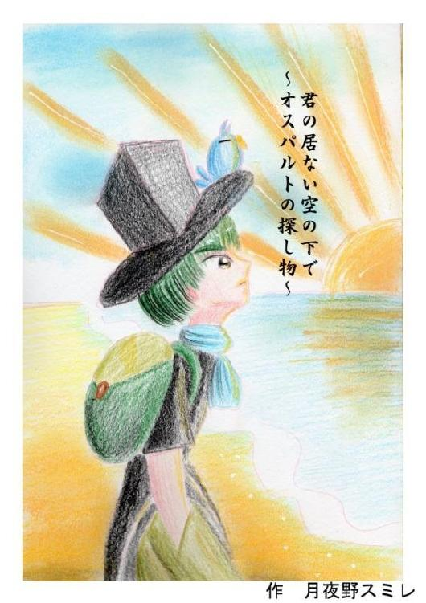
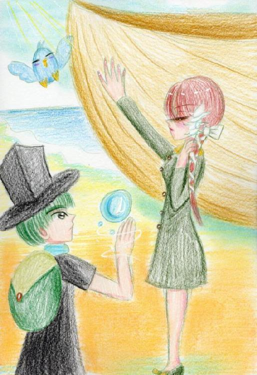
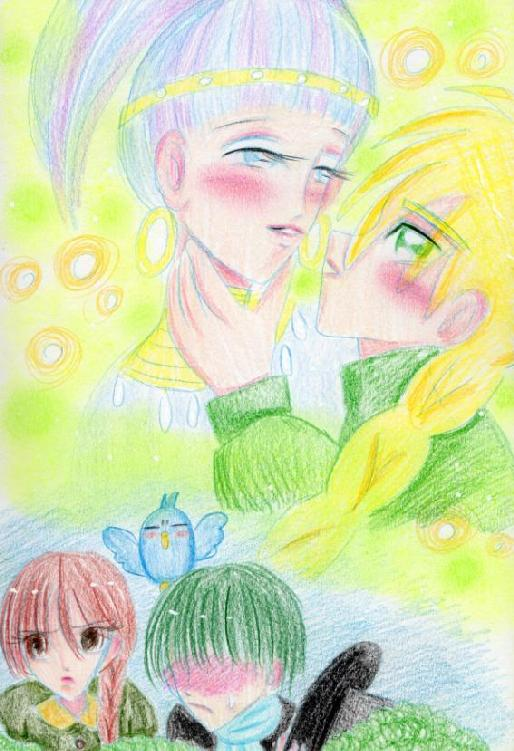
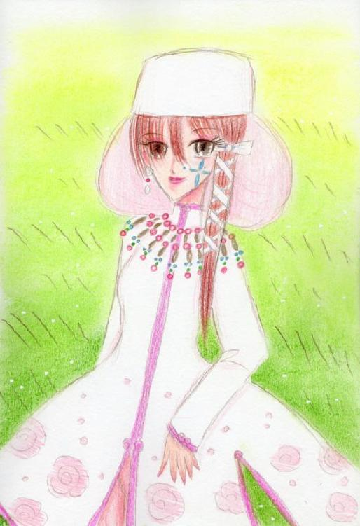
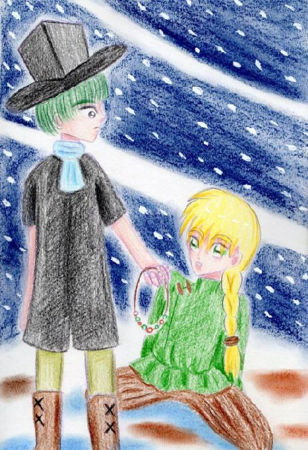
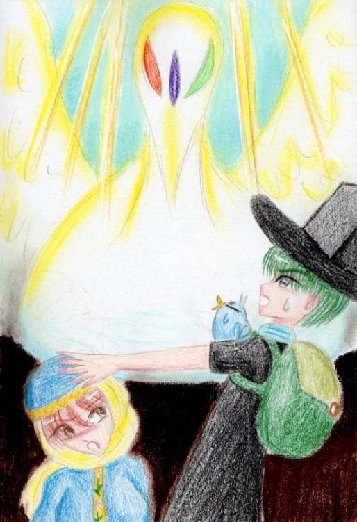
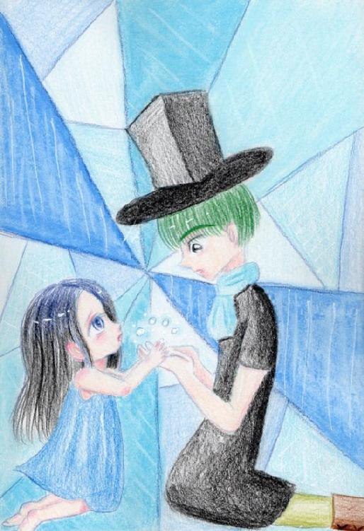
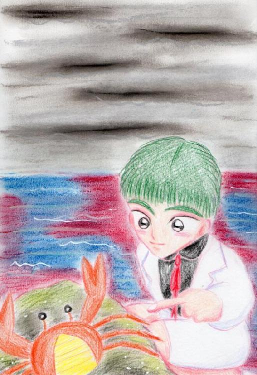
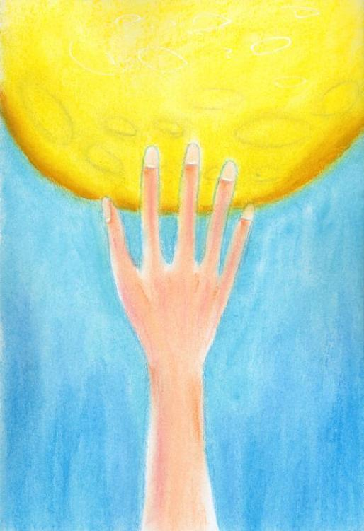
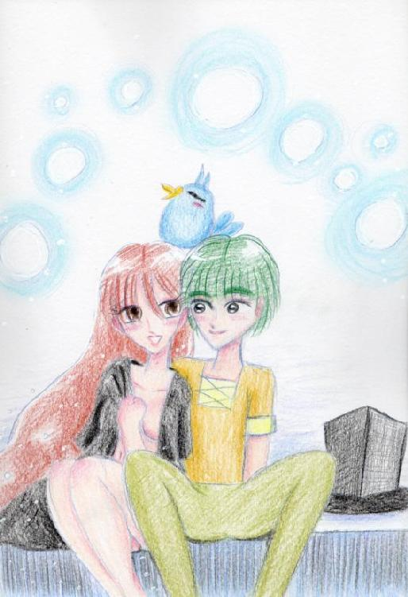

| 君の居ない空の下で ~オスパルトの探し物~下巻 君空シリーズ | |
| 月夜野スミレ | |
| tukiyonosumire (2013) | |

夜、《彼女》の声を思い出す。《彼女》の苦しげな声、辛そうな感情。もはや《彼女》の何を覚えていたのか分からない。思い出そうとすればするほど闇に意識がすべて飲み込まれてしまう。ただ《彼女》はオスパルトの知っている人だと感じた。感じたとはおかしな表現だった。
「っく」
思わずオスパルトは笑う。布団代わりのコートをはぎ、空を見上げる。満天の星空、雲ひとつない。しばらく眺めていたがやはり何も思い出せない。
横で寝ているガントールを見る。ぐうぐうといびきをかいている。この小さな生き物をそっとなでる。それだけで何か楽になったような気がした。
貴方は旅に出た。本当の旅、探し物に巡り合うために。そのためなら貴方は手段を選ばないだろう。血眼になって探すことだろう。
貴方は言った。必ず探し出すと。けれども、決して、決して逢うことなど無い。巡り合えない私達・・・・それが正しい。
オスパルトとガントール、スノールは目の前の景色に圧倒されていた。鬱蒼とした森林、ミズゴケが生え鳥の鳴き声が響く人のいない世界。目の前を巨大な黒い毛皮の獣が通り過ぎていく。人が簡単に口に入れられそうであった。それは森林に消えていった。
「あれって何？」
「本当に月流鯨のお腹を満たすものが居るのね・・・・」
オスパルトはうんと頷いた。
「でも大丈夫だよ、僕らはそんなに簡単に食べられないと思うよ？」「へ？なんで？」
ガントールは不思議そうに言った。
「それはね、ガントール・・・・そうだね、君が空飛ぶ光るパンケーキが飛んできたら食べるかい？」
ガントールはしばらく考えた後答えた。
「そんな不気味な物食えるか！！」
「そうなんだよ、見たこと無いものは皆戸惑うんだよ。思い切って食べるときはお腹がとても空いたときじゃない？だから僕らは見たこと無いパンケーキなんだ。襲われる心配はほとんどないね。難しいこと言うと食物連鎖に入ってないんだ。」
でもどんなおとなしい生物でも危害を加えると攻撃してくるだろうね、そして見慣れたら襲ってくるかもねと付け加えた。
「へえ～詳しいな！俺、びっくりしちゃった！今のお前、トゥーレみたいだな！」
「別に特別なことじゃないよ。ぼくは・・・・なんでこんなこと知ってんだろ？」
オスパルトは首をかしげた。スノールはオスパルトの顔をのぞき見る。あの時から数日何も変ったところは見受けられない。そうあれから数日経っているのだ。
「それにしてもスノールがついてくるとは思わなかった。」
「べ、別にいいじゃない。あたしはまだあなたに水蒸気爆発を教えてもらってないんだから、ただそれだけよ」
オスパルトはふうんと特に興味なさそうに言う。
「それにしても半袖になっちゃたな、オスパルト」
あの後スノールが袖を直してくれたが生地があるわけでもなく右の布地を半分にして半袖に仕立て上げた。
これからは南に行くのだからちょうどいいだろう。
「でも何で南なんだ？」
「特に意味は無いけどさ、こんなに生き物が溢れてるんだ！見なきゃ損じゃないか！南に行けばあったかくてもっともっと多様性に富んで行くよ！
《彼女》は探していればいつか出会うさ。きっと出会える。そう僕は信じている」
スノールはそんな呑気なオスパルトを責めずにただ聞く。
「《彼女》の事、怖くないの？」
「怖くない。言ったろ？僕は殺されても全然構わないってね。それよりスノール、君、本当にいいの？《忘れた世界》からどんどん離れていくんだよ？」
「別に構いやしないわ。いつでも水視で自分の足跡ぐらい辿れるんだから別に大したことじゃないわ、そのぐらい覚えたわよ。」
しばらく沈黙が続く。
「ねえ、あたしたちはあの《忘れた世界》を救えたのかしら？」
「救ってもらったの間違いじゃない？」
「どっちでも同じだろ？細かいこと気にすんなよ」
そうして鬱蒼とした森林の奥へ三人は消えていった。
暗い洞窟の中、三人の声だけが響き渡る。
「ねえ、外はどんなふうに変わった？」
「僕らが来た時は森林になっていたよ」
「へえ、そう・・・・じゃあ僕がいたときとはもう違うんだね・・・」
「君のいた世界って？」
「たぶん君には分からないよ。話したってね。僕はいつもじっとして待っているのが日課だったよ。」
「じゃあ外のことは知らないのかよ？」
「そうだね、必要なこと以外は全然知らないね・・・・でもご主人様の事だけ覚えてる」
「へえ、どんな人だった？」
「意地悪な人だったよ。でも最後の言葉は忘れられないな・・・僕に《逃げろ！》って言ったんだよ。それから僕は走ってここまで来て何もなくなるまでここにいてあいつらが街を消し去って行くのを黙って視ていた。だって僕にはどうにもできないことだったから」
「・・・・」
「どうして黙っているの？ご主人様みたいに《この役立たず！！》って言っていいんだよ？だって僕は本当に役に立ってないんだから・・・」
「それは違うよ・・・本当に役立たずだったら捨てられるか無視されるかどっちかだよ。君は君の居場所があったんだよ。」
「・・・・そんな風に言う人間初めて見た」
「そうだろ？そうだろ？こいつ変だろ！俺こういうところが好きなんだ！！」
「いいね、君は、帽子君。好きって言ってもらえる人、いや鳥か。どっちでもいいね。好きって言ってもらえることは素敵なことだよ」
「そんな風に言われるのは初めてだね、ガントール」
「君たちは何でここにいるの？僕の姿を見て何とも思わないの？僕はもう歩く事もできないんだよ。怖くないの？」
「別に個性だと思うから～姿なんてどうでもいいんじゃないの？」
「僕たちは探し物をしているんだ。他のことはどうでもいいんだよ。僕はオスパルト、この太っちょはガントール。君の名は？」
「もう僕には名前なんて意味なんてないね。そうだな・・・ピノキオとでも呼んでくれ」
オスパルトは苦笑する。ガントールは何が何だか分からずキョロキョロした。
「じゃあピノキオさん。最近僕ら以外の人間に出会ったことはある？」
「あるよ」
「ひょう！オスパルト！こいつはとびきりのネタだぜ！」
「どんな人間だった？」
「僕とは違う姿だった。そうだな・・・・君たちはどこから来たんだい？」
「《忘れた世界》から」
「聞いたこと無い国だね。そうだね、人間の姿はしていてももう別の動物になっていた感じがしたな。槍で突っつかれてさあ。鬱陶しかったよ。そんなに僕は醜いかい？それから一度も来ないね」
「どっちの方向から来た？知っていることだけでいいんだ。」
「ああ、僕は歩くこともできない役立たずだからずっと見ていることしかできなかったけど南のほうへ行ったよ。南には人がいるんじゃないかな。もう僕には関係ないけど」
「それだけ聞けば十分。あと一つ聞きたいことがあるんだけど・・・」
「いいけど一つ約束させて」
「いいよ、なんでも」
「じゃあどうぞ、続きを」
「人間が居なくなった直後何が起こったのか教えてほしい。」
「難しい事、言うね。僕にも理解不能だった。よくわからない事が起こってきれいに更地にされてすぐに植物が生えた。異常なくらいにね。それからは動けなくなったから大分経つから、分からないけど、君たちがここまで来るまで大体は解ったんじゃないのかな」
「そうだね、世界は動き続ける。それが摂理だ。」
「じゃ、もういいかい。今度は僕の番だ。」
「どうぞピノキオさん。」
「僕を殺して・・・」
「・・・・・」
「簡単だよ。待ち人はいつになっても来ないし、もう疲れたんだよ」
「それで満足なのかい？」
「満足だよ。君みたいな優しい人に出会えてよかった。君は約束を守ってくれるだろうしね」
そうだねとオスパルトはいい、ランプをピノキオに向ける。
洞窟の前にスノールは座っていた。座っているのはパネルの上だ。そこから古びたコードが洞窟の奥に続いている。オスパルトは持っていたナイフでコードをズタズタにしながら光のほうへ、スノールのほうへ歩いていく。
「どうだったの？このガラクタの正体分かった？」
「うん、人だったよ」
「え？あれって人間だったのかよ？」
「そうだよ、感情を持っていて話せる。人だよ。心もある。立派な人だ。」
スノールは洞窟の外を見つめる。ここからは濃い緑が一望できる。近くには乗り捨てられた錆びついている乗り物らしい物が転がっている。洞窟には蝙蝠の糞が落ちていて異臭を放っていた。今はこの洞窟の主は沈黙している。
「行こう。南へ。僕らは間違っていなかった。」
満点の夜空の下、炎が一つ浮かび上がる。
「ご飯♪ご飯♪」
「・・・・まさか貴方に助けられるとは思わなかったわ」
スノールはたき火に枯枝を放り込んだ。
「ガントールはなんで食べられる物が分かるんだい？」
「ん～何となく！俺は食えそうな物が生えているのは、見れば分かるぜ！」
ガントールは歩いている途中で食べられる物を見つけて、そのたびに騒いだ。オスパルトも何個か、見つけた。不思議なことに《忘れた世界》で食べられていた作物が野生化しながらもなんとか生き延びていたのだ。でもキノコ類は解らなかったので手を出さなかった。
「僕も何となく食べられる動植物は分かりそうだったけど、やっぱり鳥の勘って奴は馬鹿にできないね」
「こいつにそんなものあるかしら？あたしに暴言を吐いた奴よ・・・・」
スノールの刺すような視線がオスパルトの肩にいるガントールに突き刺さる。
「あわわわわ・・・・ゆ、許してください・・・スノール様」
オスパルトは二人の間に入り仲裁する。
「まあ、まあ。イモでも焼けたから食べよう。果物もあるしね。今日はお腹いっぱい食べられるよ」
「そうね、そうしましょう・・・・それにしても、痩せたわね。ガントール。」
「へ？」
「そうだね、大分肩が軽くなってきたと思った訳だよ。きっとトゥーレが見たら見間違うよ」
ガントールのシルエットは球体から美しい曲線へと変貌していた。
「やっぱりあれだけ騒いでびっくりするたび、飛びあがるのがダイエットになったんだね」
「それから食生活の改善も重要ね。やはりあたしは間違ってなかったわ！後は貴方がもっと肉をつければいいだけね」
オスパルトは相変わらず細かった。
「さっ食べたらまた水蒸気爆発を教えてちょうだい。大分、コツがつかめてきたわ」
「あんなにてこずってたのに、急にできるようになったね」
「・・・・そうね、何事も努力ってことかしら？」
スノールは横を向く。つられてオスパルトもそちらのほうへ見る。
「生き物、寄ってこないわね」
「そりゃそうだよ。生き物は火を本能的に避けるものなんだよ。火を克服したのは人間ぐらいなものだよ。だから僕はここに来てから、火を絶やさないようにしているだろう？それで夜行性の猛獣を追い払っているんだ。生き物は大抵が夜行性。暗闇で狩ったり狩られたりするんだよ。昼間は寝静まっているから移動しやすい。
・・・・なんでだろう。こんなにすらすらと知識が出てくるよ。僕は一体何者なんだろうね？」
「いずれ分かるわよ。この旅はその目的も入っているのだから」
月は満月だった。今宵は空気が澄んで星の海がよく見える。オスパルトは現在地の高度が高いんだと考え疑問をまた抱く。なぜそんなことが自分に分かるか分からない。
次の日、オスパルト一行は沼地に差し掛かっていた。
オスパルトは少し思案して手袋を脱ぐ。そして濁った水に手を浸す。
「ふ～ん」
「どうだった？オスパルト」
「沼色の巨大魚がいた。後結構きれいな色の魚がいた。」
「変よ、それ。なんでこんな沼にきれいな色の魚が居るのよ？」
「別に珍しくないよ。綺麗な色は濁った水では保護色になる。それに自分に毒があるって誇示しているかもね！それより問題なのが二つある」
「何？何？」
「この沼の生き物の記憶を見たんだけど。さすがに読みにくかったけど・・・この沼に大型の動物がハマった事があるらしい。だからこの沼は底なし沼かもしれない。あと二つ目はワニみたいのが隠れてる。」
「ワニって何？」
「怖い気性の荒い肉食の爬虫類、よくわからないものも動いてれば平気で襲うかも」
二人は考えてもよくわからなかったが危険なことが分かった。
「ふう～ちょっと休ませて、嫌な物視たから・・・」
「嫌な事ってなんだよう～？」
「ガントール、君ねえ。嫌な事聞きたいのかい？いいかな、知っても絶対後悔するよ？」
「もっと知りたくなった！教えろよ！！」
オスパルトはガントールをでこピンしようとするとガントールはふわりとかわした。
「おっやるね」
「いいから教えろよ」
オスパルトはガントールに耳打ちした。
「うええええええ！！！魚って死体食うんだ！？内臓から食うんだ！？ショック！穴ぽこ死体？ひええええええ！！」
その様子をスノールは見て一言。
「馬鹿」
オスパルトは空を見る。太陽がさんさんと降り注ぐ。五分ほどだろうかそのわずかな時間でオスパルトは回復した。
「・・・・よし、行こう。この沼を渡ろう。この沼を向こう側に渡れば綺麗な水が流れ込んでくる。そこで水視してみよう。人間が通ったならそんなきれいな水を見逃さないはずだよ。」
「ワニはどうするの？殺す？それとも沼にはまって死んでみる？」
「スノール、僕らは水使いだよ。橋がなければ作ればいいじゃないか！」
人一人歩ける氷の橋を造り全力でオスパルト、スノールは走った。その後ろを振り向かなければいいものをガントールは見てしまった。
「ギャアアア！！なんだ！あれ！！どこに隠れていたんだ！？あんなにでかいの、ワニって！？なあオスパルト！！」
氷の橋を登ってくる怪物を見てガントールは騒ぎたてた。
二人は無視して沼を渡り切った。しばらく息を整える。見れば森林から小川が流れてくる。その水は透明度が高い。ちょろちょろと耳に心地いい音が流れていた。二人は夢中でその冷たい水をすくい飲んだ。
「本当にこっちに人間が歩いてきたんでしょうね？間違ったらあたしたち、遭難するわよ」
「いや、間違いじゃないよ。必ずこっちで合ってる。」
二人は草をかき分け倒れた大木を上り、先を進む。
「なあ、湖が近いのかな？波音がするぜ？それに変なにおいもする～」
ガントールは鼻をクンクンする。
「あら、本当。不思議ね。何か懐かしい匂いね」
オスパルトは急に足を速め走る。その足元は土から砂利、砂へと変わる。灌木をよけ草を踏みしだくとそれは見えた。
「海だああああ！！」
「海？何それ？湖だろ？でかい湖だな。果てが見えないぞ」
オスパルトは砂浜を飛んで波間へ駆け寄る。悲しくも無いのに涙が出た。
「すごい、すごい！こんなにきれいな海。すごいよ！あはははははは！！僕は海を、本物の海を見たんだ！すごい！すごいよ、ガントール！」
オスパルトは笑いながら海岸を走る。肩のガントールは静かにそれを見つめていた。
「随分ご機嫌だな、オスパルト」
「もちろんそうさ、だって考えて見てよ、ガントール！海まで来たんだから嬉しいに決ってるじゃないか！」
そう行ってぐるぐる回り始めた。
「おいおい、目が回る、目が回るぅ。やめてやめてえ」
「あははは、君に羽根の代わりに腕があったら一緒に手をつないで回りたいくらいだよ」
あまりにもぐるぐる回ったのでバランスを崩し砂浜へと転がってしまった。オスパルトは太陽がまぶしいのか顔をしかめた。それでもしばらく笑っていた。
スノールも遅れてその光景を見た。どこまで続く蒼い海。白く太陽の光を反射する砂浜。１８０度広がっている。スノールはしばらく見とれていた。ひどく懐かしさを感じた。なぜだろう？
「スノールぅ！こっち！こっち！」
オスパルトが手を振り呼びかける。スノールの目にはその時のオスパルトはやけに幼く見えた。無邪気な子供に見えた。オスパルトなど全然趣味では無いのに心に熱いものが溢れてくる。スノールはオスパルト達の元へ砂を蹴って走り寄った。
・・・・・・・・・・・・・・・・・・・・・・・・・・・・・・・・・・・・・・・・・・・・・・・・・・・・・・・・・・・私は・・・・・・・・・・・私は・・・・・・・・・・・・私は祈る。貴方が幸せになるように・・・・この思いは届かなくても構いやしない。願う、こと自体馬鹿げているから。
「そっち行くよーーーー！！」
オスパルトが元気良くスノールに呼びかける。
「いいわよ、その方向で合ってるわ」
あらかじめ楔型に切り込みを入れ好きな方向に倒れさせる。
狙い通り川元に倒れこんで行く。スノールは確認するため大木の上に乗った。直径十メートルは太さがあるだろうか。見事な大木である。
「これを削りだせばいい船になりそうね。十分ね」
オスパルトは大木に祈りをささげた。
「ごめんなさい。でも僕たちには必要なことなんだ。君の命は無駄にしない」
「何言ってんだ？オスパルト。ただの木だろ？」
「うん・・・でも生きていた。それに一本の木を倒すと少なくとも30種の生き物に影響が出るんだ。僕らは迷惑をかけたんだ。この木に泊まりに来る鳥にも、虫にも酷い事をしたんだよ。それを忘れちゃいけない。」
スノールは悲観に暮れるオスパルトの背を叩く。
「じゃああきらめるのかしら？できないわよね。枝を切り落として川に流して移動させるわよ。後悔ならその後にしなさい。」
「そうだね、僕らはあの海の向こうへ行かなくちゃいけない。むしろ、一本ですんだって喜ばなくちゃね」
二人の水使いは水圧で丸太を川に押し流して飛び乗った。

夕方の海岸線に巨大な船が作られていった。超高圧の水流で船の形を整え内部をくりぬいていく。そして、転覆しないように船底は厚く平べったく長くしていく。
「これで二、三日乾かせば即席の船ができるね。その間にガントールの食料や、屋根や仕切りになる葉っぱとかを集めてこよう。」
「そうね、女には個室が必要よ。男子禁制のね」
「これってどう動くんだ？」
「僕たちが水を動かして移動させるよ。まあ嵐でもない限り好きな方向に進めるよ」
水などの問題は水使いの二人が居ることで考えるのも愚問だろう。ガントールは作業する二人を置いて物珍しい海水をなめる。
「しょっぱいなあ！未だに不思議だぜ。なんでしょっぱいんだ？誰かが塩を入れてるのか？オスパルト～」
「まあ、不思議だっていってもしょうがないよね。海を君たちは知らないんだから」
その言葉を聞いたスノールは髪をかきあげた。
「あたしは貴方の説明を聞いて納得したわよ。目の前の事実を受け入れないほど、あたしは愚かじゃないわ。・・・・今日は久しぶりに大きな水を動かして疲れたわね。なにかガツンとした物が食べたいわ。海には魚はいるのかしら？」
オスパルトは嬉しそうに帽子を指で回す。
「いるよ！きれいな海だからきっとカニとか、タコとか、イカとかもいると思うよ。」
「その生き物は食べられるの？」
「食べられる物も居れば食べられないものも居るけど、今日は釣りでもしようか？きっと誰も釣りなんてしないからみんな騙されてくれるよ」
ガントールは穏やかな波打ち際を飛び回っていた。どうやら貝殻が気に入ったらしい。船に入れて持って帰ると主張し始めた。まあ、大きな貝殻もあるので食器とかに使えそうである。砂浜を掘れば大人の手のひらの大きさの二枚貝がたくさん出てくる。この分なら今日はたくさん食べられそうである。
夜、オスパルトは果物の皮をナイフで剥く。赤い果肉から芳醇な香りが放たれる。火にくべた貝ははじけ、焼けた魚は脂がのっている。南に来ていいことは食糧が豊富になったことだ。オスパルトはいつものように鼻歌を歌う。明日はついに出航だ。ガントールは船に乗るのは初めてと喜んでいる。時折スノールはオスパルトを観察する。いまだ彼は海で視た水視の事を話す気配は無い。スノールも聞く気は無かった。方向は海の記憶を見ていけばいいだけだ。オスパルトが水視について切り出した。
「やっぱり人間の記憶は見やすくていいね。スラスラ頭の中に入っていくよ。人間は繋がっているんだなと感じる。」
「どんな人間が居るのかしら？そもそも言葉は通じるのかしら？」
「いきなり攻撃される可能性は否定できないね・・・・でもなんでだろう？十年に一度のペースでこの大陸に上陸しては帰って行くんだけど、何がしたいんだろう？おかげで僕は見つけることができたけど・・・・う～ん、考えても仕方ないね。さあ、できた。食べよう。頂きます」
それぞれが好きなものに手を伸ばす。ささやかな夕食をとった。
朝、三人は船を入水させ乗り込む。船は勢いをつけぐんぐん緑の陸から離れていく。振り返るとカモメが追い越して飛んでいく。朝日を目印に水平線へと進んで行く。船には五つ区切りが設けられた。一つはスノールの秘密の部屋、食糧庫、オスパルト達の寝室、食事をする部屋、船首にある見晴らしのいい部屋。特にこの船首の部屋はオスパルトが水視をしたり移動に使う重要な部屋である。屋根はよく乾かした葉で強い日差しを遮っている。食糧はいくらでも下にいる。完璧な計画である。・・・はずだった。
二週間後・・・・
「暇だ・・・・暇だ！暇だ！すっごくつまらない！！オスパルト～つまんないよ～」
「退屈ね・・・・海は広いって聞いていたけどこんなに広いとは思わなかったわ。運動不足になっちゃうわ。水蒸気爆発は覚えたし、三人でできるゲームはやりつくしたわよ。あたし、刺激の無い生活って耐えられないわ・・・」
「が、頑張ってよ。君と交替で動かしてるんだから君がそんな調子じゃあ困るよ」
しかし、二人はだらけた様子で続ける。
「こうも同じ風景が続くと意外と効くわ～。慣れなくって吐いてたあのころが懐かしいわね・・・」
「スノール、ゲロゲロ～♪」
「ああ、スノールは結構船酔い酷かったもんね。数日で慣れたのはさすがだと思うけど。ご飯もよく食べられなかったもんね。治ってよかったよ。」
スノールは少し頬を染めたが気取られぬよう横を向いて話す。
「あとどれぐらいで着くのかしら？力が有り余って仕方がないわ」
「海流に乗ったしこの分ならきっと近いうちに辿り着けるよ」
「な～オスパルト～なんか話してよ～つまんない～」
「う～ん・・・・何話せばいいのか、僕にも話題のネタが尽きてきたよ・・・ってあれは？」
船首に腰かけていたオスパルトの視界に飛び込んできたのは一隻の原始的な船だった。竹で組みたてられた粗末な船、一人の男が銛を持っていた。裸に近い姿をしており日に焼けていた。男はこの船に向かって漕いでいた。
「なに～？鳥でも飛んでいた？カモメ？って違うの？」
まだ状況が把握できていないガントールと違ってスノールは飛び起きオスパルトの横に走り寄る。
「あれは・・・人ね。・・・ふふふ、面白くなって来たわね。ようやく見つけたわ。あたしは後ろで何時でも攻撃できるよう待機する。合図したら遠慮無くやるわ。」
「で、でも・・・」
「よくわからないものをどうするか子供でも分かるわよ。銛でつつかれるなんてあたしはごめんよ。」
「わかった。でも僕の指示に従ってもらうよ。僕が交渉する。」
スノールは音を経てず後ろに下がった。ようやくガントールは眠気をはらい、肩に飛び乗った。
男はオスパルトを見て手を広げ満身の笑顔を浮かべ頭を下げた。オスパルトも見よう見まねで同じ動作をする。船はもうぶつかりそうなぐらい接近していた。男は乗り込んできた。また手を広げ頭を下げる。
「おー！貴方旅人ですかー？私、ザッパーンと申します。以後お見知りおきを！旅人様来たるとき、白き神解放される！めでたいですー！握手、握手！」
オスパルトは困惑気味に握手する。そして、その手の感触に驚いた。ザッパーンはスノールにも握手を求めてきた。スノールも握手してやはり驚いた。手は暖かいのだが、問題は感触である。皮の手袋の感触に近い手の平。オスパルトはザッパーンの体に触れてみる。堅い。見た目はただの皮膚だが、なめした牛の皮の感触がする。
ザッパーンは気にもせず指を水平線の向こうに向ける。
「お―貴方達歓迎します。私たち《魚》は旅人様を歓迎します～！さあ、私たちの村に行きましょう。もう少し、向こうですー。」
しかしオスパルト達の目にはただの水平線と雲しか見えない。オスパルト達の目が悪いわけではない。むしろ広い《忘れた世界》を見てきたので視力はいいほうである。
「何にも見えねえぞ」
ガントールは一言話した途端、ザッパーンは飛びはね、元いた船に戻った。二人に警戒が走る。ザッパーンは頭を船底に擦り付けるほど、熱烈な土下座をした。
「お―すみません―。神の使いがいらっしゃる事も気付かず船に乗り込みご無礼をー！！私とても悪いザッパーン！！お許しください！！」
一同に困惑が走った。彼が何を言っているのか誰も理解できない。ザッパーンはひたすら土下座を繰り返していた。
「そ、そんなに謝んなくてもいいんじゃねえの？」
ガントールの言葉にザッパーンの顔は一気にほころぶ。
「お―よかった！私、一族に殺されるところでした～！感謝、感謝！」
ザッパーンは案内役を買って出た。やけに上機嫌なザッパーンの後についていきながら小声で話し合う。
「オスパルト～怖いよ～こいつなんか変なテンションだぞ～！」
「しっあまり大きな声出さない！・・・・神って言ったよね？神って・・・」
「あたしの耳にもはっきりと聞いたわ。白い神って言ってたわよ？色があるってことは実在するの？神がなんなのか聞いてみる？」
「やめようぜ！今刺激するもやばいって！それよりこいつについてっていいのか？俺たち食われちゃうんじゃないの？」
「なんとかなるようになるさ。僕たちの能力は、あっちは知らないはず。勝機はまだある！」
ザッパーンが指さしてきたとおりの方向にやっと船団が見えてきた。あれが彼の言う村なのだろう。そしてさらに向こう側にうっすらと陸地が見える。やっとオスパルト達は《忘れた世界》の者ではない人間を見つけたのだ。
船団に着くと人々が笑顔で迎えてきた。なぜか異様に優しく接してくる。
「おー、言い伝え通りだ！羽ばたく時が近い！喜びの時だ！」
「祝福しよう！私たちは貴方達を歓迎します！」
子供たちは手を振って跳ねて船がそのたびにきしんだ。
「本当に旅人様だ！見たこと無い服を着ているよ！」
「僕らの新しい日の始まりだ！！わーい！」
お辞儀をしてくる人々を掻い潜りオスパルト達はザッパーンに手を引かれ一番大きな船に入って行った。姿が見えなくなっても人々は喜び勇んでいた。
「ねえ、ザッパーン・・・・誰のところに行くの？」
「それは族長パラジのところ！パラジ、《魚》の族長！族長はすごい！一番大きなサメを倒した！この《魚》で大人になるにはサメを倒す。そして若い時に族長は一番大きな人食いザメを倒した。だから誰もパラジが族長になるときに文句ひとつなかった！偉大な男、優しい男。旅人様もきっと気に入る。さあ、この部屋で待ってる！入って、入って！」
のれんの奥に半ば強引に押しこまれると一人の老人がいた。老人はにかっと笑う。歯を何本か失い頬にはざっくりと何者かに噛みつかれた跡があり笑うと顔が微妙にひきつった。族長パラジは座るようにせかした。床にござが敷いてあり、竹で編んだ座イスがあったのでそこに座った。入ってきた入口を見ると壁に大きなサメの骨が飾っていた。きっとこれが族長パラジが倒したサメに違いない。下顎は床に置かれて歯を抜いてある。それは入ってきたときにはただの段差としか分からなかったほど大きい。
パラジは煙草を咥え、火をつけ一服する。それからクエの骨酒を勧めてきた。パラジの横に置いてあった荒い土を焼いた壺は何かと覗けばあぶられたクエがその頭のこぶを浮かべ睨んでくる。なんと一匹丸ごと入っている。クエとは熱帯に棲む巨大魚だ。オスパルトは断ろうとしたがスノールは何も言わずそれを一気飲みした。
「ス、スノール・・・」
「何？出された物はいただくのが礼儀よ。例え毒でもね。でないと信頼されないわ。」
オスパルトも仕方がなくスノールが口をつけたところをよけて飲む。辛い、辛い辛い辛い辛い。オスパルトは何とか飲み下しニッコリと笑った。つられてガントールも飲む。すぐ一口でやめた。
「うえ～～～～！！から！にが！おえええええ！！」
それを見た族長パラジは目を見開き、豪快に笑った。
「さすが旅人様じゃ！神の使いを連れているとはな！わはははは！！許されよ。これが我ら《魚》の流儀じゃ！この骨酒を飲んだ者はみな兄弟、この屋根の下、生活することが許される。皆、良い人間ばかりじゃ。何日でも滞在されるといい。」
パラジは口元を押さえているオスパルトに水を差しだした。
「辛いか？じゃがこれがいい！いつか分かるときが来る。かくいうわしも苦手じゃがな、族長としては飲まなければ示しがつかんのじゃ」と骨酒をあおった。
パラジはふうと溜息を洩らし手をたたく。すると女たちは果物の干したもの、シャコガイの煮付け、人の頭ほどのエビの蒸し焼きを運んできた。初めて見る食べ物にその大きさに戸惑うオスパルトにパラジは食いながら言う。
「できあい物で済まないが、いきなりだったのでこれぐらいしか用意ができなかった。許されよ。だが皆味は保証済みだ。食え！そして聞きたい事を聞くといい」
オスパルト達はとりあえず食事には手をつけず聞くことにした。
「白き神とザッパーンは言いました。ここに神はいるんですか？」
パラジは笑った。
「何を当たり前のことを！！しかし、ここにいるわけではない。皆神の子だ。この食べ物も、この海も、あの《馬》や《狼》や《鳥》が居る大地も皆神が作った。神は大地に息づいている。そしてわれらが白き神は《鳥》が守っている。我々も守っている。だから我々はこうして生きていられる。
あの厄災の日々、祖先は神にすがることで生き延びた。白き神は言った。《生きたいか？》と。我々は生きたいと言った。だから生かされた。
もうすぐ祭りが近い。あれはいい！勝てばほしいものを何でも一つ叶えて頂ける。素晴らしい祭りだ。精霊は踊り、人々は酒を酌み交わす。この世界に来ていることを感謝して！」
オスパルト達は聞き呆けた。パラジの言うことが正しければこの大地に神が存在すると言っているのだ。しかも何か願い事を叶える力もあるという。
「例えばどんな願い事を叶えてくれるんですか？」
パラジは自分の顔を指差した。
「見るがいい。この顔を。ひどい傷だろう！だが誇りの傷だ。仲間たちが祭りの祭儀に勝ちわしを治してくださいと願った。その願いどおり白き神はわしを救ってくださり第二の人生を与えてくださった。」
「万能なの？」
「これはひねくれたお譲ちゃんじゃ！神は万能だから神なのだ。今までわしらが願った願いはすべて叶えて頂いた。」
スノールは沈黙した。きっと理解不能なのだろう。
オスパルトは負けずに質問を続ける。
「じゃあ《魚》とは何ですか？」
「それはわしらは海にすんでいるから《魚》じゃ。他に暗きジャングルに棲む《狼》、草原を獣と駆ける《馬》、そして白き神を守る聖地を守護する《鳥》。特に《鳥》は別格な存在だ。《鳥》が我々を訪ねることはできても我々が訪ねることはできん。そういうルールでもあり、そもそも道がないからな。きっと旅人様が行っても聖地に行くことはできんだろう。」
「神は《鳥》のところにいるんですか？じゃあどうやって願い事を叶えてもらうんですか？」
「《鳥》でも特別のシャーマンのみが白き神に謁見することができる。願いはシャーマンが聞き届ける。そして現実に叶う。すなわち神はいるということだ。今は信じられないかもしれんがその内に神の御技を見ることができる。なぜなら祭りが近いからな！」
オスパルトはエビの殻をむき無言で食べた。味はよくわからなかった。混乱して良く味わえなかった。
パラジの話では《鳥》に会うには一つの道があり《狼》、《馬》の住む土地を通らなければいけないらしい。神はそこにいる。そこまで聞いて三人は眠くなってしまった。長い旅による疲れと酒のせいだろう。今日は強く勧められて自分たちの船では無くザッパーンの船に泊まることになった。
｢クエの骨酒を飲んだか？おー！それは重畳！これで私たち、兄弟！私の家族と今日は寝てください！私たち、大歓迎する！ささっ汚いところだが寝るといい！旅の疲れをとるといい！｣
ザッパーンの船にはやはりパラジとは比較にはならないがサメの骨が飾ってある。ガントールはそれを見ている。
｢なあ、これってどこにいるんだ？やっぱり顔だけなのか？｣
｢違うよ、ガントール。この人たちはサメの頭を飾る習慣があるんだろう？｣
｢おー！その通り、サメは強く美しい。サメは海の神の精霊。普段は取ってはいけない大切な魚！昔の人はサメを殺しすぎたから滅びた！大事なものを殺す。それは自分を殺すことに等しい｣
オスパルトはふと思い出しそれを言葉にする。
｢サメは太古から姿を変えない完成された生き物、だからどんな過酷な場所にも適応できている。でも僕ら人間はまだ生まれて間もない。人間は進化し続ける。それは不完全な生き物の証拠なんだよ。だから人がサメを神聖視してもおかしくないね。｣
ガントールはしばらく黙っていたがオスパルトに尋ねる。
｢・・・・じゃあ、鳥は？｣
オスパルトはガントールの頭をなでて答える。
「鳥も完成された生き物だよ。昔からほとんど姿を変えていない。」
｢そ、そうか！！俺って完成された生き物なのか！そうか、そうか！｣
嬉しそうに船の中を飛び回る。ザッパーンの子供がそれを捕まえようと跳ねまわる。母親は子供をたしなめる。
そんな風景を見てオスパルト達は笑う。寝る用意をする少しの時間、子供四人とオスパルト達は遊んでいた。子供が息を飛ばし二、三メートル先の標的を倒し皆をびっくりさせた。子供の手に触れたがやはり大人とは比べると大したことがないが皮膚がオスパルト達より厚かった。子供も不思議がった。
｢こんなおててじゃすぐ泳げなくなっちゃうよ？どうしてそんな皮をしているの？｣
「さあ、どうしてだろう？僕たちはそんなに泳がないから大丈夫だよ」
「じゃあ旅人様は《狼》なの？」
｢馬鹿、違うよ！旅人様は《馬》だよ！｣
｢でもすぐ答えてこないよ！｣
｢《馬》にあってない奴が知ったかぶりすんなよ！あいつら、僕らを見下してんだ！一番《鳥》に近いからって僕ら《魚》の事馬鹿にした考えをもってやがんのさ！やなやつらなんだよ！｣
一番年長者の子がオスパルトの裾を引っ張る。
「ねえ、旅人様！《馬》のこと信用しちゃあいけないよ！あいつらいつもすべて疑っているんだ｣
オスパルトはその子の頭をなでる。
｢ご忠告、ありがとう。でも人を疑っちゃあいけないよ。疑うとみんなから疑われるよ。人を信じろとは言わない。でも、悪いことすればすべて自分に返ってくるよ。だから、ね。約束しよ。もう人を悪く言わないって｣
｢う～旅人様の言うことは正しいの？だって旅人様は外から来たんでしょ？なら僕の話も聞いたほうがいいよ｣
そういうと子どもは大人たちのほうを見る。大人たちは寝る準備をしていて聞いていないようだった。
｢ねえ旅人様だけに教えてあげる。耳を貸して｣
子供はオスパルトに耳打ちをする。
｢本当はみんな忙しいんだ。あと二週間もすれば祭りが行われるんだけど、今回の祭りは普通じゃ無いんだ！外の世界を視てくる人を選ぶ祭りなんだけど、えっと旅人さまが来た事で何か変わってしまうかもしれないんだ。旅をする人たちを決める代わりにその人たちの願い事を叶えるんだよ。それが旅人さまが来ておじゃんになっちゃうかもしれない。僕らのお父さんも願い事を叶えたいと思ってるらしくてさあ、心の中では旅人様のことどう思っているのか分からないよ。今は《魚》しか旅人様の事を知らないから旅人様をどうするのか、みんなの気分しだいだよ｣
オスパルトはスノールのほうを見る。スノールは水を操って子供たちを驚かしていた。今の話を聞いたらスノールはどんな顔をするのか想像に足らない。
オスパルトはその子の頭をなでる。
｢君はひねくれた子だね。僕の子供のころにそっくりだ。人の事を何でも疑って信じようともしなかった。でも人は繋がっているんだ。大人はそんな手は使わないよ。やるときはみんなで協力してやるよ。だからここでは僕らは殺されたりはしない。大丈夫。心配してくれてありがとう。きっと君はやさしいんだね。僕と違って君は僕に忠告してくれた。でももっと大人の事も信じたほうがいいよ｣
子供はびっくりした顔でオスパルトを見た。
「そんな事、言われるの初めて。みんな僕の事、悪い子だって言うのに・・・」
「人と見方が違うからって非難される事は確かにおかしいかもしれない。けど逆にいえば君は誰にもできない発想ができるってことだよ。お父さん、お母さんにもっと自分の気持ちを正直に話せばきっと解ってくれるよ。」
「う～旅人様の話、よくわかんない」
「本当に俺もこいつの事何言ってんのかわかんない・・・」
話を聞いていたガントールも首をかしげた。
ザッパーンが寝床の用意ができたと呼んだ。オスパルトは子供の頭を撫ぜると寝床に向かった。
寝床はヤシの葉を敷いた粗末な寝床であったが暖かく湿気の多い海の上ではちょうどよかった。オスパルトは帽子をとり横になった。年長の子供はぴったりとオスパルトの横にくっつき寝ていた。どうやら懐かれたようだ。明かりは消され海面に星空が映し出されていた。瞳を閉じた時、スノールがささやく。
「過去を思い出したの？」
「いや、君は、スノール・・・子供のころを覚えているかい？」
「覚えているわ。おぼろげに、よくこんなふうに夜、お母様と同じベッドに寝て話したわ」
「ちょうどそんな感じだよ。なんとなく覚えている。話していると自然に出てくるけど、こうして思い出そうとすると思い出せない。」
「そう・・・なら思い出せるならそれでいい。いつかすべて思い出せるわ。お休みなさい」
「おやすみ、スノール」
犬と猫の瞳が嫌い。牛や鶏、豚、家畜に言い訳ができない。人間の周りにある命そのものが恐ろしい。私はこの手であまたの命を奪っていく。誰にも押し付けられない私の罪。人々は命を飲みこんで行く。命を繋いでいく。それは誰にも責められないこと。だから私も命を狩っていく。それももう昔の事だ・・・・
オスパルト達はまず神という者が存在するならばそれを確かめなければいけないと考えた。しかるにパラジに神に会う方法を翌朝聞くことにした。パラジは船で話を聞くと傷跡をなでる。
「ふむ、白き神に謁見するというのか・・・ならばザッパーンよ。彼らを《狼》の元へ運び全部族に旅人が現れたと伝令を出すのだ！奇しくも祭りが近い。これも運命か・・・」
「ははあ！ザッパーン、確かに命を承りました！」
オスパルト達は自分たちの船に乗り込み陸を目指した。ザッパーンの子供は見えなくなるまで手を振り続けた。
「おー、旅人様の船は不思議！誰も漕がないのに進んで行く！」
「まあ、水使いの力で動かしてますから・・・そういえば僕たちの力を見ても、驚かないですね？疑問がありますなら何でもお答えいたしますよ。一宿一飯のお礼もありますから・・・」
「そんな事、全然気にしない、気にしない。伝説の旅人様なら特別な力を持っていてもおかしくない！私たち子供のころからずっとそう教えられてきた。だからどんな旅人様でも受け入れていく。もしおかしい旅人様なら白き神が滅するはず・・・あの浜に上陸してください。子供たちがヤシの実をとっているあの浜です」
ザッパーンの話では砂糖ヤシの実のジュースを熟成させ酒にするのだ。子供たちは安全な浜で泳ぎの練習やヤシの実をとるのが仕事だという。このきれいな海にも危険があるのかとパラジの傷を思い出す。どこにも危険はある。ただそれを当たり前と認識しているかそうでないかの違いだろう。
「この海は潮の流れが速いんです。気をつけないととんでもないところまで流されてしまいます。だから子供たちの船は大人が漕ぎます。さあ、着いた。このジャングルが《狼》の住処です。私、陸ではあまり役に立たないかもしれない。奴らは気難しいから言われたことは全部やってください」
よくわからないアドバイスを受けとりあえず頷いたもの《狼》自体どんな人々なのか理解できた旅人は一人も居なかった。とりあえず船から降りジャングルへと踏み出した。そこは森を彷彿とするような草いきれが深い場所だった。鳥が遠いところから鳴き、何者かの叫び声が響いている。ザッパーンは銛を持ち慎重に歩いていく。
「色のきれいな生き物は触らないように、皆毒を持ってる。これで《狼》は矢じりに毒をぬる。あちこちに罠を仕掛けているから気を付けてください。」
「罠？そんなんどうやって気をつけんだよ？」
「おー！それはあんまりなお言葉！私、精一杯気をつける。後これを持ってください。」と渡されたのは赤と青の染料で染めた旗だった。
「これで敵意がない、友好的な証しと合図します。人影を見たらげんきよく振ってください。」
「はあ・・・・」
スノールがオスパルトに耳打ちする。
「貴方、水視で大体の場所ぐらい予想できない？これじゃ何時まで辿りつけるか分かったもんじゃないわ」
オスパルトは頷き、愛用のナイフで適当な木に傷つけ樹液を水視する。これで直接木を視はしないからこの木は枯れる事はないだろう。最近はこの辺りには人間は出没していないようだというとザッパーンは驚いた。
「おー、そんなこと言われてもザッパーンとても困る！さすが旅人様、不思議なお力持ってる！」
「そうだろう！そうだろう！俺たちはすごいんだ！」
「貴方はすごくないでしょう・・・」
オスパルトは定期的に樹液を水視し、近くへ移動していく。何度も罠を見かけた。実に巧妙であったが水視によってその存在はばれてしまった。露骨によけ罠が増えていく方向へ行く。
「《狼》と《馬》は定住をしないんです。だから歩いて見つけるしかないんです。困りますねー。とてもとてもー」
ザッパーンはあまり困った様子も無く見つけられない事をごまかした。
その時、森林に子供らしき人影をガントールが見つけた。
「あそこに人が居る！」
その子供はものすごい速さで木に登り枝を渡っていく。
「旅人様！旗を振ってください！このままだと《狼》の群れに襲われてしまいます。さあ早く！」
訳がわからずオスパルト達は旗を振る。子供は振り返ると戻って来た。いや子供では無かった。髭が蓄えられていた。オスパルトは背が低いほうではないが高くもない。平均的である。近づいてくる《狼》の背丈は明らかにオスパルトより低かった。男は低い声でつぶやく。
「俺たちの縄張りに何の用だ。俺たちには用は無い。出て行け！」
「おー、《狼》相変わらず、気性が荒い。話がある。この人たち、旅人様。とうとう約束の時が来たと《馬》と《鳥》に伝えてくれ」
《狼》は鋭い目でオスパルト達を睨む。ガントールはびくびくしながら憎まれ口を立てる。
「何だ！なんだ！俺たちが変か？よくわからないけど旅人だぞ！よくわからないけど偉いんだぞ！」
男はガントールを見つめる。そこには敵意もなくただ驚きで満ちていた。
「何だよ！？こいつ、オスパルトは強いんだぞ！お前なんかすぐに倒されるんだぞ！」
男は頭を垂れて跪いた。
「聖なる神の使いよ！俺はコリンガだ。貴方に忠誠を誓おう。さあ命令を！我々は貴方の槍となり、どんな猛獣でも打ち倒そう。」
オスパルトはしゃがんで彼の顔を覗き込む。つられてガントールものぞきこむ。
「僕らは命令はしませんよ？ただ神に会いたいだけですよ。それ以下でもそれ以上でもないです。楽にしてください。僕らは侵略も殺戮もしないです。」
コリンガは少し頭をあげオスパルトを見る。
「それが旅人の意志なら従おう。だが、どうなるかは《鳥》が決めることだ。付いて来い。我々の集落に行き酋長に報告する。すべてはそこからだ。《魚》よ、去るがいい。お前の役目はおれたちが引き継いだ。」
ザッパーンは肩をすくめ、オスパルト達に手を振りながら去っていった。
コリンガは黙って森林を歩いていく。皆、彼の後姿を見ながらついていく。コリンガは子供のような体形をしていながらよく見ると逞しい筋肉と独特の入れ墨をしているのが分かる。黒曜石の槍を持ち地面、空に視線を落としながら歩いていく。今まで森林にいい思い出はあまりない。何かしら何かがいたので気をつけているとコリンガがぼそりとつぶやく。
「そんなに警戒しなくても我々が獣をこの辺りから一掃してあるから大丈夫だ。我々はあの広い大陸からこの島に続く道から獣を排除している。《馬》と《鳥》を守るためだ。全ては白き神のためだ。」
「神はそんなに偉大なんですか？」
「偉大とかいう問題ではない。我々は死ぬところを助けられたのだ。だから守る。それだけだ。」
《魚》とは違って近寄りがたい雰囲気を持つ《狼》に少し戸惑うオスパルトだったが質問を変えてみる。
「ここの獣を排除してどうするんですか？」
「獣が住みつけば人間が暮らす事は難しい事だ。その逆も言える。それに旅人なら視たはずだ。自然に還った世界を・・・我々が居ないほうが正しい。人間は殺しすぎたからな。今度は我々が殺される運命だ。だから抗う。この島を物理的に切り離すように土を切っている。大体の《狼》と《馬》はそれを行っている。そしてこの島で必要なだけ殺し生きていく。着いたぞ。」
そこには煙が立ち竹で編んでありすぐに移動できるよう作られた家が木の上に作られていた。良く見渡せばそこやかしこに家がある。見慣れていない人間なら気付く事もないように自然に溶けている。
「来い、この家だ」とするする木に登っていくコリンガ。オスパルト達も登っていくと非常に背の低い入口がある。しゃがみ入っていくと金細工を首にかけている太った男がいた。太っているといってもその体躯はやはり背が低く筋肉がついてあり絞られている体だった。彼は静かに目を閉じていた。コリンガは彼に耳打ちする。彼は一回頷くと目をゆっくりと開きオスパルトを見る。瞳は暗い闇の色だった。
「私はストーク。《狼》の酋長だ。旅人よ、よくまいられた。我々は歓迎する。我々の礼儀は無きに等しいが許されよ。我らは戦士、死ぬまで神の戦士だ。今宵はもう遅い。泊まる用意をさせよう。聞きたい話は《馬》に聞け。彼らは話し上手だ。よほどのことがない限り我らより詳しい事が聞けるだろう。だから今宵はゆっくり休め。」
ストークは葉巻を吸う。狭い場所で吸われるので煙たい。
「うえ！げぼ！ちょっと待てよ！いきなり吸うな！」
ストークは吸うことをやめない。
「これは悪い精霊を払う清めの煙だ。我慢するがいい。」
ガントールはスノールのほうを見た。いつもなら機嫌が悪ければ怒りだすスノールが静かだった。何か考え事をしているようだった。
「何してるの？ガントール？」
「ん～スノールがなんか変？」
オスパルトもスノールを見る。確かにさっきから静かだった。煙も気にしている様子は無い。何か思案している様子だった。
「どうしたの？スノール。」
「・・・・何かしら？聞いてなかったわ。ごめんなさい。もう一回言って頂戴。」
髪を掻きあげいつもの調子を取り戻したようだ。煙を払っている。
「いや、なんでもないよ。後で話すよ。今はストークの話を聞こう。」
ストークは一服し終わると壺から灰をつまみ頭からかけてきた。
「なになになに？これは何の真似！？」
さすがにこれはスノールは腹が立ったようで立ち上がり天井に頭を打つ。
「これは香木を燃やしたもの、祝福の意味をもち・・・」
「だから意味を聞いているわけじゃないわ！この無礼者！殺されたいのかしら？」
スノールの周りに空気中の水分が集まる。臨戦態勢だ。ストークは気にもせず儀式を続ける。オスパルトはスノールを押さえつけなんとかその場は乗り切った。
食事に同伴することになった。村に男や、子供、女、老人が戻ってくる。かなりの人数が食料を持ち帰ってきた。調理をしはじめる。周りにいいにおいが立ち込める。人々は酋長に挨拶をしオスパルト達が何者か聞くようだ。二言ぐらいですませている。あの調子では何を言われているのか知れたものではない。
日が暮れたころ、男たちは竹を集め木に登り新しい家を造った。どうやらオスパルト達はそこで休ませるつもりらしい。一応歓迎はしているようだが皆寡黙で居心地はよくなかった。
食事の用意が始まり村の中心に人が集まり始めた。どうやらここでは一日二食が基本らしい。いろんなものを葉につつみ蒸し焼きにするのが基本料理のようだ。オスパルトも物珍しさも手伝って覗いてみる。《狼》の人々は背が低く簡単に覗けた。虫・・・・オスパルトは見なかったことにした。
その場を後にする。ガントールは見ていなかったので不満げに頬をつつく。スノールは木陰で休んでいた。声をかける。
「スノール？疲れてるのかい？」
「いえ、何が正しいのか考えていたの」
「何って？」
「彼らが言っている事、どれも一つ一つ言い分が違う。あたしたちの世界もそうだったけど、何か隠されているような気がするわ」
「奇遇だね。僕もそう感じていた。みな感じ方が違う。あたりまえだけどね。そこから大昔のことを調べるのは骨が折れる。でも確実に言えることがある。いったん何もかも壊れたってことは皆理解している。」
「その時神は現れた。それまではいなかった。だから人々は信じている。自分たちは守られているって・・・あたしたちの世界とは逆ね。彼らはそれでも自分のやるべきことをやって自分たちの世界を守ろうとしている。あたしたちは何も気づかず生きていただけだったわ」
スノールは水球を作り出す。その透明な液体に夕日とスノールの顔が映し出される。
「こんな力も持っていながら何も変えずに生きているだけ・・・。あたしも生き方を変えようかしら？自分が消えても人に何か残してみたいわね」
「できるよ、君ならできる。僕と違って君は強い意志を持ってるからね」
「ずいぶん謙遜した言い方ね。あたしは結構貴方を認めているのよ。最後に自分を信じてあげられるのは自分だけよ。他人じゃないわ。貴方は力がある。他人を変えるほどの力が・・・認めなさい。認めて、その先に行くしかできないのよ。」
「買いかぶりだよ・・・さあ、もうすぐ夕食ができるから行こう」
「お―飯だ！飯だ。食うぞう！」
そしていろんな意味での楽しみな夕食が始まる。人々はたき火の周りに座り込み、食べ物をまわして自分の分を大きな葉に乗せる。オスパルトの番になり竹筒をスノールから渡される。その中身とは、細長い白い芋虫、俗にいう竹虫である。硬直するガントール。オスパルトはハッとして横のスノールを振り返る。なんという事か、《彼女》と瓜二つの顔で竹虫を食べようとしているスノールの姿があった。
「うわああああ！！スノール、止めて！本当に止めて！それだけは止めて！その顔でそれを口にしないで！！」
オスパルトは寸でのところで手を押さえつける。
「何よ、出されたって事は食べられるんでしょう？見なさい。みんな黙って食べてるわよ。」
「駄目！！どんないいわけでも聞かない！食べないで！！」
「そうだ！そうだ！そんなもの、俺だって食えないぞ！もっとましなものないのかよ？」
ガントールの言葉に反応する《狼》達。
「ではこれを・・・・」
回されてくる物は堅い木の実、赤くて振るとゴロゴロする。
「木の実か・・・それなら俺も食えるな・・・」
「食べ方はどうするんですか？」
一人が実をパカリと割る。中に黄色い芋虫。それをひょいっと口に頬張る。
「甘い。きっと口に合う」
「ギャアアアアアアア！！」
ガントールの叫び声がジャングルにこだました。
ぐったりとうなだれるガントールを抱えてオスパルトはカナリアがどんなものを食べるか教えることにした。
「カナリアは、ガントールは青葉や穀物、果物を食べます。虫は食べません！」
《狼》達は意外だったらしくざわついていたが酋長が重い腰をあげ黄色い実をたくさん持ってきた。それは細長く近くに持ってこられると甘い香りがする。
「ヤートンの実、蜜が滴るほど甘い。」
酋長ストークは皮を丁寧に剥く。何とも言えない香りが辺りに立ち込める。
「神の使いならば何個でも出す。遠慮なく頂かれよ」
試しにオスパルトは一口食べる。
「おいしい・・・」
甘酸っぱくてさわやかな香りが鼻腔をくすぐる。その毒味を確認したガントールはむしゃぶりついた。オスパルトも一個、二個、三個と食べる。何か覚えがある香りがするような・・・・何か最近味わった後味がするような・・・・
「これ、あまり食べてはいけない。たくさん食べると・・・」
「と？」
「酔う」
・・・・・・・・・・・・・・オスパルトとガントールの意識は無くなった。その後何を食べて何を飲んだか覚えていなかった。
オスパルトの目が覚めると少女がいた。少女は裸だった。オスパルトは後ずさりして周りを確認する。竹で作られた《狼》の住処、ではなぜ少女がいる？なんで裸？
「な、な、な、なんで裸・・・・？」
「旅人様・・・・抱いてください。これが私たちのできる最大のもてなし・・・」
「あー！！あー！！聞こえない、全然聞こえない。出て行って！服を着て。僕は間に合ってます！！」
オスパルトは無理やりそこらへんにあった敷物を少女にかけドアに押し出す。
「僕は何ももてなしはいいで――す！！」
しばらくすると足音は遠くへ去っていった。オスパルトは安堵で崩れ落ちる。蝋が静かに燃えている。よく見るとガントールは隅っこでぐうぐう人の気も知らず寝ている。オスパルトはその寝顔をつっついた。
しばらくボーとしていたがハッと気がつく。これは今どこにいるのか知らないがこの事態はスノールの身にも起きていることではないか・・・その考えを肯定するように近くで男の叫び声とよく知っている怒声が聞こえる。
「ふざけるな！！あたしはそんな安い女じゃないわ！！」
頭を抱えた。どかどかとスノールが入り込んでくる。
オスパルトは何か気の利いた事を言おうとしたがスノールに張り倒される。
「男って最低！！」
その顔は真っ赤だった。その顔以外オスパルトは数分記憶を失った。
スノールはオスパルトの小屋で横になった。
「・・・なんで・・・ここで・・・寝るの？」
「他に寝場所がないからよ！」
オスパルトはまだアルコールが残っているらしくもう何も言わず寝てしまった。スノールは反対側で物思いに耽る。深呼吸すると蝋の燃える匂いが肺に立ち込める。
正しいこと、今は自分が理解すること、でなければ道を違えてしまう。理解しなければ、理解しなければいけない。《彼女》がはじき出したたった一つの答えを・・・。でなければ《彼女》の一歩先に進めない。
「なんか散々だったな・・・・」
ガントールは頭を押さえた。二日酔いしたらしい。
「オスパルト！水～水～」
「はいはい、ゆっくり飲みなよ。水ぐらいいくらでも作れるんだから」
ガントールは冷やされた水をつっついて飲む。
「調子に乗ってドカ食いするからよ。あの実、二人でほとんど食べて歌いながら地面に酔い潰れたのよ。あたしはあの実は一つも食べてないから、よーく知ってるわ。貴方達、酔うとあんな風に変わるのね」
「い、いや～そんなふうに言われても・・・・」
「オスパルトなんか聞いたことない言葉ばっかり叫んでたわよ。自殺なんとかとか、この世界は最高だとか言ってたわね・・・・」
オスパルトは記憶を探るがよく覚えていない。何しろ泥酔状態だったのだ。人格が崩壊しているといってもおかしくなかった。ということは自分からあの少女を招き入れてしまったんだろうか？・・・では恥ずべきことだ。
場所はオスパルトが泊まった竹小屋の中である。狭い入り口を抜けると目の前に無残に破壊された小屋があった。例えるなら真っ二つに切り裂かれている。誰の仕業か言うまでもない。
「派手にやったねえ。スノール」
「あたし、《狼》嫌い！」
スノールはスカートを押さえその場から地面へと着地した。オスパルト達も続く。
簡単な朝食を《狼》が摂っていた。巨大な獣の肉を切り分けている。オスパルト達が近付くと無言で切り分けた肉を差し出される。二人はそれを食べた。なかなか癖はあるが火が入っているので食べやすい。
「俺の食いもんは～？」
ガントールがせかすと子どもが赤ブドウの様な実を持ってくる。
「これ、よっぱらわないよな？」
子供は黙って頷いてくる。
ガントールはハチドリのように羽ばたきながら一気に食べてしまった。
「うっえぷう・・・・まあまあだな。ちょっと酸っぱいけど・・」
口だけは肥えてるんだから救い難い奴・・・スノールが嘆息してもガントールは気付かずまたオスパルトの肩に乗っかった。
「さっ僕らは《馬》とやらにも会いに行かなきゃ神には逢わせてもらえないんだろう。」
もうほとんどの人間がどこかへ行ってしまった。まったく黙って行ってしまうのだから少々戸惑った。やっと適当な人間を捕まえた。
「僕らが《馬》か《鳥》に会いに行くにはどの道を行けばいいんですか？」
「《馬》はあっち、《鳥》はそっち」
どうやらここからならどちらでも行けるらしい。
「《鳥》は許可なく会うことは許されない。案内できない。《馬》が《鳥》と引き継ぐ役目。だから《馬》に会え」
「無視して《鳥》と会ったらどうするんだよ？」
「殺す、ありとあらゆる方法で確実に殺す」
「はい、わかりました！」
睨まれオスパルト達は言われたとおりに指差された方向へ行く。なだらかな坂が続きジャングルはやがて林に、林は草原になっていた。草原からは遠くにかなり険しい巨大な山がそびえたっていた。
《狼》の言った方向と照らし合わせて《鳥》はあの山に住んでいるのだろう。そして白き神とやらもそこにいる。
問題はどうすれば神に会えるのかだ。まだオスパルト達はその方法を見つけていなかった。神に会えばオスパルト達が抱えている問題の数々も解決するかもしれない。しかし今だ自分たちの立場も解りかねている。あたりまえだ。自分たちはそれどころではなかったからだ。あわただしく人々は旅人が現れたと喜び、驚く。その意味さえわからない。
私は貴方の手が好きだった。その手が物に触れるとその物が光り輝くとても価値のある物に見えた。私の席は貴方の後ろ、すぐ手を伸ばせば手が届く。貴方はよくその手で本を開いた。私にはわからない本ばかり。それでも私はあなたに近づきたくてその本たちを手に取った。
《馬》は《狼》によると説明上手で《魚》の子供によると嫌な奴らだと言われていた。どんな人々なのだろう。解ったこともある。人々はその名に関する通りの生活をしている。そんな話をしながら草原を歩く。
時折草から水たまりが顔をのぞかせる。草原に強い風が吹きぬける。山から来る風だろう。ざわざわと背丈の低い草たちがざわめく。この草原はどこまで続くのだろうか？ところどころ土地が隆起して遠くは見渡せなかった。空には雲が流れていく。そんな草原を見ているとオスパルトはある事に気がつく。
「・・・ねえ、この草ってさあ、何か食まれたような跡があるね」
皆草を見ると若葉が食べられている。何か食べる生き物がいる証拠だ。草食動物なら別に怖くない。怒らせなければいいのだからだ。しかし、それを狩る肉食動物がいる可能性もある。夜になればそれらが襲ってくるかもしれない。ここには昔から人がいるのだ。人を捕食するものがいてもおかしくない。早く《馬》を見つけなければ危険だ。オスパルトは水たまりを水視した。人はいたが一週間以上経っていた。当てにはならなかった。
「なあ、《馬》ってどんな奴ら？」
「普通の服着てたよ。まあ、軽装だったけど。やっぱり馬に乗ってて羊や山羊、牛を放牧してたよ。やっと普通の人に会った気分がするね」
「へえ、狩りばっかりしてる人たちだと思ったけど生産的な事をする人たちも居るのね。《狼》みたいに野蛮人じゃないといいけどね」
まだスノールは根に持っているようだ。まあ、女性なら不快感を持っても仕方がないが彼らにとっては最大級のもてなしだったのかもしれない。
「とりあえず行った方向に行くんだろ？それしかないもんなあ」
しかしそんな予想は裏切られることになった。
馬が嘶(いなな)きながら三頭草原を駆ける。その背では若い少年が手綱を引いている。口笛を吹きながらオスパルト達目指して、まっすぐ走る。少年はオスパルト達を我々とは比べられないほどの視力を持って確認する。雄叫びを上げ一人突っ込んで行く。
「やっほーー！！」
オスパルト達がその姿を確認すると手を振りながら少年は元気よく走ってくる。オスパルトが返すと馬の上で立ち上がり少年は両手で振ってくる。
「すっげえ！すごい曲芸だぜ？」
「いやあれ、危ないと思うよ。本当に・・・」
そのまま少年は一回転して馬から飛びおり、オスパルト達の前に着地した。三頭の馬はその鬣(たてがみ)を揺らしながらスピードを緩めオスパルトを囲むように止まった。三つ編みの少年はまだあどけない笑顔で握手を求めてきた。
「こんにちは！旅人様！僕はククレ！《馬》で案内役を買って出た者です。どーぞよろしくお願いしまーす！」
どうやってここにいるのが分かったのか聞こうとするとククレはすぐに答えを出した。
「《狼》が呼びに来てくれました！僕らは一年ごとに転作するから住処を知っているのはほんの数人なんですよ！さあ、馬に乗れますか？僕が教えましょうか？」
乗れると頷くとククレはひらりと手綱付きの馬に乗った。オスパルト達も乗ると何の合図も無しに馬達は走り出す。手綱無しだったら落ちてしまうかもしれなかった。
「あわわわ！オスパルト～もっとしっかりしろよ～ぐらぐら揺れる！」
ククレは後ろを見てそんな様子を見て笑い口笛を吹く。かなり特殊な音だった。馬はオスパルトが馬車とともに買った馬より大きく力強く走るのも早かった。行き過ぎる風景に野生の馬や羊、牛が草を食べていた。風がごうごう耳元を切る。遠くからククレが発した口笛と同じような音がどこからか響いてきた。
「返してきた！こっちです！」
ククレは身を乗り出し方向を変える。馬は何の合図もなくそれに付いていく。
小川を飛び越え、岩を駆け、草原の向こうへと行く。白い生き物の集団が見えた。羊だ。男達が誘導している。やはり三つ編みだった。髪を伸ばす習慣でもあるのだろうか？ククレは手を振り手綱を取り先へ行ってしまう。やはり馬は指示もされずに勝手にオスパルト達の意志に反してククレに従うように後ろを駆けていく。
「お、おい、何も言わなくていいのか？何も話さなくてもいいのか？」
「話しました！この奥には危険な獣はいないそうです。さあ、行きましょう！僕ら《馬》の村へ！」
「はあ？何を言ってるんだ？こいつ変だぞ？俺が変じゃないよな？」
「うん。君は変じゃないよ、ガントール」
「じゃあ、こいつが変か！」
「あはははは！面白い神の使いだあ！僕らには近づきたくないって言われるけど変って言われたのは初めてだ！はははっ！」
ククレはそう振り返りスピードを上げた。馬は嘶(いなな)いた。ガントールは何か言おうとしたがしがみつくのに精いっぱいになり何も言えなくなった。
やがて、幾つものの幕営と畑や麦畑、馬の厩舎が見えてきた。皆移動ができるように自由に分解でき、逆に好きな時に組み立てられるようにできていた。
「へ～今までで一番俺達に似ているな！あとは食事が問題だな。うん」
「僕らは菜食主義ですから！小麦を焼いたパンやチーズ、乳を発酵させた酒、野菜。きっと、みんな、神の使い様の口に合うと思いますよ！」
「・・・・なあ、何でみんな、俺の事、神の使いって呼ぶんだ？」
「言葉を話せる鳥は神聖なものとして僕らは考えているんですよ！僕はまだ勉強中だけど、昔から伝わってるんです。なんたって白き神は鳥ですから！」
「ふ～ん、だからしゃべる鳥は神聖視するって話ね・・・ここにはしゃべる鳥はいないのかしら？」
「いませんよ。僕は初めて見ました。きっとみんな神の使いに会いに来ると思いますよ。旅人様が来るのもめでたいけど」
「なんでめでたいの？」
「そりゃ白き神が解放させるからです！この土地から解き放たれ本来の姿に戻るんです。・・・そりゃあ僕らの願い事を叶え続けてくれるほうがありがたいけど、今まで助けてくれた恩がありますから喜んで祝福したいと思います！みんな祝福してくれたでしょ？」
「まあ・・・そう言われれば祝ってくれたような気もするけど・・・」
オスパルトはどうやって解放されるのか聞いてみようとした。するとにこにこしていたククレは真顔になった。
「それは知りません。どうやって解放されるか僕らにも解りません。さっ立ち話も何ですから難しい話は大婆様に聞いてください。大婆様は一番の長生きですから、きっとわからないことは無いでしょう！」
「駄目だったらどうすんだよ！」
「その時は・・・まあ、アノシアタ様にでも聞いてください」
ククレは少し頬を染めごにょごにょ言う。
「なに照れてんだよ。アノシアタって誰？」
ガントールは何も気づかず続ける。まったく鈍いカナリアだ。
「そ、それはぁ・・・《鳥》の司祭様です。綺麗な人ですよ。うん、他には別に何も・・・・」
「シサイ？何者？仕事？」
「ああ、旅人様は司祭を知らないんですか・・・やっぱり僕より大婆様に聞いてください」
ククレは大婆様がいるという幕営の中へオスパルト達を案内した。中に入ると独特の香がたかれており置物の様に一人の老婆がカーペットに座り込みじっとしていた。しわくちゃの顔でオスパルト達を見る。
「おお・・・ククレか。それに旅人様に神の使い・・・喜ばしい・・・この婆が生きていた間で一番素晴らしい祭りになるだろう・・・ささ、かけなされ。旅人様。知りたいことはたくさんあるじゃろう？ククレは馬の練習でもしてなさい。まったくいつまでも一人前にならん奴じゃ」
「ふ～んだ！大婆様とは違うんだよ！6歳で大人になった大婆様とはね！じゃあ旅人様、また夜会いましょう！夜になったらみんな帰ってきます」
「ほれ、早く行きなさい。早く元服せんか！」
せかされククレは名残惜しそうに幕営から姿を消した。
大婆様はオスパルト達を座らせると自分から名乗った。
「わたしゃゾルテという名じゃ。貴方は？」
「あ、僕はオスパルトです。このカナリアは」
「ガントールだ。よろしくな」
「神の使いの御名を拝見できるとはこのゾルテ、光栄の至り。そちらの御嬢さんは？」
「スノールよ・・・」
「ほお？スノールさんとやら、貴方はどうやら押し隠しておるようじゃが何か恐れてるようじゃな。どうやらオスパルトさんの疑問よりそっちを答えたほうがよさそうじゃ。心労がたまるからのう。それは健康に良くない。さあ、この婆に聞きたい事を聞かせるといい。答えをあげよう」と手招きをする。
スノールはためらいながらゾルテに耳打ちする。ゾルテは頷きスノールに耳打ちする。オスパルト達にはどんなやり取りをしているのかさっぱり分からない。ゾルテは優しく笑いスノールをなでる。
「いい子じゃ。一人で悩んでいたんじゃな。でも、全ては綺麗に解決する。わしらには納得できる答えでは無いかもしれない。でもこの大地で生きて行く。みんな一緒じゃ。愛されずに生まれて来る者は居ない。スノールさんはスノールさんの良いと思った道を行きなさい。それが正しい。神様がきっと道を照らし出してくれる。白き神は全て公平に行う。きっと力になってくれる。」
そう言うと優しくスノールを抱きしめた。まるで幼い子供をあやすように。スノールは少し抵抗してすぐ力を抜いて放心している。スノールはこうやって抱きしめられたのは、いつぶりだろうと、最後に母親に抱きしめられたのはあの時が最後だったのかと思い返していた。
スノールはしばらくして何か決意した顔になった。
「わかったわ、すべてなるようになるしかないのね。理解するんではなく行動しなければいけないのね・・・・あたしはやるわ。力不足かもしれない。でも行かなければ・・・」
「貴方のゆく道に光がありますように・・・」
オスパルトはさっぱり分からず頬をぽりぽり掻いていた。そういえばこの島に来てからスノールは口数が少なかったようだったが何か悩んでいたのかもしれなかった。やっぱり聞いたほうがよかったのかと思ったが、きっと何でもないといわれてしまうのがオチだろう。それに自分もそれどころではなかった。《彼女》がここにいるという可能性もあるのだからとオスパルトは探していた。いまだ、何も手がかりは無かったが。
「さあ、次はオスパルトさんじゃ。貴方は何が知りたい？この地に眠る白き神の事かい？それとも、別の何かかい？」
オスパルトはしばらく宙を見ていたがゾルテの顔を見ながら言った。
「探し物はこの地にあると思いますか？」
「何を探しておるかわからんが、この感触からしてオスパルトさん、もうこの地にはないと解ったうえで、探しているんじゃろう？ここじゃないどこか・・・それこそ到底人間には辿りつけない道乗り・・・そんなものを探しておる。若いのう・・・きっと想い人は幸せ者だろうねえ。」
「そんなんじゃないですよ。僕はただしつこいだけなんですよ。」
「あっは！言える～。オスパルト、ストーカーだあ！はははは！」
オスパルトは指でガントールをでこピンした。ガントールは沈黙した。
「では白き神というのは？」
「長い話になるねえ。
世界はまだ人間が支配していた時があった。それがいいことなのか悪いことなのか誰にも分からない。なぜなら悪いことばっかり起きたからねえ。だがどんなものにも終わりが来る。次々に国々は滅んでいった。そして私たちの番になった。その時、天空から白き神が下りてきた。生きたいかと問うた。もちろん生きたいと我らが先祖は答えた。白き神は新天地へと我らを運んだ。それがこの大地、神おわす大地。そしてみな子を生み、死んでいった。やがて《魚》《狼》《馬》《鳥》へと分かれていった。そして白き神を祀った。神は我らに優しかった。我らは互いに切羽琢磨し獣たちとしのぎを削っていく。こんなところか・・・
我らは十年に一度禁断の大地を監視する使命を与えられておる。禁断の大地・・・旅人様が旅立った大地、そして白き神が現れた神聖なる土地。予言にはこうある。
（人より後に神は現れた。だが神は人より優れている。旅人が現れると白き神はこの大地の楔から解き放たれ、起こるべく事が起きる。それは人に課せられた運命。人の力では抗うことできず、力を持つ者だけが生きる）と・・・・だから我らはそれぞれの力を高めるよう生きる。あたしゃ、たまたま力があったから束ねているだけ。皆そうやって生きている。そしてこれから本当に正しい事だったのか解るのじゃ」
「何が起きるんですか？」
「何も起きない人もいる。何もかも変化してしまう人も居るじゃろう。平等に変化は起きるわけではない。そして何が起きるのかなんて誰も知らないのさ。知っているのはこれから始まると言う事だけ。旅人は来た。だから起こる。旅人様に何が起こるかなんて誰にもわからないのさ。白き神がどこへ行くのかも誰も知らない。我々が勝手に祀ってるだけだからね。
さっお茶をお飲み。喉が渇いただろう？」
ゾルテはバター茶を入れ始めた。そういえば喉がひりついている。
緊張の中、こうも思った。彼らは何も知らないに等しい。白き神の正体なんて彼らは興味も無い。ただそこにいてくれればよかった。
オスパルトは自嘲気味に笑う。何となく神と言う存在が解ってきた。自分たちがどうすることできない存在、自分たちより高次の存在で神の意志が人を動かし人の意志では神は動かせないと。なら自分はどう動けばいい？そんなものの意志に惑わされて動かされ、操り人形にされるのか。そんなこと、ご免だ。僕は自分の道を行く。なぜなら《彼女》はそんな神より別格の存在に思えたから、だから神を乗り越えた先に《彼女》がいる。神にすがる？そんなことでは先が見えない。誰かの意志通りに動くなんて僕はごめんだ。神の存在なんて暴いてやる。
ゾルテはそれを見て苦笑する。何か見透かされているような笑いだった。
「まあ、それも道さね。信じる道があればそれを行けばいい。わたしゃ強制しないよ。他の部族が知ればなんて言うか分かったもんじゃないけどね」
バター茶は驚く事にしょっぱかった。
オスパルトはゾルテにある提案をする。それを聞いてゾルテは腹がよじれると言って転げた。
「ふほほほほ・・・本気で言っているのかい、坊や？神に会いに行きたい？それは無理なことさあ。まあ、行ってみればいい。わたしゃの事の言うことも解るだろう。まず《鳥》に会いな。話はそれからだね。まあ、会うこともできないよ。会いたきゃ鳥にでもなるんだね。確かにあたしら《馬》は《鳥》との連絡手段はある。でもいくとは別次元のことさあ」
ゾルテはつえをつき幕営の外へ出ていく。
「まずは好きな馬を選びな。まあ、《馬》でもないから手綱を使ってもいいからね。今日でもいいから行ってみたらどうだね。ここからなら往復で半日とかからないよ。」
ゾルテは畑仕事をしている老人に声をかける。老人は地面に挿してある棒と馬を繋ぎぐるぐる走らせ麦を脱穀していた。
「ほい、あとはまかせた。あたしゃ祭りの準備があるんでね。大事な大事な降臨祭がね」
ゾルデはほっほほほと笑いながら女たちの集団とともにどこかへ消えていった。老人は手を止めまたあの特殊な口笛を吹いた。すると草原の向こうから馬の群れが走り寄ってきた。
「わしはマンスィ。旅人様だな。この老騏(ろうき)（年老いた駿馬、年老いた英雄）に用とはゾルテも酷なことを言う。さあ、馬を選べ。話は大体聞いている。一日の時は短い。特にわしら年寄りはな。」
オスパルトはそう言われてもと困った。よい馬の見方など知らない。するとスノールが助け船を出した。
「お尻を見るのよ。筋肉質の尻をしている馬がいいわ。後は性格ね・・・いろいろいるから気をつけることね」
マンスィが笑う。だがオスパルトにはどれがどういいのか分からず接近してみる。先ほど乗ったがここの馬はやはり大きい。オスパルトは群れの中に歩いていくと一頭の白馬が近寄ってきた。オスパルトは触れてみた。嫌がるそぶりもなくぶるると鼻を鳴らす。
「僕、こいつにします。」
「なら鞍をつけなければ、孫用にと思ってとっといた手綱もある。何、新しく作ればいいだけのことよ。何より旅人様に不自由させてはならぬ・・・それに歳をとると何か残したくなるものよ。」
マンスィは空を見上げる。つられて見上げると今日は雲が早く流れている。振り向くと子どもが鞍と手綱を持ってきていた。
オスパルトが誰かに言ったのかと疑問に思っているうちに馬に装備されていた。考えても仕方がない。馬に乗りマンスィの後に続いた。スノールはぐんぐんとスピードをあげオスパルトを追い抜いていく。
「おい！オスパルト、ぬかされちゃったぞ！負けずに追い越せ！」
「ガントール、これは競争じゃないんだよ？いいじゃないか。僕らのペースで・・・・」
マンスィは三つ編みを鞭のように操り手綱をつけず走行している。
「あれはどうやってバランスとってんだろう？」
「《馬》って言うから馬のこと知りつくしてんじゃねえの？」
不思議がる二人をよそに三頭の馬は聖なる山に向かっていた。
聖なる山に着きオスパルトはなぜ《鳥》だけが山に棲んでいるのか分かった。絶壁。ありとあらゆるところが岩の絶壁でできている。いま居る所など頭上では岩がせり出している。これでは人が登ることなど出来やしない。
マンスィは木々を集め火を起こし始めた。そして、何やら乾いた葉を火にくべる。すると辺りになんともいえないにおいが立ち込めた。
「うぇ、げぼっくさ！くさ！」
「うん、すごい匂い・・・」
「何かのまじないか何かかしら？」
「ふふふ、この葉、ザミの葉は草原でしか手に入らないものでな。来るぞ！」
すると最初、点の影ができた。その影は頭上から伸びてきている。その影はどんどん大きくなりオスパルト達は上を見た。人が落ちてくる。いやその言い方は正確ではない。手足に張られた布を張り詰め山頂から滑空してくる。例えるならムササビ。岩を蹴り減速しながら降りてくる。オスパルトの周りに《鳥》は降り立った。一人の女性だった。普通の人間ではなかった。手足が長くポンチョのようなものを頭からすっぽりとかぶっている。これで滑空できるわけだ。おまけに手足の爪も長かった。減速するのに便利なのだろう。だがオスパルトに同じことをしろと言っても断るだろう。
ポンチョのフードを下げると女性の顔が明らかになる。女性は端正な顔をしていた。髪を滑空の妨げにならないよう後ろに軽くまとめている。
「あら、ククレと思ったら違うお方たち。どうやら白き神のお告げは正しかったようですわね」
その言葉にマンスィは頭をゴリゴリ掻いてボヤいた。
「あいつ、また馬の練習サボってここに来ていたか。まったくしょうがない奴だ・・・」
マンスィはあっけにとられているオスパルト達をほおっておいて片足を横におりしゃがみこむ。独特のポーズだ。
「司祭、アノシアタよ。老騏(ろうき)マンスィは旅人をお連れした。お導きを」
アノシアタはマンスィの頭を軽く細長い手の平で触れもう片方の手で印を切る。
「確かに汝の命を聞き届けました。ですが白き神から旅人に関しては何もお告げはありません。私たち《鳥》はただ神の言葉を伝えるのみ。私達には他にできることはありません。」
「では旅人は何をするのか？我々に何かできることは無いのか？」
「白き神は旅人に自由を与えよと仰っております。本物の旅人なら自らの力で白き神に辿り着き、白き神を開放することができるのです。我々は見守る事さえすればいいのです。何も恐れることなく自分たちの役目を果たせばよいのです。
迷い子マンスィよ、皆に伝えなさい。旅人が何をするのか旅人自身で決めさせると。強制はしてはなりません。立ち去るも我らに立ち向かうも本人達に選ばせるのです。」
「ははっ！必ずやマンスィお伝えしましょう。」
司祭アノシアタはオスパルト達に一礼すると岩を駆けあがっていく。軽々と５mぐらい垂直に飛び上がっていく。これ、真似できない。そう悟った。《鳥》が一番訳わかんない人たちだ・・・・。
「では行こうか・・・ぶふ！」
マンスィは馬にまたがった瞬間吐血した。
「ゲッ！爺さん！病気なのか？病気なのか？」
マンスィは口元を襟元でぬぐい去る。
「ふふふ・・・無理を承知で来たのだ。ゾルテに伝えた。せめて残り少ないこの命、もう一度草原で馬を走らせたいと・・・・この老騏のわがままにつき合わせて悪かった。旅人様。何、残り時間ぐらい自分で分かっている。村に帰るまで持つさ。ゆこう」
オスパルト達はマンスィを気遣いゆっくり走った。彼は茶色い馬の背にもたれるようにしながら走らせる。
「もうすぐですから・・・なんとか気をしっかり持ってください。」
「心遣い無用だ。実は皆に止められていたのだ。草原をもう走るなと。死ねば戻ってこられなくなるからな・・・それでもわしは幼きころより走って来たこの草原をせめてもう一度走りたかったのだ。この肺さえ持てば、この時さえあればわしはそれでよかった。草原に別れを告げられた。もう思い残すことは無い。後は神の精霊の元に還るのみ。皆は白き神にわしの病を治してもらうつもりらしいが、もう遅い。わしはそれまでもたんよ、ごふ・・・・こいつにも別れを告げられた。」と馬の頭をなでるマンスィ。
ゆっくりのペースだったので村に帰るころにはすっかり暗くなっていた。各地から帰ってきた人々がマンスィを囲む。
「なんて無茶なことを！あれほど止めていたのに・・・」
「大婆様なぜマンスィを止めなかったのですか？」
人々は詰め寄ると大婆ゾルテはかぶりを振った。
「どうしても行きたいと言って聞かなかったのじゃ。では大義ある仕事を任せ名誉ある死を迎えるのが一番だと二人で決めたのじゃ。さあ、文句を言うより幕営に運ぶのじゃ。老騏の最後の言葉を聞くといい。皆で彼の仕事を終わらせるのじゃ。」
オスパルトは血だらけになったマンスィを見た。山に行くとき彼は嬉しそうに走っていた。きっと最後だからこそあれほど嬉しそうに走っていたのだろう。
幕営の中心に運ばれ敷物の上にぐったりとして苦しそうに息をしているマンスィは静かにまぶたを開いた。手で大婆を呼ぶ。
大婆ゾルテは静かに耳を近づけた。
「・・・白き神は言った。旅人に選ばせよと。自由を与え自らの力で道を切り開かせるのだと・・・」
「よくやった。マンスィ。お前のやったことは語り継がれるじゃろう。」
「・・ククレ」
マンスィはククレ少年を呼びだした。おずおずと近寄るとマンスィはその手をつかんだ。
「お前がとる道はいばら道。今はわしの胸の内にしまっておこう。だがそこに未来は無い・・・」
「解ってる・・・だから僕は一人前になったんだ。祭りに参加するよ。そして白き神に解決してもらうよ。」
「そうか・・・ならいい。きっとお導きがあるだろう・・・」
その後はマンスィの親族たちが思い思いの言葉をかける。皆言葉少なかったがマンスィは満足そうだった。まるで心が通じ合っているようだ。そしてマンスィは旅だった。
みんなで墓を作った。花を添え石を円に並べてある粗末なものだったがオスパルトも冥福を祈った。
それから少し遅めの夕食をとった。皆無言で食べた。マンスィの存在感は大きかったのだろう。出されたのはバター茶、少ししょっぱいパンに蜜かけされたもの、野菜のシチュー、乳酒。
オスパルトもわずかな時間とは言え《馬》の生きざまを見せつけられたようで少しショックだった。なんと生きることに精一杯な人たちなんだろう・・・《忘れた世界》とは別世界のようだ。彼らの様に生きてみたいと思った。それでも、なおもまだ、探し物を忘れることはできない。
私は本屋さんでふと気まぐれに本をとる。そしてその文章に心打たれた。あれはそんな恋だった。一文字一文字愛おしくて、切なくて小さな胸を抱き寄せる。このガラス細工にも似た感情・・・。もう壊れてしまったかもしれない。もしあなたが触れたら小さな傷を残すだろう。
その夜、オスパルトはガントールを肩に乗せ草原を駆る。スノールは知らない。寝るとき、女と男に分かれ寝てしまったから分からない。オスパルトはただ聞いてみたかっただけだ。つまりこっそり抜け出してきただけのことである。白馬にはまだ馬具がつけられていた。今宵、月は明るくオスパルトの影をかたどった。そうでなければ闇色の服を着たオスパルトはまぎれてしまうだろう。しばらく走ると後ろから誰かがついてくる。オスパルトは速度を下げ何者かと看破しようとする。見れば知った顔だった。片側だけ三つ編みにしている《彼女》と同じ顔をした少女、スノールだ。
「・・・やっぱりね。同じ事考えていたんでしょ？解らない事は《鳥》に聞くしか無いって。あたしをおいて行くとは、いい度胸ね。また殴られたいのかしら？」
「そんなつもりは無いよ。ほんの少し知りたい事があっただけさ。ゾルテに聞いても良かったけどあんな後だから話しかけにくかった。だから僕は違う人に聞くことにしただけだよ」
「だからってあたしを置いていくことないでしょ？この旅に同行しているからにはあたしも聞く権利がある。行きましょう。」
説得しても仕方がないようだ。なら好きにさせるのが一番いい。
聖なる山が近くなっていき、その影はオスパルト達の影を飲みこんだ。辺りは暗く少しスピードを下げる。するとあの独特の葉の匂いが立ち込める。注意深く探ると絶壁の真下に今も消えそうな火を見つけた。ちょうどオスパルト達の位置からして風上の方向である。悟られないようにオスパルト達は馬を下り誰がいるのか視認する。

ククレとアノシアタだった。二人は抱き合っていた。風に乗り声が聞こえてくる。
「ねえ、これも運命なのかな・・・僕が大人になった日、老騏マンスィ様が死んでしまうなんて・・・そして僕が選ばれた・・・ねえ、また歌を歌って・・・」
ククレはねだるように甘く囁く。アノシアタはそれを強く抱き寄せ耳を擦り付ける。
「どんな歌がいいですか？慰める歌？奮い立たせる歌？」
「君の歌ならなんでも構わない。その綺麗な声で歌って・・・僕が明日馬をかけ誰よりも強くなるように・・・僕らがずっとこのままで居られるように・・・」
「祈ります。神のためでも無く誰のためでも無く貴方のために・・・」
そして二人は顔を近づける。オスパルトの肩に乗って寝ていたガントールはいつの間か起きていてオスパルトの帽子の上に乗っかりギンギンと熱い視線を注いでいる。スノールは冷めた声でぽつりと言う。
「どう見てもできてるわね・・・」
オスパルトはちょっと見ては目をそらしては見た。そうこうしている間に二人の影は重なり合っていた。三つ編みの少年と長身の女性は二人の時間を逢瀬していた。やがて二人はお互いの頬を触れて倒れこむ。
「おおっ！！って、ギャアアア！！」
夜目も利かない癖にガントールは身を乗り出したので帽子から落ちてかなりの大声をあげていた。
ハッと二人がこちらを向く。どうやら見つかってしまったようだ。オスパルトはおしゃべりなガントールをポケットに押し込み立ち上がる。覗き見していたといわれるのは心外だが、言われても仕方ない状況であった。
ククレは樫でできている鞭を持ち身構える。どうやらこちらのほうは光が一つもなく見えないようだ。だがそれも刹那、ククレはすぐにオスパルト達だと解ったようだった。
「何をしているんですかー？旅人様にはそう言う趣味があるんですかー？軽蔑します・・・」
「いやいや！全然違う、本当に違う！僕らも今来たところだし、ねえスノール！」
「見るところはしっかり見ていたくせに？」
「ワアアア！だからそういうこと今は言っちゃダメ！」
一人慌てるオスパルトを尻目にスノールは淡々と続ける。
「貴方達、怪しいと思ったけどそういう仲だったのね。将来を誓い合った仲かしら？」
すると空気が変わった。アノシアタは顔を塞ぎ、ククレは怒って何かを言おうとするがすぐにあきらめてしまう。
「なに？どゆこと？」
ポケットの中のガントールが続きを催促する。他の二人が訳を聞いても二人は答えなかったかもしれない。しかし、神の使いであるガントールの言葉なのだ。ククレは苦しそうに訳を話す。
「僕たちは恋仲です。・・・・でも恋を許されるのはお互いの一族の中だけです。他の部族は愛してはいけない。」
「なぜ？愛する事はいい事よ。理解せず争うよりよっぽどいい。なぜ罪なの？」
「血を守らなければいけないんです。僕らの代で血を濁らせてはいけない。もしもの時、他の部族が滅びても、自分たちの部族のみでも生き残れるようにするルールです。実際滅びた部族もあります。でも僕たちはこうして繁栄できている。だから！」
「だからなんなの！ならすべてを捨て他の世界で生きればいいじゃない！ここまで来るまであたしたちでも生きてこれたのよ。この土地を捨ててしまえばいいじゃない！！それにあたしたちの世界は血なんて守っていなかった。水使いも自然に生まれてきた。だから気にすることなんてないわよ」
ククレは涙を拭って叫ぶ。
「そんなことできない！！僕らはこの草原で生きてきた！この地以外で生きていくなんて考えられない！この神の祝福を受けた土地を捨ててどう生きればいいのか僕らは知らない！！」
アノシアタは静かに涙を流して言う。
「それに私は司祭です。司祭は伴侶を持つことを禁じられています。」
「誰が決めたの？また神？」
いい詰め寄るスノールに目を合わせずアノシアタは本格的に泣き出してしまった。
「神が決めたのではありません。私たちで決めました。それが神に使える者としてふさわしいと思ったのです。そう、私もそう思っていました。・・・最初は弟に接する様に悩みや相談事に乗ってやったんです。過ちは小さなことであっという間に起きてしまいました。いつからこうなったのか自分でもわかりません。《馬》と《鳥》なんて誰も祝福してくれないのに！」
オスパルトは茫然としていた。よい世界だと思った矢先にこれだ。どこでも問題は起きるものかもしれない。
ガントールは気遣うつもりもないようで情け容赦無くこう言い放った。
「じゃあ諦めちゃえばいいじゃん」
スノールはガントールを叩いた。
「ほげ！」
「言っていいことと悪い事も見分けがつかないのね・・・でも、さっき自分たちで解決策はあるみたいに言ってたわよね。何をするつもりだったの？」
ククレはとたんに顔色を変える。
「そうです！僕は祭りの代表者になったんです。優勝すれば願い事を一つだけ叶えてもらえるんです。」
「なんでも叶えられるの？」
「そうです！今はみんな気付いて居ない、いや気付いて居ないふりをしているだけかも。でも僕の願い事がかなえばこんな苦しみとはおさらばです。僕たちは自由になれるんです！応援してください！！僕は勝ちます！」
ククレは男の目をしていた。
「なあ、祭りって何すんだ？」
すすり泣きながらアノシアタが説明役を買って出る。
「それは私がご説明いたします。《魚》、《狼》、《馬》の三部族に別れて、ある区域の中で首飾りを一つずつ持ち、奪い合う儀式です。参加者はそれぞれ５人。死者を出した部族は失格です。神は命をささげても喜びませんから。
《鳥》は審判です。この儀式は白き神がこの地に降臨した時を再現したものと言われております。三日経つと儀式は終わり、首飾りが多い部族が願い事を叶えられます。ですが願い事を叶えられるのは首飾りを持つ者のみです。だから願いにより結託、裏切りなども部族内外で起きることも珍しくないです。願い事は一つだけ、死者は蘇られない。この注意事項さえ守ればなんでも願い事は叶えられるのです。」
ガントールはまた空気を読めないことを言う。
「それって若いククレには無理じゃん。首飾り渡されるわけないじゃん。」
「そ、そんなことありません！僕は確かに馬を操るのは下手です。でも武術は人一倍努力しています！！だから選ばれたんです！・・・だから・・・」
語尾は小さくなっていった。なるほど、一縷の望みをかけているってわけだ。でも賭けと言っても分が悪すぎる気がするのはオスパルトの気のせいではないだろう。願い事は十五人中一人。志を同じくする仲間も居ない、頼れるのは自分だけ。きっと最後の瞬間を狙うのだろう。でなければ禁忌を犯した者は祭りに参加さえさせてもらえやしないだろう。アノシアタはまた泣き出してしまう。彼女のほうが年上だ。それだけに儀式の勝率がどんなものか分かっているのだろう。一方ククレは幼いゆえに自分の力を信じ切っている。この二人の願いは叶うには余りにも・・・・
「ではククレ、旅人様、神の使いよ。もう遅いですから私は山へ帰らなければいけません。旅人様、この事を誰かに言いますか？」
「言わないわ、あたしの目が黒いうちはこの二人の口はきっと貝のように閉じてるでしょうね」
「ありがとうございます・・・では」
アノシアタは目頭をぬぐい暗闇に消えていった。スノールは何か怒っているようだった。ここの掟についてだろうか？それとも何もできない自分の力不足だろうか？
あの後幕営に戻り用意された毛布をかぶり眠りについた。オスパルトの脳裏にアノシアタの悲しみに満ちた涙がよぎっては消えていく。それは自然と《彼女》の泣き顔と重なり合う。女の子の泣き顔を見たのはいつぶりだろう？オスパルトは女の子にちょっかいを出すこともないのでそんな機会もなかった。考えているうちにいつの間にか《彼女》の泣き顔が去来した。アノシアタの言葉と《彼女》の最後の言葉は重なり合う。
――私の事、恨んでも構わないから――
女の子はこんなこと言ってはダメだ！強い怒りが心の薪を焼きつかせる。オスパルトはゆっくりとその煙を消した。心を平常に戻す。そしてまぶたを閉じ眠りについた。いい眠りができたのか分からない。
苦しい・・・・寝返りを打つ。
まだくすぶっているようだ。だから自分に現状を解らせるため旅の目的とここのルールをおさらいする。長く長く自分を説得する。そして一つの結論が出た。その時、オスパルトの視界は真っ暗闇だったのが一つの光条がさした。
朝、また一つの幕営に集まり皆食事をする。オスパルトはスノールの姿を探す。スノールはいなかった。仕方がないのでゾルテに聞いてみた。何かおかしそうに笑っている。皆笑いだした。目が点になっていると数人の女たちとスノールが現れた。スノールの頬には蒼い塗料で何か文字のような物が描かれている。その服装は白い布でできている《馬》の女性の服装だった。胸のふくらみでつくられたラインにかけて宝玉のチェーンが幾重にも繋がれている。オスパルトはそれを見て何を話そうと思っていたのか忘れてしまい、呆然と見ていた。スノールの唇には淡い紅が塗られ美しい淑女に見えた。

「元がいいからねえ、よく似合ってる。あの服装じゃ馬に乗るとき危ないからね。あたしゃのお古だけど、似合って良かった。」
どうやら昨夜スノールの格好をみた女性陣が服装を正すよう言い寄ったらしい。スノールは好きな白い色の服がいいらしく女性陣ともめ、何度も着替えていてこんな時間まで掛ったらしい。
「う～ん、スノール様。綺麗ですな～」
ガントールがゴマすりしている。昨日殴られたのがよほど怖かったのか・・・・
「あんたに言われると不安になるわね・・・」
「いやきれいだよ。似合ってるよ。スノール」
スノールはびっくりした顔をしてそれから横を向いた。おしろいを塗られた顔では顔色は解らなかった。
「ふふふ・・・よりによってその服を選んだか・・・それはあたしゃの結婚の時の服じゃ。ほっほっほ！！」
皆どっと笑い出した。道理で化粧などこっていると思った。スノールはただ自分の好みで決めたのだろうがオスパルトは笑ってしまった。
「ははは、君は天然で選んだんだ！ははは」
するとスノールはずいとオスパルトの手をとった。にやりといじわるな笑みを含めこういう。
「じゃああたしと結婚してくれる？オスパルト？」
オスパルトは慌てふためく。人々はおーとか積極的だとかはやし立てた。オスパルトが顔を真っ赤にするとスノールは指でオスパルトの額を小突く。
「馬鹿ね、冗談に決まってるでしょう？こんなに赤くなって、あたしに気でもあったのかしら？」
そして女たちと笑いながら座って朝食をとるスノールだった。
オスパルトは頭を掻きこうつぶやいた。
「やられたなあ・・・」
近くにいた男が言う。
「旅人様、結婚するのか？ならそんなボロボロな服よりいい服がある。」
もちろん冗談だろう。オスパルトは笑って断った。
朝食が終わった頃ゾルテに聞く。
「いつ祭りが始まるんですか？」
「あと二日と言うところかの。一週間、降臨祭が続く。四日間、人々はそれぞれ持ち寄ったご馳走に舌鼓を打ち、踊り白き神に感謝を込め踊り明かすのだ。そして三日間神聖な儀式がある。それはもう知っておるようじゃな。で、お聞きになったのは何か目的があるのであろう？」
「僕たちも儀式に出ます。僕らの願い事をかなえてもらいます。もちろん途中参加なので僕らは三人でいいです。いいですか？」
「良いも悪いもない。旅人様には自由を・・・これが白き神の意志だからのう・・・いいじゃろう。各部族に伝令を出す。そうしたら引き下がることはできぬぞ？荒い儀式にて怪我などあるから気をつけるんじゃぞ」
しばらくしてスノールと外で話し合う事になった。
「何を叶えてもらうの？」
「それはもちろんククレとアノシアタを結ばれるようにさ！だってひどいだろう？なんとかできるなら僕にできることをしたい。女の子が泣く世界なんて間違ってる！！」
「ふうん・・・まあ、いいわ。確かに気に入らないところもある。ここのルールをあたしたちで変えてしまうのもいいかもしれないわね」
「ところでさあ、オスパルト～さっき三人でいいって言ったよな・・・誰と誰と誰で三人なんだ？」
「あたしと」
「僕と君だよ、ガントール」
「・・・・なんで俺がああああああ！！？」
ガントールが叫ぶ。それは大きく《馬》の人々が物珍しげに見ている。やはりガントールの言動の一挙一動を見ているようだ。これではいつ神の使いの信頼を落とすか解らない。まあ、あっちが勝手にそう思い込んでいるんだから知ったこっちゃあないか・・・。
「君が首飾りをかけるんだよ。君は空を飛べるし神の使いということもあるから相手にされにくいと思う。」
「だからって俺がやるのか？」
「君しかできないんだよ。やってくれるね。」
「へ？そうか？俺しかできないのか？そっか～じゃあやってやってもいいかなあ～？」
ガントールは乗せられたことに気づかず二言で了承した。
ガントールの食料も簡単に手に入り、スノールの機嫌もよいようだったので祭りが始まるまで《馬》のところで厄介になることにした。スノールはすっかり異国の衣装に目を奪われ、毎日着替えている。女たちと衣装を選び、水を鏡のように薄く伸ばし自分の姿を見るのがスノールの日課となっていた。
オスパルトは馬での牧畜は無理だったので、女たちと畑を世話した。オスパルトは水使いとして灌漑(かんがい)用の水路を作るのを勧めたが人々は受け入れなかった。彼らの言うことにはいざという時逃げられるようにそういう手段は使わず馬で水を運ぶのだという。オスパルトは平穏なこの暮らしにも危険な獣との戦いがあるのだと改めて知った。まだ見ていないが群れで家畜や人を襲うという。だから誰かが寝ずの番で見張りをするそうだ。オスパルトも寝ずの番をすると提案したが《馬》の熟練した者だけしかしてはいけないと言われた。彼らの戦いの訓練も見た。彼らは樫などの堅い木の鞭や皮の鞭を使う。切る、殺すなどの行為は避けたいそうだ。彼らは訓練を欠かさない。それは祭りが近いせいか、それとも日常的なものかたぶん後者だろう。勤勉な人たちだった。
そして祭りが始まる。祭り、降臨祭は山と草原とジャングルの境目で行われた。人々は火を焚き酒を飲んだ。オスパルトにも酒が配られたが《狼》の時のようになるので遠慮した。人々がそれなりに集まるとオスパルトは人々の前に引っ張り出された。
「え？何何？」
「おー！ありがたや！本物の神の使いである！これより神の使いのお言葉を頂くことにする！！」
ポンチョを着た《鳥》の男が高台で叫ぶ。神の使いのはずのガントールはスピーチを求められたわけである。皆の目的はオスパルトではなくガントールだった。オスパルトは頭の上にガントールを乗せた。これで人々に良く見えるはずである。この後ガントールが何をするのかオスパルトも知らない。ぶっつけ本番である。
ガントールは右を見て左を見て、しばらく辺りを見渡し状況を把握した。何か言わないと場がおさまらない。ガントールはこう言う時何をするのかいいのか知らなかったので久しぶりに歌を歌った。
「おはよう！おはよう！おはよう！朝がき～た～♪晴れの日は元気♪雨の日も元気♪いつも元気♪みんな早起き～♪」
人々はあんぐりとその様子を見た。だんだん乗って来たらしくガントールはそこいらを飛び回り歌い続ける。
「おはよう！おはよう！おはよう！僕は元気♪君も元気～♪」
人々は歌に合わせ拝み始めた。オスパルトは大声で叫んでいるガントールを置いて大樹の木陰に休んだ。そこへスノールが現れた。今日は茶色い生地に青い刺繍がされた《馬》の民族衣装を着ている。
「あの歌は何？」
「ガントールの十八番、おはようの歌だよ。あの歌、歌って家から追い出されたんだってさ」
「ふうん。声はともかくあんな大声で歌うからかしら？」
「いや小さなご主人が死んだ翌日にいつも通り歌ったら館の主の逆鱗に触れたってさ」
「まあ、あの歌なら癇に障るわね。まだ終わらないの？」
「あれは十五番まであるからね、全部歌う気だろうね」
うるさいから歌うのはやめてって言ってあるんだとオスパルトは横になり帽子を顔に乗せ寝てしまった。ガントールはおはようの歌以外にも知っている歌全部歌った。これでガントールができることは何もない。荒く息をしてオスパルトの帽子の上に止まる。久しぶりに全力で歌ってしまった。喉が枯れた・・・・
「オスパルト～水～」
「はい」
ガントールはオスパルトが出した水球を啜った。人々はそれなりに満足したらしくガントールの周りにごちそうを並べオスパルトを中心に円になり踊り狂った。オスパルトは耳を塞ぎ事態の収集が治まるのを待った。そう本当に熱狂的になってしまったらそうするしかないのである。
それからついに儀式が催される日が来た。オスパルトは相変わらずぼーとしていたが儀式が始まる時間が近付くにつれはっきりとした意志のある顔に変わっていった。意志を強く持つ。勝つイメージを重ねる。イメージするとそれはたやすく行えると誰かが言っていた。
まず、儀式に参加するものが集められた。数人見覚えがある顔があった。オスパルトを見つけるとその人々は手を振ってきた。司祭が咳払いをして注意し、枝を払い祈りをささげる。
「この十八名、神の命に従い、儀式に参加す！どうか善き者にさいわいがあらん事を！」
人工的につくられた巨石が四方にあるエリアで首飾りを奪い合う。期限は明後日の日没まで！
「まずはリーダーが踊り明かしお互いを勇者だと認め合うのだ！」
「はあ？踊るんですか？」
「行け！オスパルト」
「あなたしかできないわね、この大役任せたわよ！」
スノールの肩にちゃっかり乗っているガントールがいた。さきほどのスピーチの危機を根に持っているらしい。
オスパルトは少し戸惑ったがこれでも、何度も危機は乗り切ってきた。覚悟を決め、見よう見まねで踊った！！リンボーダンスから手を繋ぎ輪になり踊り狂った！！
「あははは！！あひゃひゃひゃ！！あのオスパルトが踊ってるう！！」
ガントールは遠慮なく笑った。
「笑ってる場合かしら...ぷぷ」
スノールも少しおかしかったらしい。人々は笑わず神妙な顔もちで見守っている。それはそうだろう。彼らにとって重要な儀式のけじめなのだから。
小一時間ぐらいだろうか。ようやくオスパルトは解放された。
「ナイス・ダンシング！オスパルトおかしかった～」
「あとで覚えてなよ・・・あ～恥ずかしかった。」
「では儀式を始める！各自、所定の位置に行くがいい！ドラによって始まりが告げられるだろう！！」
事前に言われていた位置へとオスパルト達は移動する。オスパルト達の野営場所は沼の向こう側にあった。この儀式の間は、オスパルト達は《水》と呼ばれるらしい。野営場所には簡単なテントと食料があった。このテントを燃やしたりするのはいけないらしい。後休む時はこのテントでないといけないらしい。いろいろ制約があるようだ。《鳥》が各地を走り回り、時間になると情報を与えたり状況確認するらしい。
この勝負、負ける気がしない。ザッパーンやククレには悪いがここは勝たせてもらう。ガントールの首に木の実ででき皮の紐(ひも)が通されている首飾りをつける。スノールのほうを見ると頷いてくる。準備はいいらしい。幸い目の前に水はある。でも地の利は彼らにある。だからここは迎え撃つ。ようは殺さなければいいんだよね？
――貴方はきれいな銀色の魚――
あの歌を思い出すと貴方を思い出す。
――いつも一人ぼっち、泳げども泳げども貴方は知らんぷり――
けれど最後はどう終わっただろう？ハッピーエンド？バットエンド？
――その鰭(ひれ)で何を描くの？赤い星？磨き上げられた石？――
きっとハッピーエンドがいい。貴方のために、永遠に歌い続けるわ。
ドラが響き渡る。大きな音だ。オスパルトとスノールは水を纏った。スノールはその水を竜に変える。その数、五匹。殺す気はないようだ。殺したら失格だから当たり前と言えば当たり前か・・・くすりと誰にも悟られずに笑う。
沼を渡るには泳いでいかなければいけないようだが底なし沼らしく《馬》の人たちは渡ることはできないと忠告してくれた。船や馬なども使用を禁じられている。だからここは沼を盾に三方から来る敵を迎え撃つ。正直どんな手で戦う人たちなのかオスパルトたちは知らない。ぶっつけ本番。それは向こうもそうだろう。未知数の敵。力も能力も知らない。これでやっとお互いを知ることになる。目を閉じる。ざっと水音がする。魚？
「違う！オスパルト、後ろよ！」
振り向くと泥人間がいた。
「おー、旅人様。・・・・覚悟」
ザッパーンが人懐っこい笑顔で銛を持ち二人を従えて現れた。その身体は泥だらけだった。そんなはずがある訳が無い。このドロドロした沼を息継ぎもせずわたって来たと言う事なのか？オスパルトは水蒸気爆発を起こし距離をとる。あの分厚い皮膚にはダメージは耐えられないかもしれないが息をすれば気道が火傷するだろう。・・・・やりすぎたかも。
だが白い靄の中三人は加速しあっという間にオスパルトに近づく。それをスノールの水撃が打つ。たたらを踏み《魚》は動きを止める。オスパルトは念じ針のように細い霜柱を生み出す。これで歩くことができなくなるはず。靄が晴れ、足を刺される彼らの姿が見える。目視で首飾りは無い。ならもう用は無い。消えてもらう。そう思った時、銛を軸にし、霜柱を越えてくる。スノールは舌打ちをし、さらに水撃を撃ち続ける。だが彼らはひるむことなく接近していく。
「景気良く撃ち抜くほうがいいかしら？」
「お祭りなんだから手加減してよ！」
オスパルト達はじりじりと後退を余儀なくされてしまう。スノールは殺すことに慣れすぎ、調節が難しいようだ。その後退される方向を操られていることに気付く余裕はなかった。オスパルトは空気中の水分を凍らせ高速でぶつける。だが目をかばう動作をしただけで気にも止めずに走り寄ってくる。ふとザッパーンが口笛を吹く。
木々が揺らされそれらは現れる。ククレ達《馬》だ。まんまと引っ掛かったようだった。《馬》はオスパルト達に接近戦を挑んできた。オスパルトはガントールを肩に乗せているから《馬》も《魚》も居ない方向へ移動し水撃を立て続けに乱発する。《魚》は今まで撃たなかったオスパルトの攻撃に合い速度を落とした。だが驚くべき事に《馬》はかわしたのである。
今まで自慢では無いがオスパルトの水撃はその集中力の高さから命中率はスノールに匹敵するものだった。それを難なくかわしたのである。スノールも水を補給し立て続けに狙いを定め打つ。それをククレはまるで見えるようにかわし近づいていく。スノールの水撃さえかわすとは、これではじり貧である。
「ガントール！右に逃げて！」
首飾りを持つガントールさえ無事なら態勢は何とかなる。
「右だな？分かった！！」
そう叫ぶガントールをつかむ手があった。ククレではない。他の《馬》である。優しくつかむと簡単に首飾りをとってしまった。一気に狙いはオスパルトではなく、その《馬》に変わる。呆然とするオスパルト達を尻目に集団は首飾りを求め走り去っていく。かなりの速度を走っていく。ガントールを拾い上げた時には森の奥へ行ってしまった。
「や、やられた～～～～！？」
「う～ん、殺すなっていうのがねえ？殺せれば簡単なのだけれど・・・。あいつら・・・よくあたしの水撃を見切ったわね。」
とりあえず、走り寄って行った方向に行ってみるが風に揺れる木々があるだけである。いったん戻ることにした。スノールは歩く間、水撃を調節し撃ち抜くのではなく骨折の方向へ考えているようだった。恐ろしい。これは何度も言うけどお祭りなんだよ？スノール？
日が暮れたので野営所に行く。何か対策をしなければと思っているといつの間にか《鳥》がそばにいた。
「現在、《馬》が一つ、《魚》が二つ、《狼》が一つ、《水》がゼロ・・・・現在《魚》と《馬》は交戦中、《狼》は二手に分かれ単独行動。定期報告はこれで終わりだ。何か言付けはあるか？言いたいことがあれば何でも聞こう・・・」
「いや、ありません。・・・僕らに失望しましたか？」
「この祭儀はそんなことに目を向けてはいけない。行うことに意義があるのだ。」
《鳥》は暗闇へと去っていく。火がはぜる。どうやら動きがあったらしい。オスパルトが思ったより激しい争奪戦を繰り広げているようだ。なら不意をつける隙があるか？何よりこっちには水視がある。激しい行動をしている可能性はあるが、多分首飾りを持つ人間はどこかに隠れているはずだ。それを見つければまだ挽回ができる。まだ始まったばかりだ。
簡単な食料をとり就寝する。今のうちに眠るのがいい。首飾りを奪ったら寝る時間も食料も満足にとれないかもしれない。だから何もない今、休むのが得策だ。暗闇で慣れないこの土地を歩くのは無駄な体力の消耗だ。テントでそう判断し眠りにつくと誰かが来た。また《鳥》だろうか？月夜に照らされた影は小さかった。
「まだ、寝てないか・・・」
「誰ですか？もうここには首飾りは無いですよ」
「そんな問題では無い。話がある・・・」
スノールの気配が怒気に満ちる。思わずガントールはオスパルトのコートの中に潜りこんだ。
「あんた！良く顔を出せたわね！あの時は見逃してやったものを！！今度こそ命を散らされたいのかしら？望み通り散らしてやるわ！必ず仕留める！！」
オスパルトは押さえつけるがスノールの周りに瞬時に竜が形成される。小さな影は頭をたれる。
「あの時は許されよ、旅人よ。我らのもてなしは貴女には合わなかったようだ。心より謝罪する・・・だが話を聞いてほしい。我らはもうまぐわう気も無い。今我らの胸にあるのは忠誠心のみ・・・」
《狼》二人は頭を下げ、槍を地面に置いた。武器を常に傍らに置く《狼》が自ら手のひらから離したのである。どうやら今話している《狼》はスノールを襲った犯人のようだ。スノールを見ると毛が逆立ち今にも噛みつきそうだった。まあ、女の子だったらそういう反応するよね・・・
《狼》はゆっくりと歩いてくる。スノールの竜が今にも襲いかかりそうだ。今はオスパルトの思念で動きを鈍らしているがいつそれを振り切るか知れたものではない。
「殺すなら殺すがいい・・・」
「良く言ったわね！！望み通り殺してやる！」
「だがいいのか？そなたたちの願い事は叶えられない。俺が死ねば失格になる。終わるまで待ってほしい。そうすれば殺すなり好きにすればいい。」
スノールから殺意が消えていく。
「俺は《狼》一の戦士サイス」
「同じく《狼》の戦士ジュルド」
「ここに《水》の戦列に加わることを誓う」
「な、なんで？」
ガントールがコートの裾から顔を出す。
「貴方がいるからだ。我らは白き神の戦士、神の使いである貴方の願いは我らの意志。我らの願いより叶えてほしい。」
「で、でも君たちの願い事はどうするんですか？だって最後なんでしょ？何か叶えなくてもいいんですか？」
「我らの願いは神の使いの願いを叶えること！それ以外何も無い！ここまで我らが生き延びたのはこの時のためだったのだ！！」
絶叫に近い形で叫ぶ《狼》たち。一番信心深かったのはこの種族だったわけか・・・。オスパルトはスノールを放す。もうスノールも殺す気はないようだ。オスパルトはサイスに優しく問いかける。
「でも僕らの願い事はとってもくだらないよ？」
「願い事にくだらないも尊いも無い。願うこと自体神聖なのだ。我らはそう信じている。だから命ある限り強くなり我らの求めるものに近づくのだ！！」
「近づくって？」
「神そのものだ。神に自身がなる。目指す、いつかその存在に近づく。儀式はその通過点に過ぎない」
どうやら《狼》の考えは他の種族とは違うようだ。
「願えばいつか届く。そうではないか？だから強い者のみが子供を持ち育んで行く。そうして我らは生きてきたのだ。」
「わかった。僕らのために戦ってくれるならそれはそれで嬉しい。一緒に戦ってほしい」
ここに協定が結ばれたのであった。
《狼》のたどたどしい説明によると《魚》は皮膚が固くうたれ強く底なし沼でも渡れる脚力と肺活量を持つらしい。《馬》は簡単なテレパシー能力があり、それを使った連携、逆に相手の考えを読みとりかわすことができるらしい。思えばそれに思い当たることが多々あった。《馬》に水撃をかわされたのはイメージすることを読まれたからだろう。これはまずいことになった。一番居心地がよかったのは心を読まれていたからだろう。そしてそれに素早く対応をする。だから《馬》だけは高い生活基準を保つことができたのだろう。ひょっとすれば儀式について相談していた僕らの手の内も読んでいたのかもしれない。さきほどの素早い襲撃も事前に仕組まれたことだったのかもしれない。疑えば疑うほど怪しくなってくる。あまり人を疑いたくは無いがこれを聞かされるとちょっと自信がなくなる。
「どの程度まで読むんですか？」
「心の薄いところまで。深くは読めない。しかし白き神は心の深くまで読む。」
なら安心だ。疑った自分に自己嫌悪した。それにしても白き神は心の底まで読むとは？これは疑っていることも読まれるということか・・・まあ、それは置いておいて。
テントの中、サイスと話し合う。ジュルドはいいと言っているにも関わらず、寝ずの番をしている。
「今後、他の《狼》はどうするんですか？」
「《水》に協力すると悟られないため、別途、三人で首飾りを警護しながら行動する。彼らは彼らの思惑で動く。」
「いつ寝るんですか？」
「寝ない、食べない、休まない。絶えず行動する。」
彼らは一番ハードな道を選んだわけだ。後は誰かに見つからないよう祈るばかりである。スノールもこれには驚いたようだ。
「死ぬぞ、それ・・・」
「死なない。この方法をとってから負けることが少なくなった。だから今、この《水》が奪えばいいだけのことだ。」
《魚》は水の中でも反応できるほど耳がいい。《馬》は心の場所が分かる。《狼》は鼻がいい。そして皆目がいい。なるほど、通りで互角の戦いをするわけだ。これではかなり複雑な戦いになるわけだ。それに個々の思惑が絡む。単純に勝つ、負けるではない話になってくるわけだ。オスパルト達が水視ができるからと言って何も上位の立場に立っていたわけではなかった。むしろ時間差があるから劣っている。それに彼らは高い身体能力を持っている。あちらに近寄られたら負けるのが当たり前だ。それを認め、勝負に持ち込まなければならない。
「ではサイス・・・君だったらどう動く？」
「今回は首飾りは四つある。だから願い事は二つ叶う可能性がある。だから今回は熾烈を極める。徹底的に首飾りを追う者と守る者に分かれるだろう。守る者を見つけ奪えば追われる立場になる。すると不利になる。疲弊した時二つのどちらかの勢力を襲えばいい。それまで体力を温存すればいい。」
「なるほどね・・・正論だわ。でもタイミングはどうするの？」
「皆昼と夜の《鳥》の情報を元にして動く。その情報の最後の時が勝負・・・・。」
この日は眠った。三人は浅い眠りだった。
明日からはもうこのテントには戻らない。これからは騙す人間には帰る場所など無くていい。
肥沃な大地を歩きながら話す。これが最後の会話になるかもしれない。ガントールにも念を入れておいた。
「ねえ、スノール。なぜあの時殺さなかったの？」
スノールはしばらく答えなかった。
「手加減したつもりはなかった・・・あの男は反射神経だけでかわしたのよ。あたしの手加減なしの攻撃をね。まるで獣だったわ。・・・音もなく消えていった。だからあたしは知ってたの・・・ここの人間にあたしたちの常識は通用しない。」
「でも僕らの力は知られてはいない。まだそこに隙がある。」
その日から《狼》の嗅覚を利用して遠隔攻撃を仕掛けることにした。標的は誰でもいいので水弾を遠くから強く打ちつける。これによって狙われていると相手に知らせる。相手は動いて逃げる、戦うを選ばせる。この人々は遠隔射撃には慣れていない。だから遠くに敵がいて反撃不能の場合を学ばせる。つまり逃げるしかないということに気付かせる。彼らにはない遠隔攻撃がオスパルト達に残されたカード。
彼らは勇敢ではあったが蛮族ではない。無駄死に、無駄に消耗することを嫌って逃げていく。野生で遠距離攻撃をする者はほとんどいない。皆接近戦である。向かえば狙い撃ちにされる。それを彼らは少しの犠牲で理解した。
それでいい。動きを活発化させてぶつかる確率を増やす。こちらの消耗を防ぎ相手を消耗させる。互いが連携し合う場合もあるが今は首飾りは両者ともある。ぶつかったら戦うしかない。それに比べてこちらは首飾りは持っていない。だから戦っても無駄だと悟らせる。もっともその前に逃げるが勝ち。
互いを疑心暗鬼に陥らせこの儀式の間、連携せぬよう心理戦を仕掛けたわけである。
《狼》達はなるべくにおいを消すため泥を体に塗り付けた。這うように地面を移動する。文字通り狼の様である。彼らの仲間もどこにいるのかいまだ分からず。彼らを信用していいものかもわからず。でも乗ってみるだけはある。
スノールは竜を象(かたど)るのをやめた。思念を無駄に出さないためである。オスパルト達と相性が悪いのは《馬》だ。思念を感じ取りあっという間に逃げていくようになった。でもそれでいい。常に狙っている、思念を発していると覚えさせるためだ。これで相手は勘違いしてくれる。彼らは底が浅いと、焦って誰でも攻撃を仕掛けてくると思ってくれることを願って水弾を長距離から打ち出し続ける。
陽はどんどん長くなりやがて大地に隠れた。
《鳥》が今日の情報を伝える。それをスノールは受け取った。どうやら状況は進展していないようである。ならこちらにも勝ち目がある。スノールは《狼》達を引き連れ闇夜に消えていった。
一方、《馬》、《魚》は疲弊していた。今日一日、オスパルト達のゲリラ戦法についていくことができなかった。踊らされ普段やらないミスを犯すようになった。彼らにとって未知の攻撃。だがまだ手中に首飾りはある。暗闇のなか彼らは進軍していた。お互い鉢合わせしないように願うばかりである。火は焚けない。そんなことをすれば誰かの陣営に悟られるだろう。今は耐えるとき。
しかし不思議だった。今回の《狼》は逃げ回るばかり。一番身体能力が高い彼らに本気で逃げられるとだれも太刀打ちができない。だがその勇猛さから彼らは突撃してくる。そのチームワークは恐るべきものだが一弾となって来るので奪いやすい種族でもあった。それが今回は一度も突撃してこない。なので長い長いこう着状態が続いている。
野生動物ではない人間同士の戦いは彼らには不得手に当たる。だから騙し合いなど小細工を《魚》は仕掛ける。《馬》はその能力をフルに使う。だがそれは三種族そろっての有効な手段である。二種族だけのつぶし合い、しかも横槍を入れてくる人間がいる戦いなど彼らには戸惑うばかりである。
《魚》の視界に一人の男が現れた。オスパルトである。銛でも投げようとザッパーンは考えたが遠すぎる。オスパルトはどうやってここに辿り着いたか・・・そうこうするうちにやはり水弾を打ってきた。あれに当たると痛いのは重々承知である。狙いは正確だが後退していけば射程からはずれる。対策通りに後ろに逃げていく。すると彼らの後ろを氷の壁が張られていく。触れてみるともろく崩れる。崩れた壁のそばに水弾が着弾する。なるほど、暗闇の中、崩れた音で狙いを定めているのか・・・・では触らず後方へ下がったほうがいい。彼らは氷の無い闇の奥へ消えていった。
《馬》は食料をとっていた。あれから逃げ回る首飾りを探し自身のは守り切る。彼らは二つのグループに分かれ探索していたが今は集まっていた。ククレはいまだ首飾りを奪えずにいた。心の表層に浮かばぬようにしているようだが確実にその時をねらっていた。だが首飾りはククレとは力も能力も比べられないほど強い人間が持っていた。まだ明日がある・・・そう自分に言い聞かせていた。だが、しだいに焦りが強くなる。
「大丈夫か・・・？そんなに焦らんでもいいんだぞ？俺たちがついているんだから・・・」
そう焦りを感じ取りククレをの肩をたたく《馬》。心が裂けそうだった。裏切る自分が恥ずかしかった。それでも願いは遂げたい！食べ物は何の味もせずただ飲み込んだ。
すると強い思念を二つ感じ取った。この強さはオスパルト達のものだ。近づくだけですぐにわかる。特に力を使っている時の思念の大きさといったら常人の倍はある。すぐに臨戦態勢にククレ達はなった。食べかけのパンを投げ捨て応戦する。彼らの使う鞭は２～３ｍ届く。だがそれより向こうにいる。近寄れば逃げ、逃げれば追わない。この不思議な戦法を使う二人の戦士に戸惑いを隠せなかった。
《水》は立て続けに水平射撃を行ってきた。こうなれば逃げるしかない。昼間、頭に来て追った者が直撃を受けアバラを骨折したのだった。《馬》は思念を読む。わざとなのかそれが限界なのか、弾幕が薄いところがある。今はそこに逃げ込むしかない。すると撃つのをやめた。やはり撃てない何かがあるらしい。これ幸いと後退した。
そして陽が登った。新しい朝、儀式の最後の日だ。そこで《馬》は気付く。《魚》がこちらに向かってくる。思念の数を読むとおよそ五人。まだ足並みそろわないが今襲うのがいい。幸いなことに《魚》は気付いていない。鞭をしならせ首飾りを奪う準備をする。
風が吹く。珍しく冷たい風だった。すると初めて見る物が落ちてくる。雪だ。だが熱帯に棲む彼らにその知識は無かった。それを手のひらに受けてなめてみる。雪はすぐ溶け水となった。気がつくと雪が熱帯の草原に降り注いでいた。そして強い思念を感じた。今までとは比較にならないほどの強さだった。それはこの大地を飲み込むように広がっていた。
スノールは上空に意識を向ける。通常雲は平均６０００ｍぐらいに存在する。そしてここにも雲は当たり前のようにあった。スノールはその名の通り雪を降らせたのである。水使いはふだん目の見える対象を操る。それは単にイメージがしやすいからである。だから見えている雲は操りやすい。念波が届けばの話だが・・・。そしてスノールは雲を操れる程の力を持っていた。
ここの雲は重い。いつ雨がふりだすか分からないものである。それを雪に変えるのはそんなに難しくなかった。ボタ雪が草原を白く染めていく。
「さあ、ショータイムよ。踊りなさい。見たこともないものを見せてあげる。これが水使いの戦いよ・・・」
局所的な吹雪が彼らを襲った。彼らは誤解させられていたのである。ほんの２００ｍが射程距離の限界だと。そんなことは無い。でなければ６０００ｍ離れた雲を自由に操ることなど出来やしない。二人の水使いの射程距離はもっと広く長大である。そして雪と言う水が降り注ぐ今の状況は凶器と化した。考えてみるといい。水と言う武器が辺りに降り注いでいるのだ。どの空間で爆発させるのも意のまま。
オスパルトはガントールを空に放つ。そして雪に覆われた《魚》《馬》を見つめ手を向ける。雪は首飾りのひもを切り落とした。彼らには何が起きているのか分からない。水使いの武器の中にいることさえ気づかない。ただ不思議な現象に見舞われ困惑するばかりである。
ぽとりとククレの目の前で首飾りが落ちた。ククレは雪を掻き首飾りをとった。ズシリと本来より重みを感じた。これがあれば願い事が叶えられる・・・ククレは気付くと吹雪の中、仲間とは反対方向へ走っていった。
「ククレ！？どうした？」
「何が起きた？」
《馬》お得意のテレパス能力はスノール、オスパルトの思念波が邪魔をして何も見えなかった。
空から空色のカナリアが現れた。
「はっはーーーー、ガントール参上！！」
ガントールは首飾りを二つ咥えよたよた飛び立った。
残りの《魚》の手元にあった首飾りはこうして誰にも気付かれずに奪われてしまった。オスパルトは捕まると思い、ガントールを巻き込むように雪を固まらせそのまま自分のところまで持っていく。もちろん妨害も忘れない。雪玉が人々の視界を奪った。
「ぎゃ～～～～～つーめーたーいーーーー！！」
気の抜ける声をあげるガントール玉を手元に持ちオスパルトは姿を消した。
人々も反撃を忘れたわけではなかった。雪を降らし続けるスノールに全員で突撃をする。その前に立ちふさがる影二つ、サイスとジュルドが立ちふさがる。スノールは後ろに下がるだけでいい。後は二人が立ちまわる。黒曜石の槍を巧みに扱い人々をいなしていく。それを援護するようにスノールの攻撃も加わる。焦りと怒りに満ちた人々を相手にするにはこの三人で十分だった。いつの間にか皆奪われた首飾りの行方はスノールの手元にあると思いこんでしまったのだ。偽の首飾りがスノールの首元にかけられていた。今、曇った目をした彼らには本物に間違えても仕方がなかった。
戦闘は午後まで続けられた。
ククレは雪原を越えて一人逃げていた。今逃げなければ希望の灯が絶えてしまう。体力を持つ限り走っていく。まだ追ってはこない。でも首飾りは一つだけ。これでは願い事は叶えられない。アノシアタの悲しむ顔を思い出す。もう一人で戦い続けるしかない。決心しなければいけない。一人で戦いを続けなければいけないと！必死に足を前へ前へ引きずるように進む。
数人の思念をククレは感じ取った。鞭を構える。やるしかない。もうすぐ残り時間も少ない。一か八かやるしかない。奪えればこっちの勝ちだ！
「おおぉ！」
声をあげ首飾りをにぎりしめ武器を右手に持ち飛びかかった。だが槍で簡単に地面に押しつけられてしまう。《狼》達の残り三人がククレの四肢を押さえつけた。ここまでか・・・！！アノシアタ様・・・ごめん・・・
「願い事は叶えたいかい？」
聞き覚えのある声だった。
オスパルトはククレを起き上がらせた。そして《狼》達からひもが切れていない首飾りを受け取るとククレの手のひらの中に入れた。

「ど、どうして・・・？」
「・・・女の子が泣くのは嫌いなんだ・・・だからさ・・・」
オスパルトは《狼》達を引き連れ立ち去って行く。
「幸せにおなりよ・・・。願うだけで叶う、そんな物一つも無いけど、君たちの願い事はきっと叶うよ・・・
僕は行くよ。すぐに追手が来るからね。君も早く移動したほうがいいよ。スノールがおとりになってくれている間にね・・・」
オスパルトの肩に乗って二つの首飾りを咥えたガントールも声をかける。
「ふぁんふられひょー（頑張れよ～）」
「なんて言ってるかわかんない」
「うっひゃい！(うっさい！)」
ククレを震える手のひらを見る。首飾りが二つ。これで二人の願い事がかなう。まるで夢の中の出来事のようだ。涙を流しながら森へと消えていくククレであった。
ドラが響き渡り儀式の終わりを告げた。戦闘が終わりスノールは簡単に作った偽物をほうり出し、舌を出した。人々の落胆は想像するより大きかった。スノールの服の中に入れてあったので勘違いしたのだった。なまじ目がいいのでその情報を信用してしまった。
その後は酒盛りが開かれた。互いを認め合い、労をねぎらった。彼らの考えは変わった。単なる予言の旅人から自分たちと並ぶほどの戦士としてオスパルト達を認めたのである。
｢さあ、呑んでください！勝者《水》！！｣
｢私達は誤解していました。いやあ、一本取られました。あんな方法で勝つとは誰も考えしていませんでしたよ！！｣
｢それにククレ！若輩者と侮っておりましたが、まさか一人で《狼》三人と渡り合うとは！これは語り継がれますぞ！｣
オスパルトはそういうことにしておいた。ククレはいない。今、願い事をかなえてもらう最中だ。これでいい。きっと二人は幸せになる。
時間もそこそこにオスパルトも願い事をかなえる番となった。ククレとすれ違う。
｢どうだった？願い事を叶えられた？｣
｢はい！皆さんのおかげです｣
｢どんな願い事を叶えたんだ？｣
｢・・・・アノシアタ様との恋をあきらめられるよう願いました。｣
｢はあ！！？｣
全員であっけにとられた。
｢だって僕らは結ばれてはいけないんです。だから神様に願ってこの恋を終わらせてもらいました。これでもう誰も苦しみません｣
｢で、でもそれでいいの？あんなに苦労してさ・・・｣
｢いいんです。もともと間違った恋なのですから。消えて当然です。これは二人で決めたことなんです｣
そう言ってにっこり笑うと去って行った。なんのための戦いだったんだろうか？彼らの恋なのだから本人たち以外誰にも干渉できないのは解る。でもこんな形で終わるなんて理解できなかった。
それはさておき・・・オスパルトの手元に二つ首飾りがある。もう一つ願い事がかなうということである。
｢さて・・・残った願い事はどうしようか・・・？｣
｢そんなのもちろんわかりきっていることよ｣
｢《彼女》に会いに行きたいってな！！｣
第三章 神おわす大地 了
Act.19
踊れ、踊れ、人間は愉悦の塊。人は悲しきパペット人形。
私の思うさまに動き、そして死んでいく。私の願いを叶えるためだけに死ね、私の愉しみだけのために死ね。すべては私の描く筋書き通り。砂糖を与えれば蟻は道を作る。それが仕組まれた物と知らずに、あはははははははははは・・・・
オスパルト達はアノシアタに自分たちの要求を伝えた。
｢解りました。確かに伝えましょう・・・・｣
｢あ、あの、・・・｣
オスパルトはアノシアタに問いかける。
｢ククレの事は・・・｣
アノシアタはおかしそうに笑って答えた。なんでも無いように。
｢はい、弟のようにかわいがっています。それが何か？｣
首をかしげ不思議そうにするアノシアタだった。もうオスパルトの知っているアノシアタでは無いのだろうか？首をふりそんな考えを振り払う。
｢あ、あと僕たちの願いは僕らが直接伝えたいのですが・・・｣
アノシアタは薄く笑う。あの泣き顔が嘘のように。
｢わかりました。そう伝えてきます。では宴をお楽しみください。｣
そして音もなく崖へ登っていく。
明日、全ては解決するのだろうか・・・・
オスパルト達は朝早く起きた。朝食を簡単にとり誰にも知られずに山へ向かった。
相変わらず急な山だ。普通に登れば大変だろうね。普通に登ればの話だけど。
オスパルト達は切りだった山に沿って歩いていくと湧水が沸いていた。これで登れる。
水に腰かけ遡る魚をイメージする。オスパルト達を乗せた大きな水でできた魚はじりじりと、しかし確実に登っていく。水を伝いながら急斜面を上っていく。水使いならではの登り方だ。
崖を登り切ると待っていたのは急な山道だった。明らかに狭く間違えば落ちてしまいそうな道だが、れっきとした道だった。まずは《鳥》に会うべきだろう。それから白き神に面談すればいい。
水を伸ばしたりして危ういところをなんとか進んで行くと人に会った。皆ポンチョを着ている。岩雀の巣のような家が幾つもあった。
「こんにちは～」
まずはあいさつだ。基本だ。《鳥》の人々は軽く会釈しオスパルト達を朝食へと誘った。簡単にすましたと言ったがガントールが食いたいと騒ぎ、わがままを押し切られる形で朝食に招かれることになった。
赤いスープに薄い茶色いパン、色とり豊かな芋が並ぶ。
ガントールは赤いスープをすすってみた。
｢・・・・｣
｢どう？おいしい？｣
｢辛い――――！！！｣
ガントールはあちこち飛び回った。
｢赤色はトウガラシの赤です。他にトマトを入れてあります。｣
オスパルトもためしに一口飲んでみる。
｢ああ、確かに辛いね｣
｢辛いね・・・じゃねえええ！！何か口直し！口直し！！｣
《鳥》は首をかしげ芋を指した。
「この芋は砂糖のように甘いですよ。お勧めです。」
ガントールは先ほど食べたばかりなのに半分も食べてしまった。
｢あ～うまかった。｣
そしてオスパルトの肩に乗っかる。ズシリと確かな重量を感じる。この重さは久し振りだ。
スノールは手持無沙汰そうに壁にかけてあるタペストリを見た。
｢あれが白き神かしら？ずいぶん大きいのね｣
タペストリには少女の前に大きな白い鳥が降り立つ図が描かれていた。人より何倍も大きく描かれている。
｢そうです。あの図こそ最初、白き神が降り立った時を描いてある物です。少女の名はムスト。運命の子です。｣
｢ふうん・・・ここではずいぶん詳しいのね｣
｢私達はただ語り継いで来たにすぎません。神に会いに来たのでしょう。司祭が案内します。ここまで来たのなら辿りつけるでしょう。ああ、ついに解放されるのですね。我らはこの時を待ち望んでいたのです。神の祝福がありますように｣
彼らは祈りをささげた。
これから神の御許にいく。まず、香油を額に塗られ司祭が一人一人紋様を宙に掻いた。オスパルト達はじっと終わるのを見ていた。
｢さあ、参りましょう｣
一人の白いポンチョを着た司祭がいざなった。岩の間に作られたトウモロコシ畑を通り、泉の脇を行き頂上を目指す。そこは聖なる場所として限られた者しか行けないそうだ。険しい岩を登っていき落ちたら一巻の終わりのような崖を飛び降り一つの洞窟に導かれた。
｢私はここまでです。ムストと白き神のお導きがありますように・・・｣
そうして司祭は去っていく。
洞窟は陽が入り込まずとても暗かった。オスパルトが手持ちのランプで明かりをつけようとすると青い炎が生まれ、オスパルト達を照らした。
――おいで――
頭に直接響く声にオスパルト達の足は勝手に進んで行った。やがて祭壇のようなものがあるところで足は止まった。祭壇には白い鷺(さぎ)の様なレリーフが彫られている。
――さあ、望みを仰(おっしゃ)ってください――
｢ある人に会うためにここまで旅をしてきました。《彼女》に逢わせてください。｣
声はやさしかった。まるで母親が子供をあやすような声だった。
――いいでしょう、しかし私にも限界があります。一つお願いをしてもいいでしょうか・・・・――
｢何でしょう・・・｣
――まずはある物がないと私は《彼女》のところまで羽ばたけません。それを手に入れて頂けませんか・・・・――
オスパルトは戸惑ったが答える。
｢僕らが用意できる物なら・・・・｣
――・・・・私が足りない物・・・それは・・・・――
「やめろーーーー！！！」
ガントールが震えて叫びだした。そういえばいつからおしゃべりなガントールは黙りこんでいただろうか？肩が震えるほど緊張している。
｢やめろ！やめろ！逃げろ！逃げろ！こいつ、こいつ・・・！！｣
｢どうしたんだい？ガントール。君さあ、今大事な時なんだから・・・・｣
｢呑気なこと言ってんじゃねえ！！こいついつか見たあの黒い奴と同じだ！！こ、殺される！！｣
洞窟内に静寂が響き渡る。耳を疑った。これは神ではない？黒い奴とはあのとき《彼女》とともに現れた物のことだろうか？
｢神様なんて知らない！こいつ、殺す気だ！オスパルトを殺す気だ！逃げろ！早く逃げろ！｣
――・・・・くくく――
声色が変わった。
――野生の勘というものか・・・人間には通用したのだがな・・・くくく・・・・来るがいい。私の真の姿を見て慄(おのの)くがいい――
声色は一変した。何かズシリと重い圧力をかけられた気がした。オスパルト達の足はまた勝手に歩いて奥へ進んで行く。
｢やだ、ちょっと！オスパルト！これどうにかできないの？｣
｢無理だ！力も何も発動できない！！｣
念じても念じてもそれは無効化された。オスパルトは最悪、足を凍らしてストップさせようと考えていたが、実行には至らなかった。足は青い炎に導かれるまま、奥へ奥へ進んで行く。やがて奥から光がさすようになった。ガントールは殺されると喚いている。どうやらガントールも動けないらしい。

光の根源は眩く荘厳だった。まるで巣を守る鳥のように丸くなり三つ目がオスパルト達を見据えていた。
洞窟の最深部はドーム状態になっており、その巨体が収納されていてもまだ余力があった。
光り輝く白い鳥、シルエットは鷺に近い。もっとも大きさは人を飲み込めるほど大きい。それは三つ目でオスパルトを見つめていた。
――ほう・・・ずいぶん怯えている・・・くくくく・・・どうやら自分たちの力を過信していたようだな・・・だが所詮は借り物よ・・・お前たちは私にとって無力な雛だ――
｢な、なんだ、お前は！？神様じゃないのか？｣
――神？・・・・神だって？・・・・くははははは！！！私は一度も神など誇称していない。奴らが勝手に祀っているだけだ。私の力欲しさにな――
ゆっくりと白く眩い翼を開く。それだけで太陽に近づいたように目を開けることも難しい。
――自己紹介をしよう。私の名は幾眼(いくがん)の翼、殺戮と創造の時に創られた哀れな道具さ――
スノールの顔色が青くなる。
｢なんですって・・・・。本当に居たの？ではあれは本当のことなの？｣
――ただの世迷言だと思っていたか？随分呑気な話だ！話すのか？話せばいい！！オスパルトに全て教えてやれ！ここが終着駅だと、人はもうどこにも行けないと――
｢やめて！・・・・やめて、それだけはやめて・・・｣
スノールは力なく懇願する。
――ほお？・・・・恐ろしいのか？まだ生き足りないのか？見える、見えるぞ、自分もオスパルトも誰も信じられないちっぽけな人間が！！お前がどこまで付いてきても何も防げはしない――
「・・・っ！！」
スノールは指を噛んで何かこらえているようだった。オスパルトには何がなんだかさっぱりだった。
｢話見えないんですけどー？｣
｢あんたは黙ってらっしゃい！！｣
スノールに一喝された。何が何だか・・・だが幾眼の翼は黙らなかった。
――そうだな。・・・当事者抜きで話は語れまい。しかし、それだけではつまらない。私が愉しいと思う展開がほしい！さて・・・ここまでご苦労だったな、オスパルト・・・お前にも褒美をとらせよう。あの人に会いたいんだろう？会わせてやろう。なあに、簡単なことだ。ある物がないとあの人のところまでたどり着けない。そう言ったな、それは事実だ。だからこの忌々しい鎖を解き放ってくれんかね。そうすれば・・・――
｢逢わせてくれる？｣
――その通りだ！どうだ？乗ってみないか？私の力がなければ永遠にたどり着けんよ？私との取引をよ～く考えてみるがいい。何一つ道は違えていない。そうだな・・・まずはお試しではどうかな――
｢どういうこと？｣
――私の体の一部を取り戻す。さすればお前の疑問を解消してやろう――
しばらく考える。こいつの言うことはよくわからない。でも踊らされるのもいいかもしれない。何しろ知らないことが多すぎる。
｢いいけど・・・それで命をとるとか言わないよね｣
――お伽話ではないのだからそんなことはおきんよ。――
幾眼の翼は目を細めた。
｢駄目よ！話にのっちゃあ！｣
スノールが強く肩をにぎりしめる。
――ほお？・・・ではどうする？人伝いに聞いて回るか？そんな方法では一生あの人に届かんよ。それ以前にあの人のことを知っている者はそこのスノールしかおらん。だがしゃベらぬだろうな。なぜなら恐れてるから、まだ理解できてもいないから。そもそも考えることも放棄しているから――
｢黙りなさい！それ以上言ったら・・・｣
――言ったらなんだ？言ってみろ。実行もできん事を言う奴は無能だ。お前はそこまで愚か者ではあるまい？――
スノールはまた黙りこんだ。下をじっと見て微動だしない。
――さて邪魔者は黙った。話を続けよう。お前は賛辞の言葉をかけたくなるぐらい有能だ。だからお前がその後望めば私があの人のところまで連れて行ってやろう。どうだ？簡単だろう？――
確かに簡単だ。何をほしがっているのか知らないがそれさえやればすべてこの鳥の化け物が解決してくれるというのだ。
――化け物は言い過ぎではないか・・・くくく――
オスパルトは逡巡(しゅんじゅん)する。そして頷いた。
――では行こうではないか・・・・そうだな。その金鎖につないである水がいい。その水に私の一部を入れよう。奴が渡せばそこに入るようにな――
光の粒がオスパルトのポケットに滑り込んだ。手を探ってみると白い水銀のようなものが入っていた。
｢どこへ行くんだ・・・？｣
ガントールが恐る恐る聞く。まだ警戒しているようだ。
――お前たちが来たところにだ。あそこに私の妹がいる。話をつけて｢幾眼の翼の鍵をとりに来た｣と言えばいい。後は任せる。そうすれば全ては終わりだ。行くぞ。――
オスパルト達の視界は一瞬光に呑みこまれた。目を開けると白いだだっ広い空間に三人はいた。身体の自由は取り戻された。思わずへたり込む。上のほうに岩が見えていた。やがてそれは岩をすり抜け青い空へと変わっていった。
「おお！！」
｢ついに解き放たれた！｣
｢白き神よ、ばんざ―――い！！｣
何も知らぬ人々は聖なる山から脱皮する蝶のように白い鳥が飛び立つのを祝福していた。何も地響きもなくただ美しい鳥は旋回すると真直ぐ北を目指した。
――あと数分でつく。《忘れた世界》に赴き、ワッシャ湖に行け、そこに妹がいる――
空の映像は何の抑揚もなく次々と雲を突き抜けていく。
｢僕らがあんなに苦労した道のりが・・・一瞬で・・・｣
なんだか今までの苦労を全否定されてしまった気がする。スノールは曇った表情で横を向いていた。不意に話しかけてきた。
「ねえ、なんで貴方は自分の事より他人を気遣うの？」
「え？」
｢普通、自分の事が解らないなら自分の事を探るはずよ。でも貴方は全然関係の無い人間の事ばかり気にかけている｣
｢・・・・｣
｢自分の親のこととか気にならないの？そっちのほうが大事なんじゃない？｣
｢・・・・僕はそんなことないと思うよ。だって僕は《彼女》のことが大事だもの｣
｢・・・・馬鹿｣
翼を翻し大地に降り立った幾眼の翼はオスパルト達を地上に下ろした。
――私は蒼然(そうぜん)の城に近寄れない。ここからは自らの足で進むがいい。終わったら、私の分身に話しかければいい――
そこは森と《忘れた世界》のはざまだった。このまま北に向かえば辻馬車でも借りれば数日でワッシャ湖に着くだろう。
「いきましょ・・・・」
スノールは青い顔をしてふらつきながら歩いていく。オスパルトはそれを支えようとすると振り払われた。
スノールは怒りの顔を見せるもすぐに目をそらした。
｢ねえ、君は知ってるんだよね？なぜ教えてくれなかったの？｣
「それは・・・・理解できなかったからよ。だからついていくことにしたの。でもあたしは結局何もできなかった・・・ただ見ているだけ。今は漠然と理解しているだけ。答えられないわ。だから答えられるようになったら教えてあげるわ。・・・もういいから手を放して・・・」
スノールとの壁を感じた時だった。スノールは言いたいときには言う人だった。こんなに思いつめるほど言わないのは、失礼な言い方だが珍しい。
二人のギクシャクした雰囲気を壊すためガントールは自然とおしゃべりになっていた。
｢そ、そういえばさあ、スノール様の格好目立つんでないかい？｣
そういえばスノールは《馬》の格好をしたままだ。確かにこの世界では目立つ。スノールもなまじ着心地がよかったので気にならなかったらしく、改めて自分の姿を見て赤くなった。
｢そ、そういえばそうね。どこかで着替えを買わなきゃね！｣
スノールが焦っている。どうやら元着ていた服は置いてきてしまったらしい。二人は見つめ合い、おかしくなり皆で笑った。そうこのままの関係が続けばいい。オスパルトはそう思った。
手ごろな街で着替えを買いまたいつものようにお菓子の山を食べる。スノールが自らの金で買い与えた。本人いわく、これぐらいしか自分はできないとのこと。オスパルトはそういえばこの世界では一文無しである。後はガントール用のお小遣いぐらいである。
ガントールはスコーンに乗せた生クリームをなめる。
｢ムムムム・・・やっぱり、砂糖と生クリームが俺を呼んでいたか・・・｣
｢カナリアがそういうもの好きっていまさらだけどすごいことよね・・・｣
｢たっぷり食べなよ。今度いつ食べれるか解ったもんじゃ無いからね｣
三人はティーセットを囲み和やかな時間を過ごす。おそらく気付いているのだろう。みんなでこうやって食べるのは最後になるかもしれないと、だからこうやってなんでもない振りして食事を楽しむ。もう馬車は手配した。あとはワッシャ湖に着くのを待つだけ。
一陣の風が通りを吹き抜け旅の終わりを予感させた。
誰もいない空、誰も居ない水の下。私、眠る。夢の終わり、楽しい時間の終わり、怖い現実の始まり。みんなみんな、死ぬ。私、それは嫌。だから来ないで、来ないで。だってみんな、死ぬのは嫌って言ってる。
《忘れた世界》の中心、ワッシャ湖に着いたのは数日後の夜だった。暗い街道の中馬車は帰っていく。オスパルト達は捨て去られた漁師小屋にあったボートを湖に浮かべ乗り込んだ。静かな湖面に満月が浮かび上がっている。ここは街から外れた場所。夜は誰も通らない。最短距離で湖に着くため、こんな辺鄙な場所に着いたのだ。
水草をかき分け湖の奥まで進んで行く。ワッシャ湖はこの《忘れた世界》最大の湖である。しかし、外の世界を見慣れた三人にはやや狭い印象を残した。《忘れた世界》さえただの大きな平野にしか見えない。行く道中の先、世界の印象が大分違って見えた物だ。
｢それでさあ、湖に着いたのはいいんだけれど・・・この後どうすればいいのか言ってなかったよね｣
｢そういえばそうね｣
｢ただの湖だよな・・・今は渡り鳥の時期じゃないから観光客もまばらだったな｣
そう話しているうちにボートは静かに動き出していた。三人はそのことに気づきはしなかった。どんどんボートは流されていく。三人が気付いた時にはボートはだいぶ進んでいた。水使いの力を持って感じ取ったのは水の流れで流れているのではなくボート自体が引っ張られているという結果だった。すなわち何者かが呼び寄せているということだった。望むところだ。
やがてボートは月の光に照らされたところまで引き寄せられた。この辺りは水深が深い。それにしては透明度が高い。思わず覗き込んだ。魚の群れが幾つも群れ、その奥底までよく見えた。
誰となしに声をあげた。
｢うわあ・・・｣
それは巨大な水晶が月の光を浴びて光り輝いていた。そう、夕暮れの青色をしたそれはまさに蒼然の城と言うにふさわしいものだった。本来ならもっと深くあるはずのそれは見る見るうちにせりあがって水面にその姿を現した。
いつかオスパルトが、この《忘れた世界》をクレーターと称したのを覚えているだろうか？この蒼然の城こそ天空により飛来しクレーターを模った落下物の正体である。その大きさは湖の深さが変わるほどの質量だった。
オスパルトは恐る恐る城に触れて見ようとした。すると逆にオスパルトを飲み込んだでは無いか。
｢オスパルト！？｣
スノールが手を伸ばしてもあともう少しのところで防がれてしまう。スノールは蒼然の城の壁を叩いた。だが、無情にも何も起こらない。それどころか蒼然の城はまた水面の下へと没していく。
｢また・・・あたしは何もできないっていうの！！｣
スノールはひとり叫んでそれに気付いた。「何もできない。」それこそスノールが探していた鍵ではないか・・・・
一人月夜の下、スノールは何度もその事実を頭の中で反芻し確認する。確かにつじつまが合ってる。しかしこれは・・・恐ろしくて爪を噛む。歯の根がうまく噛み合わない。伝えなくては、これを誰よりも早くオスパルトに知らせねば・・・
一方オスパルトは蒼然の城内部にいた。キンと冷え切った空気の中、周りを確認する。まるでサーカスのミラーハウスのようだ。辺り一面反射しており、自分とガントールの姿が幾重にも広がっていた。手を伸ばして歩いてみたのだけれど、先が見えない。同じところをぐるぐる回っているようだ。疲れて座った時、少女がぴょっこり顔を出す。似ている。スノールが《彼女》の外見に似ているというなら、その子は雰囲気が似ているのだ。すぐに顔を引っ込めたので、オスパルトはその方向に走り寄った。
｢おい、落ちたじゃねえか・・・・こんなところ、一人にすんなあああ！・・・・あれ？｣
ポロリと落ちたガントールだったがオスパルトの行った方向を進もうとするのだが、それは鏡だ。
｢あれあれ？｣
ガントールは思いっきりくちばしで突いてみる。まず割れることは無い。
話は戻るがなぜガントールが落ちたのかはやはり幾眼の翼同様嫌な気配がしたためである。だから注意をしようとしたらこのざまである。
「お～い・・・・」
シンと返事は無い。ガントールはこのよくわからない空間で独りぼっちになってしまった。
オスパルトは少女に駆け寄った。少女は幼かった。黒い髪で青いワンピースを着ておりゾウさんの如雨露(じょうろ)を持っている。オスパルトは少女に警戒されないように笑顔で問いただす。
｢ねえ、ここはどこだか分かるかな・・・｣
少女は何も言わずに手を伸ばしてきた。オスパルトは何げなく手を取った。
｢あれえ・・・｣
すると四肢に力が入らない。まぶたが重い。ゆっくりとオスパルトが倒れこむのを少女は無表情で抱きとめた。
ガントールには自分がすべきことが分かっていた。それは嫌な気配がするほうに行けばオスパルトに会えるということだ。それは動物の本能に逆らうということだ。自らを危険にさらすのだ。ガントールは必死に反対方向へ飛ぼうとするのをこらえた。ここで逃げたらあの親友は帰ってこない。そんな気がする。いつも、でこピンするオスパルト、いつも好きな物を食べさせてくれたオスパルトのことを思い出し、本能に逆らった。
｢オスパルト～｣
どれだけ飛んだだろうか？ガントールは本能に逆らい続けた。
結果、ある風景に出くわすこととなる。それは少女に抱かれたオスパルトだった。ぐったりとして眠っているようだった。ものすごく嫌な気配がする。少女は聞いたこと無い歌で赤子をあやすようにオスパルトを抱きしめている。ガントールもその唄を聞いた途端、強い眠気が襲った。だがこらえる。舌をくちばしで噛んで眠気を押さえる。
｢オスパルト～起きろ～｣
少女の周りをまとわりつく。少女は気にもしない様子で歌い続ける。そこで気がついた。その唄はいつもオスパルトが歌っていたあの歌だった。
｢な、何でその唄知ってんだよ！お前誰だよ！オスパルトを放せ！｣
少女は全く気にもしなかった。目を伏せ歌い続ける。まるでハミングしているようなか細い声だ。しばらくそうしていると少女は歌うのをやめた。
そこには一人の女性が立っていた。優しそうな銀髪のロングヘアーの女性。なんと言ってもその女性はガントールにとってはおかしな格好をしているのだ。白いスーツ、タイトスカートを着ているのだ。彼女は始終手元の分厚い本に羽ペンで何か書きなぐっている。その手を止め、少女を見据える。
この瞬間、ガントールはこう思った。これは夢だと。そしていつものようにオスパルトの肩で寝てしまった。この時ガントールが起き続けていたら、この後の状況も変わったかもしれないがそれは"if"の話だ。
スーツの女は一歩、一歩ゆっくりと歩いていく。
――久しぶりだな。蒼然の城よ。元気だったか？我が妹よ――
少女は怯えた表情を見せた。
――こないで！！――
だが女は足を止めない。
――何を恐れている？私はただの幻影だ。それともあの時のことをまだ根に持っているのか？――
少女はきつくオスパルトを抱き寄せる。
――この子、貴方に渡さない！ずっとずっとここにいる！――
――この穴蔵にか？ずいぶんお冠のようだ――
少女は独特の話し方をした。
――この子、私と一緒、いる。それが一番幸せ！――
――誰が？どんなふうに？本人が望んでいるのだから見せてやればいい！自分の罪を思い出させればいい！――
女はやさしげな顔とは裏腹に残忍な表情を作って見せる。
――それ、だめぇえ！――
少女は泣きだす。その涙はオスパルトの頬にこぼれおちた。
――駄目、もう誰か、傷つくのは嫌！この世界、私の物！みんな、みんな、生きている！――
――でも死ぬんだ。必ず滅びは訪れる。――
女はオスパルトの傍らまで来ていた。
――これは、これはずいぶん気持ちよさそうに寝ているじゃないか――
本で小突いてみる。オスパルトは微動だにしない。
――そう、この子、ここでずっと寝る――
少女はぐずりながらも反論する。
――そうかな。見ろ・・・――
オスパルトは目を開けていた。辛そうに顔をゆがませて少女の腕をつかんでいた。
｢・・・・んで、何で泣いているの？｣
オスパルトはもうろうとした意識の中、手で少女の頬に触れた。少女の瞳が大きく見開かれる。
｢泣かなくていいんだよ。君の悲しみもなんでも受け止めてあげるから・・・・｣
女は大笑いした。
――見ろ！こいつはこんなことで、こんな些細なことでお前の制御下から抜け出たんだ。これこそ人間だ！これこそ我が終焉にふさわしい・・・――
少女は笑い続ける女を無視してつぶやく。大きな瞳はオスパルトを映していた。
――ねえ、あなた、幸せ？――
オスパルトが目を覚ますと少女が歌っている。知っている歌だ。よく《彼女》が歌った歌だ。なぜか頭ががんがんする。頭を押さえる。少女はそんなことをお構いなしでハミングして歌っている。これもきっと夢の中だろう。
くるりと振り向き少女はこう尋ねてきた。
――探している人、愛してる？――
これは唐突な質問だ。困って話を逸らそうとしてはたと思いつく。なぜ自分がここにいるのだろうかと。
――ねえ、愛してる？――
首をかしげ聞いてくる。ごまかそうとしたが少女は真剣だ。ふうと溜息を洩らしとうとう白状した。どうせ夢の中だ。なんて言っても構いやしないだろう。
｢うん、愛してる。｣
――本当？本当に愛してる？――
｢本当に本当に愛してる｣

今度は少し違うイントネーションで聞いてきた。
――愛してる？愛してる？――
少し考えたが、頷いて答えた。きっと不安なのだろう。不思議とそう思えた。
｢うん、愛してる｣
すると少女は破顔した。少女はポケットから何か取り出してきた。
――受け取って・・・――
彼女のワンピースと同じ色の鉱石だった。オスパルトは状況をまだ整理できずにいたが、ぬぼ～とした頭で考える。とりあえずもらえる物はもらっておこう。
手に触れるとその石は意志を持つかのようにオスパルトのポケットに自ら吸い込まれていく。
少女はにっこりと笑っている。良かった。泣いている気がしたのだが、これで安心だ。あとはここからでなければ・・・・
｢さあ、外へ行こう？ここは何もないよ。みんなのところへ行こう？｣
少女は横に首を振る。ザアアアアと水音がする気がする。オスパルトはそこでまた気を失った。少女は小さく手を振っていた。
｢・・・ルト！オスパルト！｣
目を開けると満月が目に入った。誰かが覆いかぶさりながら自分の名前を呼んでいる。目をこすり意識をはっきりとさせる。
《彼女》がいた。いつものように何か訴えている。
｢オスパルト、オスパルト、気がついたの？｣
違う、君は僕のことをそんな名前で呼ばない。
起き上がると服が全部ぬれ鼠だ。ガントールも濡れていたが、そのまま寝ていた。
｢あれえ、スノール・・・・何があったの？｣
｢何って、あたしに聞かないでよ！いきなり湖面に浮いているんですもの。拾い上げて意識を確認していたのよ。・・・何も覚えていないの？｣
｢何が・・・・｣
｢貴方、湖の底まで引きずり込まれてそれっきりよ！ああ、心配して損した！！｣
スノールは何か怒っている。また横を向いている。よくよく見ればスノールも派手に濡れている。
オスパルトはぼんやりと夢を見ていたような気がした。でも思い出そうにも思い出せない。そこにあるのに手が届かない。まるで幼い原風景のようだ。
とりあえず戻って漁師小屋で火をつけ温まることにした。
ふと手元を探ってポケットに入っている物を確認すると水色の液体になっていた。
「これでみっしょんこんぷりーと？」
｢知らない！あたしに聞かないで！｣
スノールはまた不機嫌になっている。オスパルトはぽりぽりと頭を掻き帽子をくるくる回す。そうしているとスノールは火に木をくべた。
｢・・・ガントールは平気かしら？｣
｢幸せそうに眠ってるよ｣
「そう」
また無言になる。気まずい。そういえばいつもガントールがいて気にはしていなかったが、スノールは怖い。そのスノールが何か怯えている気がする。
｢ねえ、スノール｣
｢なに？｣
｢答えが出たの？｣
「・・・そうね。今はとことん嫌な思いね。あたし、このことは誰にも話したくないわ」
「ふうん・・・・」
｢でも、貴方達には聞く権利がある。だから、道中、話すわ。話せばいいんでしょ？きっと黙ってもあの鳥の化け物が全部話してしまうわ・・・だからあたしが先に話す。でも・・・今は・・・何も言わないで・・・｣
そういうとスノールは横になって振り向かない。
オスパルトはくしゃみを一つした。
《忘れた世界》と森のはざまにオスパルト達はいた。
ガラスの小瓶に話しかける。
｢君の探し物は手に入れた・・・と思う。｣
――いや、それで正解だ。――
幾眼の翼は太陽から落ちてきた。
幾眼の翼は音もなく降り立った。オスパルトが小瓶を差し出すと光が飲み込まれていった。小瓶の中にはただの水が入っているだけだ。
――これでいい。――
｢さあ、答えとやらを見せてもらおうか？｣
――その前に一つ注文がある。スノールは連れていけない――
｢な！スノールは仲間だよ！何で！？｣
――スノールはあの人と姿が酷似している。だからスノールがあの人の目の前に立てばその存在は無に消されあの人に呑みこまれてしまうだろう――
「そん、な！？」
――覚えがあるのではないか？スノール？だから知ることのないことを知っている。あそこで耐えたのは賞賛すべきこと。だが今回は違う。本人と会うのだ。幻影とは違う。そして・・・お前は邪魔だ。スノール――
スノールは幾眼の翼を黙って見つめる。
――お前は全てを語っていない。それで済めばいいと思っている。だが、無駄だ。私がすべてこの愚か者に全て教えてやる。それは本人も望んでいることだ。例えどんな事実だとしても――
｢それは正しいの？相手が傷つくと知ったらなおのことよ｣
――私は人ではない――
スノールに殺意が漲る。それを遮って幾眼の翼は続ける。
――私と戦うのか？何一つ変えられないお前ごときが？笑止千万！万が一にも勝てるわけがない。お前は無駄死にする。それも犬死だ。
それに忘れたわけではあるまい？かつてオスパルトがあの人とお前を混同して身を体(てい)して守った事を覚えているか。お前の死はオスパルトにとってあの人の死に直結する。お前が危なくなればオスパルトは庇うだろう？分かるな。今、お前がやろうとすることはすべて私の思うつぼだ。何もかもな――
スノールは体の力が抜けていくようだった。そう、あたしは勝てない。だからこうするしかない。
スノールはオスパルトの胸倉をつかむ。
｢あきらめなさい。全てあきらめてあたしとともに帰るのよ！｣
「な、なんで・・・？」
｢なんだっていい！貴方は何を探しているの？《彼女》に復讐したいの？ならあたしがその復讐の相手になって上げるわ。
歌だって歌える！できるだけ《彼女》の真似をしてあげるわ！あたしをあたしと見なくてもいい。どんな人間だろうが真似てあげるわ！貴方が満足するまでずっとそばにいてあげる！命令よ。帰りなさい！｣
スノールは頭をオスパルトの胸に押し付ける。
｢お願いよ・・・あたしたちがどうなってもいいの。ただ貴方が傷つく所が見てられないの。お願い！このお願いを聞いてくれたら何でもする・・・｣
震えるスノールを抱こうとしたが《彼女》の歌が聞こえてきた。
そうこの世界は《彼女》の歌で満ちている。オスパルトはつばを飲み込み、スノールを押し返した。
｢できない。君が変わりになんて君に失礼だ・・・｣
｢そんな問題じゃないのよ・・・あたしは・・・！！あたしは！！｣
スノールはかぶりをふってオスパルトを見上げる。
その顔をオスパルトは忘れることはできないだろう。
スノールは顔を下げふらりと後ろに行く。
｢なら・・・・仕方がないわね。あたしは死にたくはない。だから帰るわ。これでいいのよね？幾眼の翼？｣
――そうだ、それしかお前に残された道は無い――
｢フン・・・・ああ、そうだ。ガントール、少し、顔を貸しなさい｣
｢へ？｣
｢へ？じゃないわ。顔を貸しなさい。少し悪あがきをするわ｣
スノールとガントールは何かやり取りした。オスパルトには何を言っているのか分からない。
ガントールは肩に戻ってきた。
｢それじゃあちゃんと守りなさいよ？｣
｢ああ、うん・・・なんだかなあ、そんな簡単なこと言われてもなあ｣
ガントールは怪訝そうにつぶやく。
スノールは手を振って歩いていく。
｢また会いましょうね｣
｢ああ、うん｣
もっとはっきり言いなさいと憎まれ口を叩く。
｢必ずまた館にいらっしゃい！歓迎するわ。約束よ！｣
そしてスノールは笑顔で《忘れた世界》へと消えていく。
その後、スノールの館、月光の館は水使いの養成所のようなものになっていく。スノールは生涯無敗、独身だった。なぜか彼女は館の門の鍵をかけることをやめた。人々はそれを自身の強さの証しと受け取ったが実際どうなのかはわからない。結局水蒸気爆発の技は封印したまま、没したという。その前にスノールの待ち人が訪れたかは誰も知らない。スノールは晩年こう言っている。｢明日は二度と来ないかもしれない。それでも私達は無い明日を生きるだろう｣と。
オスパルトは幾眼の翼に連れられ森を訪れた。
幾眼の翼は光弾を生み出し地面に一つの穴をあける。ジワリと水がわき出る。
――ここで水視をするといい。それで過去は十分見れるだろう――
｢ねえ、ガントール？僕の過去を一緒に見てほしいんだ。｣
｢へ？どうやって？｣
｢ほら、この手に触れていれば一緒に見れる。ここまで付き合ってくれた君と一緒に見たいんだ｣
｢わかった｣
ガントールは左手に乗った。
オスパルトは頷き水視した。
僕は、《彼女》なんて、大嫌いだった。《彼女》だけじゃない。みんな大っきらいだ。こんな世界みんな壊れてしまえ！
僕は目を開ける。憂鬱な朝の始まりだ。簡単に着替えを済ませ窓から空を見上げる。今日も陽が差さない。僕は一階で簡単に食事をとる。食事にこだわりは無い。腹にたまればそれで十分だ。今日は何をしよう。今日は何もすることがない。学園を出てパスに乗る。移動は一瞬だ。短距離なら目的地は意のままにできる。そうだな。やっぱりいつものところに行くか・・・。
ドアを開け円筒形の建物を横切る。円筒形のほうが熱効率がいいからそんな建物ができるようになった。僕はコートをにぎりしめ海に行く。すると独特の匂いが立ち込める。腐ったような匂い。生ごみをさらに腐らせたような悪臭。それだから誰も海には近づかない。
海は赤と青のごちゃ混ぜの色をしている。赤潮だ。昔はきれいな砂浜だったというところを一人歩く。今日も曇り。ガチャガチャと貝の死骸である貝殻を踏みしめる。僕が行きたいところはもう少しかかる。それまで世界の海の話をしようか・・・
いまや、海の循環機能は壊れてしまった。南極の氷が解け、温暖化に加え、人間の埋め立てによりすっかり海水の循環する速度が増した。昔は海洋深層水が化粧品や飲み水に使われたらしいが、今は深海ではマリンスノーが降り続けている。マリンスノーはプランクトンの死骸だ。それを食べる深海の生き物はいない。皆人間が狩りつくした。爆発的に増えた人間がみんな海を汚した。目新しいからとかこつけて、次々に食料にしていった。深海生物は表層の汚れをきれいにしているのに、みんな食べられてしまった。もちろんそれを餌にしていた生き物もだよ。鯨なんて今は水族館にしかいない。
そして人間が汚した海水は昔の人間が計算するよりはるかに速いスピードで表層へと戻ってきた。それにより一気に世界中赤潮まみれの海になってしまった。プランクトンたちは生まれては自滅を繰り返している。
海水の循環機能が壊れて熱帯は灼熱地獄に、寒い地方は寒波に見舞われている。海水の循環が世界を一定の温度に保っていたんだよ。
今の食糧となる魚などは浸透圧の高い膜を作りそこで育てている。常にクリーンな食料だけを人間は食べている。つまり、人間はこの期に及んでまだ死にたくないって言っているわけだね。
さて着いた。ここが僕の目的地、防波堤だ。波を打ち消すために作られたコンクリートの間に僕の目的がある。

｢やあ、元気かな？｣
そう小さな蟹に呼び掛ける。指でつつくと急いで岩の間に逃げていく。こんな海でも生き物は存在する。ただ人間の利用価値がなくなっただけだ。海はクラゲだらけだ。この生き物たちはやがてこんな環境が普通だと理解して適応して増えていくんだろう。それまで人間はもつかな？
さて日課はすんだ。帰ろう。僕の今の家は寮なんだ。僕は親にこの国に放り出されたんだ。
――寂しくないのか？――
いいや僕はさびしくなんかないね。今度は僕の親の事でも紹介しようか？僕の父親は生物科学者なんだ。だからいろいろくわしいんだ。影響を受けてるのかもね。母親は普通の人。二人はただ今別居中。
父さんは今人類の存亡をかけて格闘中。そして僕は留学生という訳。
母国の空も曇っていたけど違うふうに見えた。よく子供のころ田舎に連れて行ってもらった。まだ二人は仲が良かったころだね。まだ小さかった僕は田んぼの中で小さな不思議な生き物を見つけた。泥色でよく見ないと見つけられない。僕は父さんに報告したら「それは大変珍しい生き物だ。よく見つけた！お前は天才だ」って言ってくれた。僕は嬉しくて毎年そいつを見つけていた。でもある日見つけられなくなった。僕は「どうして？」と父さんに聞いた。父さんは笑い「気にしなくていい」と言った。
僕はいつか忘れてしまったけど、ある日、難しい図鑑を父さんの書斎で読んでいたときにそいつに再会した。《全滅》って書いてあった。全滅の意味がわからなかった僕は父さんに聞いた。全滅って何？って・・・・父さんは頭をなでて「そんなこと知らなくていい」と言った。
やがて本を読める年になってその図鑑を読み直すと全部の生き物に全滅と書いてあった。そう、とっくにいなくなってたんだ。全滅種の図鑑だったんだ。父さんはこのことを知ってたんだと思う。だから、聞いた。なんで黙ってたって。こう答えが返ってきた。｢そんな些細なことより今は人間の存続のほうが大事だからだ。｣といった。忘れられない。それから僕はニュースばかり見ていた。それは人間の醜さが詰まったものだった。まだ幼かった僕の心は軋んだ。それを振り払うように僕は本にのめりこんで行った。何とかできる、そう思ってたんだ。
周りの大人は｢この子は天才だ。こんなに難しい本を読んでいる！｣とか言っていたけど僕はちっとも嬉しくはなかった。｢この子なら新しい世界を作れる｣という周りの人間に踊らされた可哀想な母さんは僕を語学漬けにした。そしてこの国に留学させたんだ。
だからこの国に執着もないよ。今は授業もない。ちょっとした事件が起きたんだ。
スペースコロニ―、月移住。人口増加と後厄介な病気のせいで人々は空に移住を始めた。でも駄目だった。今、そのニュースがこの町に流れてる。謎の人類消滅だって？笑っちゃうよ。ああ、ごめんね、話を元に戻そう。スペースコロニ―にいた人たちも月にいた人たちも消滅してしまったんだ。残されているのが植物だけ。動物は何も居なくなってしまった。センサーは普通に動いている。ただ人がいなくなった。だからこれからは人は空を捨てるそうだよ。僕の勘ではもう誰も宇宙へ行かなくなるね。だって理由は不明。この時代の人は理由がないのが一番怖いんだ。
今、この国は戦争の準備に取り掛かってる。時期に世界大戦が始まる。政府が規制しても無駄さ。みんなほころびができればすぐに流れてしまう。
――なんで？なんで争うんだ？――
なぜって？それは今から二十年ほど前かな？初めはただの傾向だと思われていたんだ。自殺症・・・小脳に変異が認められ、それにより死に対する渇望が始まり自身、もしくは周りの人間をも巻き込んで自殺する病気だよ。
年々高まる人口爆発に伴い自殺者が急上昇したんだ。人口密度が高い地域ほど深刻で、その割合は十人に一人という絶望的な数に達した。皮肉だね。これにより世界的に人口が初めて減少したんだ。まあ、でも足掻くのが人間ってやつさ。単に過度のストレスが原因だという説も取り上げられる中、ある国が反人道的検査を行う。それがこの国。これが数年前の出来事・・・。
他国の非難を浴びながら、数ヵ月後、この国は一つの答えに行きつく。ヒトゲノムの人として、動物として必要な遺伝子が問題になっていること、すなわち誰でも明日か、明後日か、なりえる可能性があると。そしてその遺伝子を書き換えると死亡する致死遺伝子ということも分かった。これにより解決策はなくなった。
そのレポートはフィナーレと呼ばれた。一気に世界中にひろがったよ。
フィナーレ発表後、一つの世界的な宗教が信者を集め神の御許へ帰るという名目で集団自殺を起こした。これも一つの自殺症にすぎなかった。これで人口の25パーセントが死んだ。ああ、そうさ。神を信じてた奴らはみんな本当は信じてなかったのさ。結局逃げたんだ。
死に場所がほしい？綺麗に死にたい？あんなに滅ぼしておいてそんなこと言う権利なんて人間にはない！僕らはその最後の瞬間まで生き続けその眼で自分の罪を認めなきゃいけない！あんな無力な小さな生き物を殺しておいて何が神様だ！僕の友達は人間達に殺されたんだ。宗教なんて最初からなければいい。罪を真っ向から認めさせればいいんだ。逃げ場所を作るからこうなるんだ。
ああ、ごめんね、また脱線した。僕のいけない癖だ。だからこの国もこの街も昔からするとずいぶん減ったよ。今では世界中で食料が溢れる始末さ。
でもこの国にある事を唱える人間が出た。｢自然環境に近い状態に人口を戻せば何も起こらなくなるのでは？｣だってさ。確かに高山地帯とか、砂漠地帯のような局所的に人が好まないところに住む人間には自殺症は起きない。でも言い返るとその分人間を殺さなきゃいけない。同胞を殺すわけだ。生き残るために・・・でもそんなこと皆考えている。だから世界大戦、第三のランドラッシュが起きるって言ってるんだ。今はみんな武器を製造中、だから表向きは平和だよ。軍による規制が無い限りね。
さあ、寮へ帰ろう。こうして街を歩ける時間ももうわずか。深夜は自殺症の人が出やすいからね。でも僕は考える。世界大戦を避けるためにどんどん作られていた月のコロニ―。誰がつぶしたんだろう？どうやって？まったく興味が尽きない。
あのコロニ―消滅事件から数日たち授業が再開された。世界的事件だったからね。人々はまだ怯えているよ。以前は怯えてなかったかって？普通の事に何を怯えるんだい？
授業で《彼女》と再会した。僕が一番苦手な子だ。僕がこの学校に入った時にはもうここにいた。まあ、エリートという奴かな？なぜか僕に良く話しかけてくる。僕は仲良くはしたくないけどね。この国では人種が差別のカテリゴリとしていまだ君臨している。《彼女》はこの国の優良種足る存在だ。だからあんな風に誰でも声をかけられる。
それに控え僕は異邦人だ。授業中も発言は控えなければならない。もちろんみんな、表面上は、建前上はどんな人種も尊いと言っているけどね。僕はこの独特の空気の中生活してきたわけだ。
でも授業中の雰囲気は好きだな。生きたいという奴らが集まったこの学園ではものすごい速さで授業が続けられる。先生が体力が持たなくてグロッキー状態になるのも珍しくない。外のあきらめムードよりなんぼかマシだよ。
今の僕の夢は青い空が見たい。ただそれだけ。あと死にたくない。だから、護身法も追加授業として学んでいる。力があれば暴漢にも太刀打ちできる。僕は力がほしい。圧倒的な力じゃなくてもいい。ただ人と対等に大人と対等に渡り合えるだけの力がほしい。
授業も終わり《彼女》が話しかけてきた。
｢ねえ、どうしてそんな怖い顔するの？｣
どうしてだって？当たり前だろ？こんな世界で笑っている君のほうが変だ！！僕はそんな言葉を飲み込んで笑い返す。
｢授業に夢中になるとこうなるのさ。｣
そして席を立った。次の授業を受けに行く。
《彼女》の言葉を借りると笑って皆でいい思い出を作ったほうがいいとさ。でもそれに反発する人間もいる。もちろん僕もその一人。なぜなら他人とかかわり合いになればその分、自殺症になるリスクが高くなる。一人のほうが生き残る確率が高い。考えて見てよ。友達が一人いればそいつに振り回され怒り、悲しみ、そしてこれは重要では無いけど喜びが生まれる。負の感情、他人とのストレスは自殺症を発症する確率をぐんと高くする。だから一人になりたがる人間は絶えない。それに反して不安をぬぐいきれない弱い人間も絶えない。そんな人間は群れる。群れるのはよくないって科学的にも奨励されているのになぜ守らないんだい。
――苦しくないのか？息苦しくないのか？――
僕が生まれた時すでに自殺症はあった。だから僕の現実はいつもこうだ。だから辛くない。君たちの現実も似たようなもんだろ？いつだって富める者がいて、餓える者も居る。
僕は空を見る。今日も曇り。
授業も終わり、《彼女》はいつものように話しかけて来る。誰も居ない教室の中で僕らは話し合う。
｢ねえ、貴方は幸せ？｣
｢僕の幸せはこの国にもあの空の向こうにもない。滅んでしまった。｣
｢まあ、可哀想・・・・ねえ、私が再現できるっていったら何をしてくれる？｣
くるりと人口灯の中、《彼女》はターンしてみせる。ふわりとスカートが翻る。
｢give and takeってやつだね？そうだね、できるんだったら何でもしてあげるよ｣
ああ、いやな奴だ。僕は、《彼女》には再現なんてできないのを知っていてこんなふうに答える。僕の幸せはあの小さな生き物の命そのもの・・・全滅した生物を蘇らせられるわけがない。まして蘇っても生息できる場所なんてもうどこにもない。
そんな僕の心情を無視して《彼女》はこう答えた。
｢じゃあ、約束してね。ちゃんと幸せになって貴方が笑う顔が見たいわ｣
・・・・なんて不毛な会話なんだろう。僕は席を立ち寮へ帰る。《彼女》がどんな顔をしているのか満足にも見れなかった。情けない。
帰り道、級友に会った。
｢なあ、お前たち、付き合ってんのか？｣
｢どうでもいいよ｣
｢《彼女》はお前にぞっこんだぜ。付き合っちゃえよ｣
｢そんなことに意味があるのかい？｣
｢《彼女》はいつも待ってるよ｣
・・・・うるさい。うるさい、うるさい、うるさい。
｢うるさい！！｣
僕は級友を突き飛ばした。級友はびっくりしていた。自分から諍い事を起こすなんて・・・僕は馬鹿だ。その場を逃げていく。
情けなくて、恥ずかしくて、つらかった。でも誰に謝罪していいのか、わからない。神様なんていない。誰にもこの想いを告げることはできない。
ベッドに倒れこむように潜り込み眠りについた。
次の日、曇り。《彼女》の父親が自殺症の人間に刺されたというニュースが僕の耳に入った。そのことを伝えたのは昨日突き飛ばした奴だ。僕はとりあえず礼を述べる。僕にだってこのぐらいの分別ぐらいはある。
・・・・《彼女》の父親が刺された。・・・・だからなんだい？僕が何かしなきゃいけないなんて誰も言っていない。でも僕は・・・・。
気が着くと僕は学校を飛び出していた。《彼女》の父親が経営している病院に飛び込み《彼女》を探していた。なんて馬鹿なんだろう・・・当てもないくせに、僕はこのまえあんなこと言ったばかりなのに、どんな顔して会えばいいんだ？《彼女》が僕といつものように話をしてくれるだろうか？そんな事も考えずに来たのか！ばかばかしい。
帰ろう・・・そう思った時、廊下の向こうから《彼女》が出てきた。いつもの明るい顔では無く沈んでいる。当たり前だ。そんなことも解らないのか？でもこれで《彼女》の父親がどうなったのか分かった。
その後自分がなんて言ったのか分からない。気がつくと《彼女》は泣いていた。僕は泣きやむまでロビーでそばにいた。それしかできなかった。僕らはなんて無力なんだろう。ああ、現実を変える力がほしいなあ。
この世界はもう壊れている・・・・。僕らはただ死に往くだけなのだろう。・・・僕は死にたくない。空を見上げる。今日も曇り。
エアロゾルって知ってる？簡単にいえば空気中のちりなんだけど、ある時期大量に排出されてね。人間の活動でね、ecoとか難癖つけても排出量は変わらなかった。・・・それで雲が大量に発生して世界の空は雲だらけになった。僕は生れてから青空を一回しか見ていない。一度でいいから、もう一度写真ではなく裸眼で見てみたいなあ。
また事件が起きた。今度は航空機が次々に原因不明の落下を起こした。世界中でね。これにより、物流、ビジネスがストップするだろうね。本当に空は人間を追い出しにかかってきたね。母さんから連絡があった。すぐ帰ってきてこの手で抱かせてほしいと。父さんはその場で生きろと言った。僕は決断しなければならない。自分の人生の行く末を決めなければ、このまま異邦人として生きるか？命をかけて母国にわたるか？期限は明日。交通手段は船。長旅になるね。でも、今、《彼女》を置いていくのはさすがに忍びない。《彼女》は天涯孤独になってしまった。でも僕は《彼女》とはなんも関係は無いよ？なんで気にするんだい？置いていけばいいじゃないか！きっとみんながフォローしてくれる。
でも僕らは未来のために学ばなければならない。このまま、勉強し続ければ何か僕らが打開策を見つけられるかもしれない。
でも期限は明日。急いで決断しなければ・・・・
次の朝、それは起こった。誰も居ない。寮も学校も誰も居ない。そればかりか、街に人一人いない。これはコロニーの事件の再来？だとすれば僕は消えてしまうんだろうか？
そして・・・《彼女》に出会った・・・・
｢私を怨んでも構わないから・・・｣
それが君の最後の言葉・・・・
オスパルトは手を、水の中から手を出す。震える手で自分の顔を押さえる。
――どうだったか？それらの事件はすべてあの人が起こしたものだ・・・――
オスパルトは一つの仮説が頭の中に浮かんだ。でも、まさか・・・・
――その仮説は正解だ・・・――
幾眼の翼は羽を広げた。目を細めながら。
――さあ、どこから語ろうか・・・・――
星に生命が生まれた時それも生まれた。それはなぜここにいるのか分からなかった。だから生命を生まれるたびに殺した。やがて生命は発展していく。そして幾度なく滅んで行った。そのたびにそれは自身が削がれていった。そして気付く。それは星全体の生命体の集合体だと。自身がその覚悟もなく星を埋めるように増えていく。幾つも滅びを見てそれはやっと慣れた。
しかし、それの意志を無視する者が生まれた。人間である。人間はいくつも生まれてくる物を滅ぼし自らをも殺していく。それは困惑していく。こんなに増えて行けばほころびが生まれてしまうのに。そしてほころびが幾つも生まれていったが人は自らの力技で何とかしていった。そして生命の半数が人間になっていた。半分が半分を喰い尽くそうとしていった。そして、自殺症が生まれた。それは人類の自己防衛本能が生んだ病。これにより、人は正しく滅んでいくはずだった。だが思考する人は悪あがきをし宇宙まで手を伸ばした。何も無い空間、それにとって未知なる空間。小規模でありながらも自然を宇宙に持ち込んだ。家畜、作物。まるで身体からもう一つ手が生まれるような感覚にそれは襲われた。
恐ろしかった。ただ怯え、人を、生き物を殺すことにした。だがもうそれと繋がりがほとんどなくなっていた人間たちは無視し何もおこらなかった。
そして、今までのやり方では人を滅ぼせないと悟った。半数が人でできていたそれの思考はもはや人間的に短絡的だった。毒は毒で制す。人の中で滅ぼせる力があり、滅ぼす意思がある者を選んだ。それが《彼女》である。報酬として願い事を一つだけ叶えてもいいとそれは言い、《彼女》と融合した。《彼女》はまず、月のコロニ―、スペースコロニ―を滅ぼすことにした。一人で行った。心の消耗が激しかった。《彼女》は殺人の最中、道具を生み出した。人をせん滅するだけの物、禍滅(がめつ)の剣(つるぎ)を生み出した。二つの存在はあっという間に空の人間たちを駆除した。
《彼女》の願い事をかなえるべく、二つの道具が生まれた。幾眼の翼、蒼然の城。幾眼の翼は空を制し人の意識を読み、滅ぶように仕向けた。蒼然の城は次世代の世界に生き残る人間の選別、汚れた世界の浄化を携わった。そして幾つもの思惑が交差し人の時代は終わった。
オスパルトは蒼白になった。幾眼の翼は続ける。
――それもこれもお前の願いをあの方が叶えるためだった。この世界には満足しただろう？お前が望んだ世界そのものだからな――
オスパルトは目に涙をためる。
――そして役目を果たせば、この世界は終わる。そう、この《忘れた世界》も外の世界もすべてお前のために作られた。ただそれだけだ。役目を果たせば、この世界を保っている蒼然の城も消える。世界は小さなお前だけの世界だったのだ――
｢う、う・・・・・うわああああああああああああああああああああああああああああああああああああああああああああああああああああああああああああああああああああああああああああああああああ！！！｣
オスパルトの獣じみた咆哮は誰も居ない森に響いた。満月は少し欠けてきた。
――ねえ、貴方は幸せ？――
死の恐怖の無い世界で、怯えることもない明日に向かって生きて。私はあなたが生きてくれればそれだけでうれしい。私のことなんて忘れていてもいい。ただ笑って。私はそれだけを夢見て生きているの。
――ねえ、貴方は幸せ？――
幸せなんかじゃない！たった一人の君に全て押し付けてのうのうと生きていられるわけがないじゃないか！僕は君が嫌いだった。でもこんな結末、誰も望んでなかった！馬鹿じゃないか！君を怨めるはずがないじゃないか！
――さて、選んでもらおうか・・・お前が死ねばこの世界は終わる。自然に任せ様々な種が滅び、繁栄していくだろう。確実にいえばどの道、我らは、人間は消える。・・・どうする？今、ここで死ぬか？そうすればあの人はすぐ解放される。
それとも、あの人の意志を継ぎ、最後の一瞬までこの世界で生きていくか？選べ・・・・――
スノールの説明では自分が死ねば世界が終るという簡単なものだった。まさかスノールも《彼女》とオスパルト同士での約束のやり取りがあったなんて知らなかったのだろう。
オスパルトは瞳孔を開き、水をかき集めた。できなかった。今まで息をするように簡単にできたものができなかった。荷物をぶちまける。一つの物が目にとめる。使い古したナイフ。オスパルトはしっかりとそれを握った。それを首に押し当てる。
ふと鏡の国で出会った不思議な少女の問いかけを思い出す。
「愛してる？愛してる？」あれは《彼女》に対する気持ちを聞いていたわけではなかった。あれは「自分を愛してる？」と聞いていたのだ。答えは明白。愛せるわけがない。どこを愛せばいいんだ！！
――お前の心の中を読ませてもらった。素晴らしい。一人の人間の固執と、自分の猜疑(さいぎ)心で一杯だ。そして何より行動の原動力は悔恨、それ一つだ。お前は後悔しているんだ。あの人に出会ったことも、愛したことも何もかも、お前は最初から気付いていたんだ。
自分が罪人だってな。くくくく――
君を開放してあげよう。だって君はもうこんな時までずっと一人で待っていたんだ。解放してあげる。それが僕にできるたった一つの贈り物・・・。ああ、頸動脈はどっちのほうだっけ。どっちでも構わない・・・死ねる。
――くくく・・・くだらない結末だったな。お前が選ぶ結末は――
オスパルトは目をそっと閉じる。ナイフは首に食い込むはずだった。
｢やめろ――――！！！やめろーーー！！｣
ガントールがナイフと首の間に滑り込んでいた。
｢さっきから聞けば、みんなオスパルトが悪いみたいに言いやがって、オスパルトが何をしたって言うんだ！！黙れ！お前、黙れ！本当に黙れ！｣
ガントールはスノールとかわした約束を思い出す。
森とのはざま、スノールは石によりかかる。その石は昔は建物の一部だった物だ。
｢ねえ、約束して、ガントール。あたしはもうあいつのそばにいられない。だから・・・ずっとそばにいてあげてね｣
｢へ？それだけ？｣
｢約束よ。そばにいてくれる人がいる、いないじゃ、大分違うんだから・・・・｣
そしてスノールは《彼女》と同じ笑みを浮かべた。それはやさしく甘やかだった。
今なら解る。スノールはこの時のために言ったんだ。
ガントールはナイフが羽毛に食い込むのも構わず叫ぶ。思いそのまま。
｢過去の自分が今の自分を裏切っても今を見ろよ！今は何をしたい？《彼女》に謝りたい？違うだろう？お前にはやりたい事があったはずだろう？探していた物があったはず！｣
ガントールは今何か喋れることを何者かに感謝しながらオスパルトに言い続ける。真直ぐに見つめる。今にも崩れ落ちそうな友に向かって叫ぶ。
「俺は今までずっとお前を見てきたんだ！ずっとだ、ここで終わるなよ・・・・ここで終わっちゃだめだ！俺がずっとついててやる。だから選べよ。そしたら俺は黙ってついていくよ。」
｢だって・・・僕は・・・｣
「お前はただ望んだだけだろ！ただ無くなってしまった物が、家族がほしかっただけだろ？望んで何が悪い！お前は全然悪くなんてない！！」
カラ―ンとナイフがオスパルトの手から落ちて地面に刺さった。
｢ガントール・・・｣
｢何だよ・・・｣
｢見たかったんだ。蒼い空、きれいな海。命溢れた世界・・・｣
｢うん・・・｣
｢でも、でも・・・君を犠牲にしてまで見たかったわけじゃないんだ！！｣
オスパルトの目から涙があふれて止まらなかった。
｢君が犠牲になって、たった一人で抱え込んで、僕はその片鱗を受け取っておきながら何も気づかなかった！・・・ごめん、ごめんなさい・・・うっ・・・うっ・・・｣
僕は最低な未来でもいいから君と歩んで生きたかった・・・・
馬鹿でごめん。
傷つけてごめん。君が僕の事、好きって知ってたんだ。早く君の気持ちにこたえてあげればよかった・・・
本当は君の事、嫌いじゃないんだ。
ごめん、僕は本当はみんなのこと嫌いじゃなかった。仲良くしてあげられなくてごめん。
嘘つきでごめん。本当は父さんも母さんもみんな心配してたの知ってた。
みんな、殺してごめん。誰も彼も死ねばいいって思っててごめん。みんな生きていたのに、精一杯誰でも生きていたのにそれを断(た)ってごめん。僕はみんなと生きていて楽しいこともあった。ただそれに気付かなかっただけ。
いまさらだけど、君に会えてうれしかったんだ。いつも話しかけてくれてうれしかったんだ。これは嘘じゃない。本当だよ。
どのぐらい時間が立っただろうか。オスパルトは立ち上がった。まだその瞳には涙が流れていたが強い炎を燃やしていた。
｢なら、この世界が、僕のために存在するというなら・・・・｣
――ほう？なんだ？――
｢僕のこの涙も血も全て《彼女》の物だ！僕はすべての権利を放棄する！僕は、僕は《彼女》のところに行く。幾眼の翼よ、僕を《彼女》のところへ連れて行け！僕は僕の探し物を探す！｣
――言っている意味が分かっているのか？あの人はもう、お前の知っている人ではない。もう狂っている。だからもう誰もあやめないように自ら封じているのだ。その懐に行くのか？――
｢そうだ！《彼女》に会う！僕は死など恐れない！もう何も失くすものなんてない！《彼女》が僕に全て捧げたというなら僕もすべてを《彼女》に捧げる！僕らは二つで一つだ！・・・・なあに、元に戻るだけさ・・・・それだけだよ！！僕にはもうそれしか残ってない！！｣
自分の罪を理解してなお追い続ける。そう、決めたのだ。ありがとう、ガントール。自分の罪におののいても人は何度でも立ち上がれる。なぜならその先に愛する人が待っているからだ。
幾眼の翼はしばらく黙っていたが大笑いした。それに合わせ翼の各所から無数の目が見開かれた。そして三つ目が細められる。今なら解る。こいつは笑っていたんだ。
――くはははは・・・そうだ。そうだ。それでいい。それでこそ人類の終わりにふさわしい。私が求めていた答えその物だ。いいだろう。連れてってやろう――
オスパルトとガントールはまた光の中に呑みこまれた。
――月へ――
白い鷺は舞い上がった。

私はあの方の剣、あの方の迷いも何もかも粉砕する。刃をきらめかせ全てを断ちきる。そうすべてだ。守る物、ただ一つ、あの方の心。砕き踏みつぶす、あの方の災いなる物すべて。
幾眼の翼は心の底から笑っていた。なぜならあれほど焦がれていた空に還ってきたのだ。オスパルト達の視界には光しか見えなかった。そう光速の移動は暗黒の世界ではない。眩い光の旅なのだ。
突如幾眼の翼を止める物があった。
――やはり見逃してはくれないか・・・――
――死ね、今度こそその存在を消す。――
現れたのは暗黒より暗い甲冑、禍滅の剣だ。二本のその装甲と同じ材質でできている長剣を一つ幾眼の翼に向ける。
――では再現するか？我らの決着を、因縁を晴らそう・・・くくく、そうでなければ私もこの宇宙に帰ってきた意味がない！――
そして互いを滅するため、最後の戦いが始まる。
｢なに？何？なんでここにあの黒いのが出てくるんだ？｣
「さあ？どういうことだい？幾眼の翼？」
――見張っていたのだ。あ奴は。私とあ奴は浅からぬ因縁を持っている。ここで晴らさなければ・・・――
「へ？もう危険なことは終わりじゃないの？」
――ここからが本番だ。――
・・・・・二人に沈黙が訪れる。
「・・・・ギャアアアアア！！もう怖い思いは終わりだと思ったのにいいいいい！？」
ガントールの悲鳴が宇宙に響き渡った。
幾眼の翼は禍滅の剣を掠めるように速度をあげる。一閃、剣がその首をはねようとする。瞬間、逆の方向に跳ぶ。幾眼の翼は光弾を幾つも生み出す。だが禍滅の剣は何も無いかのように突っ込んでくる。その装甲には何も傷一つできなかった。剣を一閃する。すると空間が断ち切れる。それをすんでのところでかわし、速度をあげる。このスピードについてこれる者はいない。だが禍滅の剣は十字に剣を走らせる。そして空間をこじ開ける。幾眼の翼の前に空間の裂け目ができる。そこから禍滅の剣の猛攻が始まった。光の球を何個も生み出す。幾眼の翼は簡単によけるが問題はその威力である。星に一つが着弾すると一つ大陸が吹き飛んだ。
「な、な・・・なんだ、あれ！？非常識だぞ！！」
――禍滅の剣は空間を断ちきる能力を持つ。それにより好きな場所に転移できる。また奴の力はこんなものではない。まだ本気ではない。剣と剣をぶつけ、空間そのものをねじり上げ、素粒子以下に物質を分解する。当たれば私とて無事では済まない。
そして奴の光弾は私の比ではない。これも当たれば確実に死を迎えるだろう。
私は索敵、情報収集が目的で創られた。殲滅用に創られた奴には万が一にも勝てない――
「勝ち目はあるのかい？」
オスパルトの問いに幾眼の翼は笑う。
――十分すぎるほどだ。――
「ならいい。お手並み拝見させてもらうよ。」
以前のオスパルトなら口ごもっていただろう。しかし、今は違う。自分の罪を認めたうえでこうして自らの足で立っている。だからもう怖くない。以前のオスパルトと違うのはそういう点だった。だが、誤解しないでほしい。オスパルトはあくまでオスパルトである。
幾眼の翼は光弾を星の数ほど、生み出す。幾眼の翼は好きな数を好きなだけ好きな個所に生み出すことができる。そう、幾眼の翼も、禍滅の剣もその気になれば、いつでも人間なんて滅ぼせたのだ。ただ、個々の思惑でそうしなかったにすぎない。
禍滅の剣は光弾を爆発させながら突っ込んで行く。そして剣同士をこすり合わせた。空間がねじれる。幾眼の翼はとっさに回避行動をとる。が、羽を半分もぎ取られた。幾眼の翼は光弾をコントロールする。禍滅の剣は光弾を生み出す。その瞬間、光弾同士がぶつかり合う。こうして、光弾は無力化できる。今はそれでいい。
こうして何時間死闘を繰り広げただろうか？不意に攻撃が止まったのだ。
首をひっこめていたガントールは恐る恐る、辺りを確認する。
「あれえ？黒いのいなくなった・・・・」
――目覚めたのだ。あの人が・・・・――
そう、目覚めたのだ。だから禍滅の剣は引っ込んだのである。自分の上の存在がこの戦いを止めたのである。幾眼の翼はこれを狙っていたのである。月に数ミリメートルでも近寄ればいい。そうすれば《彼女》が目を覚ます。
言われてみれば簡単なことである。しかし、分の悪い賭けでもあった。
――さあ、月のコロニ―につく。そこにあの人がいらっしゃる。文句でも言うなり口説くなり好きにすればいいだろう。――
月に間近に近寄ったその時、ガントールの背筋に悪寒が走る。とてつもない殺意、悪意がそこにいる。確かにそれは狂っていた。自らを封じていたということも頷ける。しかし、ガントールは逃げない。だってここで逃げるということはオスパルトから逃げることになるのだから。
ドーム内に幾眼の翼が降り立つ。オスパルトは外に出て辺りを見回す。よくニュースで出てきた光景。君はここにいる。幾眼の翼を見るとひどい姿をしていた。
「だいじょうぶかい？幾眼の翼」
――問題ない。コアはやられていない。数分で回復する――
オスパルトは肩でがちがち震えているガントールに一つお願いをしてみる事にした。
「ねえ、ガントール？君はここで待っててくれないかい？僕はひとりで話したいんだ。大丈夫、絶対帰ってくるよ。」
「本当だな？絶対だぞ！絶対だからな」
オスパルトはハミングしながら歩いていく。建物と木々の森を抜け泉に着く。そこに《彼女》がいる。《彼女》はずぶ濡れだった。今までその泉に眠っていたのだろう。髪は足元まであり眼は閉じたままだった。一糸まとわぬ姿だった。
「やあ・・・待たせたね」
《彼女》は眼を開ける。それだけで気圧される。しかし、次の瞬間オスパルトは笑い、歩んでいく。もう触れられるところまできた。《彼女》はまだ何もしていない。そう何もしていないだけでこの消耗は異常だろう。オスパルトは滴り落ちる汗をぬぐい、手を伸ばしていく。頬に触れた。
「僕は君に謝らなければいけないね。君が作ってくれた世界を全部投げ出してきたんだから・・・でも、こうするしかなかった。僕は君に会いたかった。君がいなければ世界なんて無駄だったんだ。」
――・・・・・――
《彼女》は不思議そうに首をかしげる。
「僕は君のことを探していたんだ。でも君以外の人にたくさん逢って別れて・・・・それで気付いたんだ。世界はみんなの物だってね・・・」
《彼女》はそれを聞くとオスパルトの首を押さえてきた。ものすごい力だった。首の骨がへし折られそうだった。オスパルトは持ち上げられた。
それでも笑ってみせる。そして今だに水が滴る《彼女の》髪をかきあげる。
「僕は脅しても、ここから居なくならない。殺されても構いやしない。僕は探し物を探しに来たんだ。」
――貴方の探し物ってなあに？――
「それはね・・・ぐふ・・・ふふふ、お願いだから笑って。それだけで僕には事足りる。」
《彼女》は薄く薄く笑った。あのころのような大きな笑いではなかったけれども、無残な笑顔だったけれども・・・・
オスパルトは涙を流した。
「ああ、君はそんなふうに笑うんだね。ずっと探してた。でも僕はそれだけじゃ足りない。」
オスパルトは締め付ける手を振り払うと《彼女》の唇を奪った。《彼女》は震える手でオスパルトの頭をなでた。そして口を放すとあの頃と同じ笑顔を見せた。
「ああ、そうか。君はこんな風に笑うんだ！そうだよ！君はそんなふうに笑ったんだ！」
華奢な《彼女》を夢中で抱き寄せる。
オスパルトが森で暮らしていた時、すべてが満ち足りていた。幸福でいっぱいだった。明日は何をしよう、そればっかり考えていた。星空の海の下、鼻歌が出た。そのまま歌っていると《彼女》の顔を思い出した。泣き顔だった。違う、《彼女》は明るくみんなと一緒に笑っていたそんな子だったと思いだす。そして、笑顔を思い出そうとした。出てこなかった。悲壮感漂う泣き顔しか思い出せなかった。圧倒的な喪失感、なぜこんなにも自分は苦しいのだろう？だから取り戻すと決めて走り出した。
――貴方はずっとそばにいてくれる？――
「いるよ・・・君が望む限りずっとそばにいる！殺されても魂はずっとだ！」
――それじゃあ・・・・――
「なあ、お前、悪い奴？いい奴？」
――言いも悪いも人間が作った。だから私にはそんなものはない――
「へえ？でも何でここまでしてくれたんだ？」
――我々はあの人の感情からできている。だからそういうことだ――
「よくわかんない」
――ならいい。帰りたかったら今度は禍滅の剣にでも頼むがいい。私は行く。――
「じゃあな。俺はオスパルトがここにいる限りずっといるよ」
――さらばだ――
幾眼の翼はドームのクリスタル板を通り抜け宇宙のどこかへ去っていく。
《彼女》はオスパルトの帽子を外す。そして顔をなでる。オスパルトも同じように柔らかな頬に触れる。
――それじゃあずっと一緒にいましょうね――
二人はいつまでも抱き合っていた。

それからの話を少しして終わりにしよう。
オスパルトと《彼女》とガントールはずっと月のコロニ―の中で暮らし続けた。
人間は250年間存続し続けた。それから人は星から消えた。それが誰かの意図なのか、自然現象なのか誰も知るものなんていなかったし、考える者も居なかった。それから星は緑あふれる星としていつまでも輝き続けた。
この物語は君と僕が出会うまでの物語。それだけの話。
第四章 君と僕 了